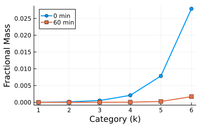

Stochastic Collection Equation
Overview
This module implements the two-moment method for solving the stochastic collection equation (SCE) for cloud droplet coalescence. The SCE describes the evolution of a drop size distribution due to gravitational collection, where larger drops fall faster and sweep up smaller ones.
The method conserves two moments per mass category: number concentration $N_k$ and mass concentration $M_k$. Closure is achieved using a nondimensional parameter $\bar{\xi}_p$ that relates higher-order moments to these two tracked moments, avoiding the need for weighting functions. The approach is more accurate and computationally efficient than single-moment methods such as Bleck's (1970) algorithm.
Reference:
- Tzivion, S., Feingold, G., and Levin, Z. (1989) "The Evolution of Raindrop Spectra. Part II: Collisional Collection/Breakup and Evaporation in a Rainshaft", Journal of the Atmospheric Sciences, 46(21), 3312-3327.
Implementation Scope and Limitations
This implementation covers only the collisional collection process described in the 1989 paper. The following processes from the paper are not yet implemented:
- Breakup processes: Critical for realistic evolution of larger raindrops (>2-3 mm diameter)
- Evaporation processes: Important for smaller droplets and subsaturated environments
- Sedimentation processes: Affects vertical distribution and spectral evolution with altitude
For a complete reproduction of the paper's results, these additional physics processes would need to be implemented and coupled with the collection equation.
Aerosol.StochasticCollectionCoalescence — Function
StochasticCollectionCoalescence(; name=:StochasticCollectionCoalescence, I=36, x1=1.6e-14, kernel_type=:constant, kernel_params=Dict(:K0 => 1e-10))Solve the stochastic collection equation (SCE) for cloud droplet coalescence using a two-moment method in discrete mass categories with p = 2 (mass-doubling categories).
This implements the collection-only component from Tzivion et al. (1989). The breakup, evaporation, and sedimentation processes from the full paper are not included.
Reference:
- Tzivion, S., Feingold, G., and Levin, Z. (1989) "The Evolution of Raindrop Spectra. Part II: Collisional Collection/Breakup and Evaporation in a Rainshaft", Journal of the Atmospheric Sciences, 46(21), 3312-3327.
Implementation Note: This implementation covers only the collisional collection component from the 1989 paper. The complete physical system described in the paper also includes breakup, evaporation, and sedimentation processes, which are not yet implemented. The two-moment method uses geometrically doubling mass categories and closure via the nondimensional parameter ξ_p.
The SCE describes the evolution of a drop size distribution due to gravitational coalescence (collection). The continuous spectrum is divided into I discrete mass categories with geometrically increasing boundaries ($x_{k+1} = 2 x_k$), and two moments are tracked per category: number concentration $N_k$ (m⁻³) and mass concentration $M_k$ (kg m⁻³). Closure is achieved via a nondimensional parameter $\bar{\xi}_p$ that relates higher-order moments to these two (Eq. 8a,b).
The equations for each category follow Eq. (9a,b) in the paper, with incomplete category integrals evaluated using a linear distribution function approximation (Eq. 11-13) and positivity constraints (Eq. 15a,b).
The implementation uses symbolic array operations (@arrayop and @makearray from SymbolicUtils.jl) for all computations: closure relations, linear distribution parameters, shifted arrays, and summation reductions. Rate assembly uses level-2 @arrayop with ifelse masks for variable-bound sums and the ifelse(i==1, ...) trick for per-k terms.
Kernel Types
:constant— $K(x,y) = K_0$. Requireskernel_params = Dict(:K0 => value)in m³ s⁻¹.:golovin— $K(x,y) = C(x+y)$. Requireskernel_params = Dict(:C => value)in m³ s⁻¹ kg⁻¹.
Arguments
I: Number of mass categories (default 36)x1: Lower mass boundary of the first category in kg (default ~1.6e-14 kg, corresponding to D≈3.125 μm)kernel_type: Collection kernel type, one of:constantor:golovinkernel_params: Dictionary of kernel parameters
Implementation
The continuous drop spectrum is divided into $I$ discrete mass categories with geometrically increasing boundaries ($x_{k+1} = 2 x_k$, i.e. $p = 2$). Two moments are tracked per category:
- $N_k$: number concentration (m⁻³)
- $M_k$: mass concentration (kg m⁻³)
The moment equations follow Eq. (9a,b) in the paper, with incomplete category integrals evaluated using a linear distribution function approximation (Eq. 11-13) and positivity constraints (Eq. 15a,b).
State Variables
using DataFrames, ModelingToolkit, Symbolics, DynamicQuantities
using Aerosol
sys = StochasticCollectionCoalescence(; I=5, kernel_type=:constant, kernel_params=Dict(:K0 => 1e-10))
vars = unknowns(sys)
DataFrame(
:Name => [string(Symbolics.tosymbol(v, escape = false)) for v in vars],
:Units => [dimension(ModelingToolkit.get_unit(v)) for v in vars],
:Description => [ModelingToolkit.getdescription(v) for v in vars]
)| Row | Name | Units | Description |
|---|---|---|---|
| String | Dimensio… | String | |
| 1 | getindex | m⁻³ | Number concentration in category k |
| 2 | getindex | m⁻³ | Number concentration in category k |
| 3 | getindex | m⁻³ | Number concentration in category k |
| 4 | getindex | m⁻³ | Number concentration in category k |
| 5 | getindex | m⁻³ | Number concentration in category k |
| 6 | getindex | m⁻³ kg | Mass concentration in category k |
| 7 | getindex | m⁻³ kg | Mass concentration in category k |
| 8 | getindex | m⁻³ kg | Mass concentration in category k |
| 9 | getindex | m⁻³ kg | Mass concentration in category k |
| 10 | getindex | m⁻³ kg | Mass concentration in category k |
Equations
eqs = equations(sys)10-element Vector{Symbolics.Equation}:
Differential(t, 1)((Nk(t))[1]) ~ ifelse(5 <= -1, 0.0, 0.0) + ifelse(5 >= 2, -1.0e-10(Nk(t))[1]*(Nk(t))[5], 0.0) + ifelse(2 == 1, -1.0e-10((Nk(t))[1]^2), 0.0) + ifelse(3 <= -1, 0.0, 0.0) + ifelse(1 == 1, -1.0e-10((Nk(t))[1]^2), 0.0) + ifelse(4 <= 0, -1.0e-10((Mk(t))[4]*ifelse(ifelse((Nk(t))[1] > 0, (Mk(t))[1] / (Nk(t))[1], 1.6e-14) < 1.6e-14, 1.2499999999999998e14(Nk(t))[1], ifelse(ifelse((Nk(t))[1] > 0, (Mk(t))[1] / (Nk(t))[1], 1.6e-14) > 3.2e-14, 0.0, 7.812499999999999e27(Mk(t))[1] - 1.2499999999999998e14(Nk(t))[1])) + 3.1249999999999996e13ifelse((Nk(t))[4] > 0, (XI_P*((Mk(t))[4]^2)) / (Nk(t))[4], 0.0)*(ifelse(ifelse((Nk(t))[1] > 0, (Mk(t))[1] / (Nk(t))[1], 1.6e-14) < 1.6e-14, 0.0, ifelse(ifelse((Nk(t))[1] > 0, (Mk(t))[1] / (Nk(t))[1], 1.6e-14) > 3.2e-14, 1.2499999999999998e14(Nk(t))[1], -7.812499999999999e27(Mk(t))[1] + 2.4999999999999997e14(Nk(t))[1])) - ifelse(ifelse((Nk(t))[1] > 0, (Mk(t))[1] / (Nk(t))[1], 1.6e-14) < 1.6e-14, 1.2499999999999998e14(Nk(t))[1], ifelse(ifelse((Nk(t))[1] > 0, (Mk(t))[1] / (Nk(t))[1], 1.6e-14) > 3.2e-14, 0.0, 7.812499999999999e27(Mk(t))[1] - 1.2499999999999998e14(Nk(t))[1])))), 0.0) + ifelse(1 >= 2, -1.0e-10((Nk(t))[1]^2), 0.0) + ifelse(2 >= 2, -1.0e-10(Nk(t))[1]*(Nk(t))[2], 0.0) + ifelse(4 <= -1, 0.0, 0.0) + ifelse(4 == 1, -1.0e-10((Nk(t))[1]^2), 0.0) + ifelse(2 <= 0, -1.0e-10(3.1249999999999996e13ifelse((Nk(t))[2] > 0, (XI_P*((Mk(t))[2]^2)) / (Nk(t))[2], 0.0)*(ifelse(ifelse((Nk(t))[1] > 0, (Mk(t))[1] / (Nk(t))[1], 1.6e-14) < 1.6e-14, 0.0, ifelse(ifelse((Nk(t))[1] > 0, (Mk(t))[1] / (Nk(t))[1], 1.6e-14) > 3.2e-14, 1.2499999999999998e14(Nk(t))[1], -7.812499999999999e27(Mk(t))[1] + 2.4999999999999997e14(Nk(t))[1])) - ifelse(ifelse((Nk(t))[1] > 0, (Mk(t))[1] / (Nk(t))[1], 1.6e-14) < 1.6e-14, 1.2499999999999998e14(Nk(t))[1], ifelse(ifelse((Nk(t))[1] > 0, (Mk(t))[1] / (Nk(t))[1], 1.6e-14) > 3.2e-14, 0.0, 7.812499999999999e27(Mk(t))[1] - 1.2499999999999998e14(Nk(t))[1]))) + (Mk(t))[2]*ifelse(ifelse((Nk(t))[1] > 0, (Mk(t))[1] / (Nk(t))[1], 1.6e-14) < 1.6e-14, 1.2499999999999998e14(Nk(t))[1], ifelse(ifelse((Nk(t))[1] > 0, (Mk(t))[1] / (Nk(t))[1], 1.6e-14) > 3.2e-14, 0.0, 7.812499999999999e27(Mk(t))[1] - 1.2499999999999998e14(Nk(t))[1]))), 0.0) + ifelse(1 <= -1, 0.0, 0.0) + ifelse(2 <= -1, 0.0, 0.0) + ifelse(1 <= 0, -1.0e-10(3.1249999999999996e13ifelse((Nk(t))[1] > 0, (XI_P*((Mk(t))[1]^2)) / (Nk(t))[1], 0.0)*(ifelse(ifelse((Nk(t))[1] > 0, (Mk(t))[1] / (Nk(t))[1], 1.6e-14) < 1.6e-14, 0.0, ifelse(ifelse((Nk(t))[1] > 0, (Mk(t))[1] / (Nk(t))[1], 1.6e-14) > 3.2e-14, 1.2499999999999998e14(Nk(t))[1], -7.812499999999999e27(Mk(t))[1] + 2.4999999999999997e14(Nk(t))[1])) - ifelse(ifelse((Nk(t))[1] > 0, (Mk(t))[1] / (Nk(t))[1], 1.6e-14) < 1.6e-14, 1.2499999999999998e14(Nk(t))[1], ifelse(ifelse((Nk(t))[1] > 0, (Mk(t))[1] / (Nk(t))[1], 1.6e-14) > 3.2e-14, 0.0, 7.812499999999999e27(Mk(t))[1] - 1.2499999999999998e14(Nk(t))[1]))) + (Mk(t))[1]*ifelse(ifelse((Nk(t))[1] > 0, (Mk(t))[1] / (Nk(t))[1], 1.6e-14) < 1.6e-14, 1.2499999999999998e14(Nk(t))[1], ifelse(ifelse((Nk(t))[1] > 0, (Mk(t))[1] / (Nk(t))[1], 1.6e-14) > 3.2e-14, 0.0, 7.812499999999999e27(Mk(t))[1] - 1.2499999999999998e14(Nk(t))[1]))), 0.0) + ifelse(3 >= 2, -1.0e-10(Nk(t))[1]*(Nk(t))[3], 0.0) + ifelse(3 <= 0, -1.0e-10(3.1249999999999996e13ifelse((Nk(t))[3] > 0, (XI_P*((Mk(t))[3]^2)) / (Nk(t))[3], 0.0)*(ifelse(ifelse((Nk(t))[1] > 0, (Mk(t))[1] / (Nk(t))[1], 1.6e-14) < 1.6e-14, 0.0, ifelse(ifelse((Nk(t))[1] > 0, (Mk(t))[1] / (Nk(t))[1], 1.6e-14) > 3.2e-14, 1.2499999999999998e14(Nk(t))[1], -7.812499999999999e27(Mk(t))[1] + 2.4999999999999997e14(Nk(t))[1])) - ifelse(ifelse((Nk(t))[1] > 0, (Mk(t))[1] / (Nk(t))[1], 1.6e-14) < 1.6e-14, 1.2499999999999998e14(Nk(t))[1], ifelse(ifelse((Nk(t))[1] > 0, (Mk(t))[1] / (Nk(t))[1], 1.6e-14) > 3.2e-14, 0.0, 7.812499999999999e27(Mk(t))[1] - 1.2499999999999998e14(Nk(t))[1]))) + (Mk(t))[3]*ifelse(ifelse((Nk(t))[1] > 0, (Mk(t))[1] / (Nk(t))[1], 1.6e-14) < 1.6e-14, 1.2499999999999998e14(Nk(t))[1], ifelse(ifelse((Nk(t))[1] > 0, (Mk(t))[1] / (Nk(t))[1], 1.6e-14) > 3.2e-14, 0.0, 7.812499999999999e27(Mk(t))[1] - 1.2499999999999998e14(Nk(t))[1]))), 0.0) + ifelse(3 == 1, -1.0e-10((Nk(t))[1]^2), 0.0) + ifelse(5 <= 0, -1.0e-10(3.1249999999999996e13ifelse((Nk(t))[5] > 0, (XI_P*((Mk(t))[5]^2)) / (Nk(t))[5], 0.0)*(ifelse(ifelse((Nk(t))[1] > 0, (Mk(t))[1] / (Nk(t))[1], 1.6e-14) < 1.6e-14, 0.0, ifelse(ifelse((Nk(t))[1] > 0, (Mk(t))[1] / (Nk(t))[1], 1.6e-14) > 3.2e-14, 1.2499999999999998e14(Nk(t))[1], -7.812499999999999e27(Mk(t))[1] + 2.4999999999999997e14(Nk(t))[1])) - ifelse(ifelse((Nk(t))[1] > 0, (Mk(t))[1] / (Nk(t))[1], 1.6e-14) < 1.6e-14, 1.2499999999999998e14(Nk(t))[1], ifelse(ifelse((Nk(t))[1] > 0, (Mk(t))[1] / (Nk(t))[1], 1.6e-14) > 3.2e-14, 0.0, 7.812499999999999e27(Mk(t))[1] - 1.2499999999999998e14(Nk(t))[1]))) + (Mk(t))[5]*ifelse(ifelse((Nk(t))[1] > 0, (Mk(t))[1] / (Nk(t))[1], 1.6e-14) < 1.6e-14, 1.2499999999999998e14(Nk(t))[1], ifelse(ifelse((Nk(t))[1] > 0, (Mk(t))[1] / (Nk(t))[1], 1.6e-14) > 3.2e-14, 0.0, 7.812499999999999e27(Mk(t))[1] - 1.2499999999999998e14(Nk(t))[1]))), 0.0) + ifelse(5 == 1, -1.0e-10((Nk(t))[1]^2), 0.0) + ifelse(4 >= 2, -1.0e-10(Nk(t))[1]*(Nk(t))[4], 0.0)
Differential(t, 1)((Nk(t))[2]) ~ ifelse(2 >= 3, -1.0e-10((Nk(t))[2]^2), 0.0) + ifelse(2 <= 0, 1.0e-10(3.1249999999999996e13ifelse((Nk(t))[2] > 0, (XI_P*((Mk(t))[2]^2)) / (Nk(t))[2], 0.0)*(ifelse(ifelse((Nk(t))[1] > 0, (Mk(t))[1] / (Nk(t))[1], 1.6e-14) < 1.6e-14, 0.0, ifelse(ifelse((Nk(t))[1] > 0, (Mk(t))[1] / (Nk(t))[1], 1.6e-14) > 3.2e-14, 1.2499999999999998e14(Nk(t))[1], -7.812499999999999e27(Mk(t))[1] + 2.4999999999999997e14(Nk(t))[1])) - ifelse(ifelse((Nk(t))[1] > 0, (Mk(t))[1] / (Nk(t))[1], 1.6e-14) < 1.6e-14, 1.2499999999999998e14(Nk(t))[1], ifelse(ifelse((Nk(t))[1] > 0, (Mk(t))[1] / (Nk(t))[1], 1.6e-14) > 3.2e-14, 0.0, 7.812499999999999e27(Mk(t))[1] - 1.2499999999999998e14(Nk(t))[1]))) + (Mk(t))[2]*ifelse(ifelse((Nk(t))[1] > 0, (Mk(t))[1] / (Nk(t))[1], 1.6e-14) < 1.6e-14, 1.2499999999999998e14(Nk(t))[1], ifelse(ifelse((Nk(t))[1] > 0, (Mk(t))[1] / (Nk(t))[1], 1.6e-14) > 3.2e-14, 0.0, 7.812499999999999e27(Mk(t))[1] - 1.2499999999999998e14(Nk(t))[1]))), 0.0) + ifelse(4 == 1, 5.0e-11((Nk(t))[1]^2) - 1.0e-10((Nk(t))[2]^2), 0.0) + ifelse(1 == 1, 5.0e-11((Nk(t))[1]^2) - 1.0e-10((Nk(t))[2]^2), 0.0) + ifelse(1 >= 3, -1.0e-10(Nk(t))[1]*(Nk(t))[2], 0.0) + ifelse(5 >= 3, -1.0e-10(Nk(t))[2]*(Nk(t))[5], 0.0) + ifelse(1 <= 1, -1.0e-10((ifelse((Nk(t))[1] > 0, (XI_P*((Mk(t))[1]^2)) / (Nk(t))[1], 0.0)*(ifelse(ifelse((Nk(t))[2] > 0, (Mk(t))[2] / (Nk(t))[2], 1.6e-14p) < (1.6e-14p), 0.0, ifelse(ifelse((Nk(t))[2] > 0, (Mk(t))[2] / (Nk(t))[2], 1.6e-14p) > (3.2e-14p), (2(Nk(t))[2]) / (1.6e-14p), (4(Nk(t))[2]) / (1.6e-14p) + (-2(Mk(t))[2]) / (2.56e-28(p^2)))) - ifelse(ifelse((Nk(t))[2] > 0, (Mk(t))[2] / (Nk(t))[2], 1.6e-14p) < (1.6e-14p), (2(Nk(t))[2]) / (1.6e-14p), ifelse(ifelse((Nk(t))[2] > 0, (Mk(t))[2] / (Nk(t))[2], 1.6e-14p) > (3.2e-14p), 0.0, (2(Mk(t))[2]) / (2.56e-28(p^2)) + (-2(Nk(t))[2]) / (1.6e-14p))))) / (3.2e-14p) + (Mk(t))[1]*ifelse(ifelse((Nk(t))[2] > 0, (Mk(t))[2] / (Nk(t))[2], 1.6e-14p) < (1.6e-14p), (2(Nk(t))[2]) / (1.6e-14p), ifelse(ifelse((Nk(t))[2] > 0, (Mk(t))[2] / (Nk(t))[2], 1.6e-14p) > (3.2e-14p), 0.0, (2(Mk(t))[2]) / (2.56e-28(p^2)) + (-2(Nk(t))[2]) / (1.6e-14p)))), 0.0) + ifelse(4 >= 3, -1.0e-10(Nk(t))[2]*(Nk(t))[4], 0.0) + ifelse(3 <= 0, 1.0e-10(3.1249999999999996e13ifelse((Nk(t))[3] > 0, (XI_P*((Mk(t))[3]^2)) / (Nk(t))[3], 0.0)*(ifelse(ifelse((Nk(t))[1] > 0, (Mk(t))[1] / (Nk(t))[1], 1.6e-14) < 1.6e-14, 0.0, ifelse(ifelse((Nk(t))[1] > 0, (Mk(t))[1] / (Nk(t))[1], 1.6e-14) > 3.2e-14, 1.2499999999999998e14(Nk(t))[1], -7.812499999999999e27(Mk(t))[1] + 2.4999999999999997e14(Nk(t))[1])) - ifelse(ifelse((Nk(t))[1] > 0, (Mk(t))[1] / (Nk(t))[1], 1.6e-14) < 1.6e-14, 1.2499999999999998e14(Nk(t))[1], ifelse(ifelse((Nk(t))[1] > 0, (Mk(t))[1] / (Nk(t))[1], 1.6e-14) > 3.2e-14, 0.0, 7.812499999999999e27(Mk(t))[1] - 1.2499999999999998e14(Nk(t))[1]))) + (Mk(t))[3]*ifelse(ifelse((Nk(t))[1] > 0, (Mk(t))[1] / (Nk(t))[1], 1.6e-14) < 1.6e-14, 1.2499999999999998e14(Nk(t))[1], ifelse(ifelse((Nk(t))[1] > 0, (Mk(t))[1] / (Nk(t))[1], 1.6e-14) > 3.2e-14, 0.0, 7.812499999999999e27(Mk(t))[1] - 1.2499999999999998e14(Nk(t))[1]))), 0.0) + ifelse(5 <= 0, 1.0e-10(3.1249999999999996e13ifelse((Nk(t))[5] > 0, (XI_P*((Mk(t))[5]^2)) / (Nk(t))[5], 0.0)*(ifelse(ifelse((Nk(t))[1] > 0, (Mk(t))[1] / (Nk(t))[1], 1.6e-14) < 1.6e-14, 0.0, ifelse(ifelse((Nk(t))[1] > 0, (Mk(t))[1] / (Nk(t))[1], 1.6e-14) > 3.2e-14, 1.2499999999999998e14(Nk(t))[1], -7.812499999999999e27(Mk(t))[1] + 2.4999999999999997e14(Nk(t))[1])) - ifelse(ifelse((Nk(t))[1] > 0, (Mk(t))[1] / (Nk(t))[1], 1.6e-14) < 1.6e-14, 1.2499999999999998e14(Nk(t))[1], ifelse(ifelse((Nk(t))[1] > 0, (Mk(t))[1] / (Nk(t))[1], 1.6e-14) > 3.2e-14, 0.0, 7.812499999999999e27(Mk(t))[1] - 1.2499999999999998e14(Nk(t))[1]))) + (Mk(t))[5]*ifelse(ifelse((Nk(t))[1] > 0, (Mk(t))[1] / (Nk(t))[1], 1.6e-14) < 1.6e-14, 1.2499999999999998e14(Nk(t))[1], ifelse(ifelse((Nk(t))[1] > 0, (Mk(t))[1] / (Nk(t))[1], 1.6e-14) > 3.2e-14, 0.0, 7.812499999999999e27(Mk(t))[1] - 1.2499999999999998e14(Nk(t))[1]))), 0.0) + ifelse(4 <= 0, 1.0e-10((Mk(t))[4]*ifelse(ifelse((Nk(t))[1] > 0, (Mk(t))[1] / (Nk(t))[1], 1.6e-14) < 1.6e-14, 1.2499999999999998e14(Nk(t))[1], ifelse(ifelse((Nk(t))[1] > 0, (Mk(t))[1] / (Nk(t))[1], 1.6e-14) > 3.2e-14, 0.0, 7.812499999999999e27(Mk(t))[1] - 1.2499999999999998e14(Nk(t))[1])) + 3.1249999999999996e13ifelse((Nk(t))[4] > 0, (XI_P*((Mk(t))[4]^2)) / (Nk(t))[4], 0.0)*(ifelse(ifelse((Nk(t))[1] > 0, (Mk(t))[1] / (Nk(t))[1], 1.6e-14) < 1.6e-14, 0.0, ifelse(ifelse((Nk(t))[1] > 0, (Mk(t))[1] / (Nk(t))[1], 1.6e-14) > 3.2e-14, 1.2499999999999998e14(Nk(t))[1], -7.812499999999999e27(Mk(t))[1] + 2.4999999999999997e14(Nk(t))[1])) - ifelse(ifelse((Nk(t))[1] > 0, (Mk(t))[1] / (Nk(t))[1], 1.6e-14) < 1.6e-14, 1.2499999999999998e14(Nk(t))[1], ifelse(ifelse((Nk(t))[1] > 0, (Mk(t))[1] / (Nk(t))[1], 1.6e-14) > 3.2e-14, 0.0, 7.812499999999999e27(Mk(t))[1] - 1.2499999999999998e14(Nk(t))[1])))), 0.0) + ifelse(5 <= 1, -1.0e-10((ifelse((Nk(t))[5] > 0, (XI_P*((Mk(t))[5]^2)) / (Nk(t))[5], 0.0)*(ifelse(ifelse((Nk(t))[2] > 0, (Mk(t))[2] / (Nk(t))[2], 1.6e-14p) < (1.6e-14p), 0.0, ifelse(ifelse((Nk(t))[2] > 0, (Mk(t))[2] / (Nk(t))[2], 1.6e-14p) > (3.2e-14p), (2(Nk(t))[2]) / (1.6e-14p), (4(Nk(t))[2]) / (1.6e-14p) + (-2(Mk(t))[2]) / (2.56e-28(p^2)))) - ifelse(ifelse((Nk(t))[2] > 0, (Mk(t))[2] / (Nk(t))[2], 1.6e-14p) < (1.6e-14p), (2(Nk(t))[2]) / (1.6e-14p), ifelse(ifelse((Nk(t))[2] > 0, (Mk(t))[2] / (Nk(t))[2], 1.6e-14p) > (3.2e-14p), 0.0, (2(Mk(t))[2]) / (2.56e-28(p^2)) + (-2(Nk(t))[2]) / (1.6e-14p))))) / (3.2e-14p) + (Mk(t))[5]*ifelse(ifelse((Nk(t))[2] > 0, (Mk(t))[2] / (Nk(t))[2], 1.6e-14p) < (1.6e-14p), (2(Nk(t))[2]) / (1.6e-14p), ifelse(ifelse((Nk(t))[2] > 0, (Mk(t))[2] / (Nk(t))[2], 1.6e-14p) > (3.2e-14p), 0.0, (2(Mk(t))[2]) / (2.56e-28(p^2)) + (-2(Nk(t))[2]) / (1.6e-14p)))), 0.0) + ifelse(3 <= 1, -1.0e-10((ifelse((Nk(t))[3] > 0, (XI_P*((Mk(t))[3]^2)) / (Nk(t))[3], 0.0)*(ifelse(ifelse((Nk(t))[2] > 0, (Mk(t))[2] / (Nk(t))[2], 1.6e-14p) < (1.6e-14p), 0.0, ifelse(ifelse((Nk(t))[2] > 0, (Mk(t))[2] / (Nk(t))[2], 1.6e-14p) > (3.2e-14p), (2(Nk(t))[2]) / (1.6e-14p), (4(Nk(t))[2]) / (1.6e-14p) + (-2(Mk(t))[2]) / (2.56e-28(p^2)))) - ifelse(ifelse((Nk(t))[2] > 0, (Mk(t))[2] / (Nk(t))[2], 1.6e-14p) < (1.6e-14p), (2(Nk(t))[2]) / (1.6e-14p), ifelse(ifelse((Nk(t))[2] > 0, (Mk(t))[2] / (Nk(t))[2], 1.6e-14p) > (3.2e-14p), 0.0, (2(Mk(t))[2]) / (2.56e-28(p^2)) + (-2(Nk(t))[2]) / (1.6e-14p))))) / (3.2e-14p) + (Mk(t))[3]*ifelse(ifelse((Nk(t))[2] > 0, (Mk(t))[2] / (Nk(t))[2], 1.6e-14p) < (1.6e-14p), (2(Nk(t))[2]) / (1.6e-14p), ifelse(ifelse((Nk(t))[2] > 0, (Mk(t))[2] / (Nk(t))[2], 1.6e-14p) > (3.2e-14p), 0.0, (2(Mk(t))[2]) / (2.56e-28(p^2)) + (-2(Nk(t))[2]) / (1.6e-14p)))), 0.0) + ifelse(5 == 1, 5.0e-11((Nk(t))[1]^2) - 1.0e-10((Nk(t))[2]^2), 0.0) + ifelse(3 == 1, 5.0e-11((Nk(t))[1]^2) - 1.0e-10((Nk(t))[2]^2), 0.0) + ifelse(4 <= 1, -1.0e-10((ifelse((Nk(t))[4] > 0, (XI_P*((Mk(t))[4]^2)) / (Nk(t))[4], 0.0)*(ifelse(ifelse((Nk(t))[2] > 0, (Mk(t))[2] / (Nk(t))[2], 1.6e-14p) < (1.6e-14p), 0.0, ifelse(ifelse((Nk(t))[2] > 0, (Mk(t))[2] / (Nk(t))[2], 1.6e-14p) > (3.2e-14p), (2(Nk(t))[2]) / (1.6e-14p), (4(Nk(t))[2]) / (1.6e-14p) + (-2(Mk(t))[2]) / (2.56e-28(p^2)))) - ifelse(ifelse((Nk(t))[2] > 0, (Mk(t))[2] / (Nk(t))[2], 1.6e-14p) < (1.6e-14p), (2(Nk(t))[2]) / (1.6e-14p), ifelse(ifelse((Nk(t))[2] > 0, (Mk(t))[2] / (Nk(t))[2], 1.6e-14p) > (3.2e-14p), 0.0, (2(Mk(t))[2]) / (2.56e-28(p^2)) + (-2(Nk(t))[2]) / (1.6e-14p))))) / (3.2e-14p) + (Mk(t))[4]*ifelse(ifelse((Nk(t))[2] > 0, (Mk(t))[2] / (Nk(t))[2], 1.6e-14p) < (1.6e-14p), (2(Nk(t))[2]) / (1.6e-14p), ifelse(ifelse((Nk(t))[2] > 0, (Mk(t))[2] / (Nk(t))[2], 1.6e-14p) > (3.2e-14p), 0.0, (2(Mk(t))[2]) / (2.56e-28(p^2)) + (-2(Nk(t))[2]) / (1.6e-14p)))), 0.0) + ifelse(2 <= 1, -1.0e-10((ifelse((Nk(t))[2] > 0, (XI_P*((Mk(t))[2]^2)) / (Nk(t))[2], 0.0)*(ifelse(ifelse((Nk(t))[2] > 0, (Mk(t))[2] / (Nk(t))[2], 1.6e-14p) < (1.6e-14p), 0.0, ifelse(ifelse((Nk(t))[2] > 0, (Mk(t))[2] / (Nk(t))[2], 1.6e-14p) > (3.2e-14p), (2(Nk(t))[2]) / (1.6e-14p), (4(Nk(t))[2]) / (1.6e-14p) + (-2(Mk(t))[2]) / (2.56e-28(p^2)))) - ifelse(ifelse((Nk(t))[2] > 0, (Mk(t))[2] / (Nk(t))[2], 1.6e-14p) < (1.6e-14p), (2(Nk(t))[2]) / (1.6e-14p), ifelse(ifelse((Nk(t))[2] > 0, (Mk(t))[2] / (Nk(t))[2], 1.6e-14p) > (3.2e-14p), 0.0, (2(Mk(t))[2]) / (2.56e-28(p^2)) + (-2(Nk(t))[2]) / (1.6e-14p))))) / (3.2e-14p) + (Mk(t))[2]*ifelse(ifelse((Nk(t))[2] > 0, (Mk(t))[2] / (Nk(t))[2], 1.6e-14p) < (1.6e-14p), (2(Nk(t))[2]) / (1.6e-14p), ifelse(ifelse((Nk(t))[2] > 0, (Mk(t))[2] / (Nk(t))[2], 1.6e-14p) > (3.2e-14p), 0.0, (2(Mk(t))[2]) / (2.56e-28(p^2)) + (-2(Nk(t))[2]) / (1.6e-14p)))), 0.0) + ifelse(1 <= 0, 1.0e-10(3.1249999999999996e13ifelse((Nk(t))[1] > 0, (XI_P*((Mk(t))[1]^2)) / (Nk(t))[1], 0.0)*(ifelse(ifelse((Nk(t))[1] > 0, (Mk(t))[1] / (Nk(t))[1], 1.6e-14) < 1.6e-14, 0.0, ifelse(ifelse((Nk(t))[1] > 0, (Mk(t))[1] / (Nk(t))[1], 1.6e-14) > 3.2e-14, 1.2499999999999998e14(Nk(t))[1], -7.812499999999999e27(Mk(t))[1] + 2.4999999999999997e14(Nk(t))[1])) - ifelse(ifelse((Nk(t))[1] > 0, (Mk(t))[1] / (Nk(t))[1], 1.6e-14) < 1.6e-14, 1.2499999999999998e14(Nk(t))[1], ifelse(ifelse((Nk(t))[1] > 0, (Mk(t))[1] / (Nk(t))[1], 1.6e-14) > 3.2e-14, 0.0, 7.812499999999999e27(Mk(t))[1] - 1.2499999999999998e14(Nk(t))[1]))) + (Mk(t))[1]*ifelse(ifelse((Nk(t))[1] > 0, (Mk(t))[1] / (Nk(t))[1], 1.6e-14) < 1.6e-14, 1.2499999999999998e14(Nk(t))[1], ifelse(ifelse((Nk(t))[1] > 0, (Mk(t))[1] / (Nk(t))[1], 1.6e-14) > 3.2e-14, 0.0, 7.812499999999999e27(Mk(t))[1] - 1.2499999999999998e14(Nk(t))[1]))), 0.0) + ifelse(3 >= 3, -1.0e-10(Nk(t))[2]*(Nk(t))[3], 0.0) + ifelse(2 == 1, 5.0e-11((Nk(t))[1]^2) - 1.0e-10((Nk(t))[2]^2), 0.0)
Differential(t, 1)((Nk(t))[3]) ~ ifelse(1 >= 4, -1.0e-10(Nk(t))[1]*(Nk(t))[3], 0.0) + ifelse(4 == 1, 5.0e-11((Nk(t))[2]^2) - 1.0e-10((Nk(t))[3]^2), 0.0) + ifelse(2 <= 1, 1.0e-10((ifelse((Nk(t))[2] > 0, (XI_P*((Mk(t))[2]^2)) / (Nk(t))[2], 0.0)*(ifelse(ifelse((Nk(t))[2] > 0, (Mk(t))[2] / (Nk(t))[2], 1.6e-14p) < (1.6e-14p), 0.0, ifelse(ifelse((Nk(t))[2] > 0, (Mk(t))[2] / (Nk(t))[2], 1.6e-14p) > (3.2e-14p), (2(Nk(t))[2]) / (1.6e-14p), (4(Nk(t))[2]) / (1.6e-14p) + (-2(Mk(t))[2]) / (2.56e-28(p^2)))) - ifelse(ifelse((Nk(t))[2] > 0, (Mk(t))[2] / (Nk(t))[2], 1.6e-14p) < (1.6e-14p), (2(Nk(t))[2]) / (1.6e-14p), ifelse(ifelse((Nk(t))[2] > 0, (Mk(t))[2] / (Nk(t))[2], 1.6e-14p) > (3.2e-14p), 0.0, (2(Mk(t))[2]) / (2.56e-28(p^2)) + (-2(Nk(t))[2]) / (1.6e-14p))))) / (3.2e-14p) + (Mk(t))[2]*ifelse(ifelse((Nk(t))[2] > 0, (Mk(t))[2] / (Nk(t))[2], 1.6e-14p) < (1.6e-14p), (2(Nk(t))[2]) / (1.6e-14p), ifelse(ifelse((Nk(t))[2] > 0, (Mk(t))[2] / (Nk(t))[2], 1.6e-14p) > (3.2e-14p), 0.0, (2(Mk(t))[2]) / (2.56e-28(p^2)) + (-2(Nk(t))[2]) / (1.6e-14p)))), 0.0) + ifelse(3 <= 1, 1.0e-10((ifelse((Nk(t))[3] > 0, (XI_P*((Mk(t))[3]^2)) / (Nk(t))[3], 0.0)*(ifelse(ifelse((Nk(t))[2] > 0, (Mk(t))[2] / (Nk(t))[2], 1.6e-14p) < (1.6e-14p), 0.0, ifelse(ifelse((Nk(t))[2] > 0, (Mk(t))[2] / (Nk(t))[2], 1.6e-14p) > (3.2e-14p), (2(Nk(t))[2]) / (1.6e-14p), (4(Nk(t))[2]) / (1.6e-14p) + (-2(Mk(t))[2]) / (2.56e-28(p^2)))) - ifelse(ifelse((Nk(t))[2] > 0, (Mk(t))[2] / (Nk(t))[2], 1.6e-14p) < (1.6e-14p), (2(Nk(t))[2]) / (1.6e-14p), ifelse(ifelse((Nk(t))[2] > 0, (Mk(t))[2] / (Nk(t))[2], 1.6e-14p) > (3.2e-14p), 0.0, (2(Mk(t))[2]) / (2.56e-28(p^2)) + (-2(Nk(t))[2]) / (1.6e-14p))))) / (3.2e-14p) + (Mk(t))[3]*ifelse(ifelse((Nk(t))[2] > 0, (Mk(t))[2] / (Nk(t))[2], 1.6e-14p) < (1.6e-14p), (2(Nk(t))[2]) / (1.6e-14p), ifelse(ifelse((Nk(t))[2] > 0, (Mk(t))[2] / (Nk(t))[2], 1.6e-14p) > (3.2e-14p), 0.0, (2(Mk(t))[2]) / (2.56e-28(p^2)) + (-2(Nk(t))[2]) / (1.6e-14p)))), 0.0) + ifelse(5 == 1, 5.0e-11((Nk(t))[2]^2) - 1.0e-10((Nk(t))[3]^2), 0.0) + ifelse(3 >= 4, -1.0e-10((Nk(t))[3]^2), 0.0) + ifelse(1 <= 2, -1.0e-10(((ifelse(ifelse((Nk(t))[3] > 0, (Mk(t))[3] / (Nk(t))[3], 1.6e-14(p^2)) < (1.6e-14(p^2)), 0.0, ifelse(ifelse((Nk(t))[3] > 0, (Mk(t))[3] / (Nk(t))[3], 1.6e-14(p^2)) > (3.2e-14(p^2)), (2(Nk(t))[3]) / (1.6e-14(p^2)), (4(Nk(t))[3]) / (1.6e-14(p^2)) + (-2(Mk(t))[3]) / (2.56e-28(p^4)))) - ifelse(ifelse((Nk(t))[3] > 0, (Mk(t))[3] / (Nk(t))[3], 1.6e-14(p^2)) < (1.6e-14(p^2)), (2(Nk(t))[3]) / (1.6e-14(p^2)), ifelse(ifelse((Nk(t))[3] > 0, (Mk(t))[3] / (Nk(t))[3], 1.6e-14(p^2)) > (3.2e-14(p^2)), 0.0, (2(Mk(t))[3]) / (2.56e-28(p^4)) + (-2(Nk(t))[3]) / (1.6e-14(p^2)))))*ifelse((Nk(t))[1] > 0, (XI_P*((Mk(t))[1]^2)) / (Nk(t))[1], 0.0)) / (3.2e-14(p^2)) + (Mk(t))[1]*ifelse(ifelse((Nk(t))[3] > 0, (Mk(t))[3] / (Nk(t))[3], 1.6e-14(p^2)) < (1.6e-14(p^2)), (2(Nk(t))[3]) / (1.6e-14(p^2)), ifelse(ifelse((Nk(t))[3] > 0, (Mk(t))[3] / (Nk(t))[3], 1.6e-14(p^2)) > (3.2e-14(p^2)), 0.0, (2(Mk(t))[3]) / (2.56e-28(p^4)) + (-2(Nk(t))[3]) / (1.6e-14(p^2))))), 0.0) + ifelse(2 <= 2, -1.0e-10(((ifelse(ifelse((Nk(t))[3] > 0, (Mk(t))[3] / (Nk(t))[3], 1.6e-14(p^2)) < (1.6e-14(p^2)), 0.0, ifelse(ifelse((Nk(t))[3] > 0, (Mk(t))[3] / (Nk(t))[3], 1.6e-14(p^2)) > (3.2e-14(p^2)), (2(Nk(t))[3]) / (1.6e-14(p^2)), (4(Nk(t))[3]) / (1.6e-14(p^2)) + (-2(Mk(t))[3]) / (2.56e-28(p^4)))) - ifelse(ifelse((Nk(t))[3] > 0, (Mk(t))[3] / (Nk(t))[3], 1.6e-14(p^2)) < (1.6e-14(p^2)), (2(Nk(t))[3]) / (1.6e-14(p^2)), ifelse(ifelse((Nk(t))[3] > 0, (Mk(t))[3] / (Nk(t))[3], 1.6e-14(p^2)) > (3.2e-14(p^2)), 0.0, (2(Mk(t))[3]) / (2.56e-28(p^4)) + (-2(Nk(t))[3]) / (1.6e-14(p^2)))))*ifelse((Nk(t))[2] > 0, (XI_P*((Mk(t))[2]^2)) / (Nk(t))[2], 0.0)) / (3.2e-14(p^2)) + (Mk(t))[2]*ifelse(ifelse((Nk(t))[3] > 0, (Mk(t))[3] / (Nk(t))[3], 1.6e-14(p^2)) < (1.6e-14(p^2)), (2(Nk(t))[3]) / (1.6e-14(p^2)), ifelse(ifelse((Nk(t))[3] > 0, (Mk(t))[3] / (Nk(t))[3], 1.6e-14(p^2)) > (3.2e-14(p^2)), 0.0, (2(Mk(t))[3]) / (2.56e-28(p^4)) + (-2(Nk(t))[3]) / (1.6e-14(p^2))))), 0.0) + ifelse(4 >= 4, -1.0e-10(Nk(t))[3]*(Nk(t))[4], 0.0) + ifelse(3 == 1, 5.0e-11((Nk(t))[2]^2) - 1.0e-10((Nk(t))[3]^2), 0.0) + ifelse(2 == 1, 5.0e-11((Nk(t))[2]^2) - 1.0e-10((Nk(t))[3]^2), 0.0) + ifelse(5 >= 4, -1.0e-10(Nk(t))[3]*(Nk(t))[5], 0.0) + ifelse(1 <= 1, 1.0e-10((ifelse((Nk(t))[1] > 0, (XI_P*((Mk(t))[1]^2)) / (Nk(t))[1], 0.0)*(ifelse(ifelse((Nk(t))[2] > 0, (Mk(t))[2] / (Nk(t))[2], 1.6e-14p) < (1.6e-14p), 0.0, ifelse(ifelse((Nk(t))[2] > 0, (Mk(t))[2] / (Nk(t))[2], 1.6e-14p) > (3.2e-14p), (2(Nk(t))[2]) / (1.6e-14p), (4(Nk(t))[2]) / (1.6e-14p) + (-2(Mk(t))[2]) / (2.56e-28(p^2)))) - ifelse(ifelse((Nk(t))[2] > 0, (Mk(t))[2] / (Nk(t))[2], 1.6e-14p) < (1.6e-14p), (2(Nk(t))[2]) / (1.6e-14p), ifelse(ifelse((Nk(t))[2] > 0, (Mk(t))[2] / (Nk(t))[2], 1.6e-14p) > (3.2e-14p), 0.0, (2(Mk(t))[2]) / (2.56e-28(p^2)) + (-2(Nk(t))[2]) / (1.6e-14p))))) / (3.2e-14p) + (Mk(t))[1]*ifelse(ifelse((Nk(t))[2] > 0, (Mk(t))[2] / (Nk(t))[2], 1.6e-14p) < (1.6e-14p), (2(Nk(t))[2]) / (1.6e-14p), ifelse(ifelse((Nk(t))[2] > 0, (Mk(t))[2] / (Nk(t))[2], 1.6e-14p) > (3.2e-14p), 0.0, (2(Mk(t))[2]) / (2.56e-28(p^2)) + (-2(Nk(t))[2]) / (1.6e-14p)))), 0.0) + ifelse(1 == 1, 5.0e-11((Nk(t))[2]^2) - 1.0e-10((Nk(t))[3]^2), 0.0) + ifelse(4 <= 2, -1.0e-10(((ifelse(ifelse((Nk(t))[3] > 0, (Mk(t))[3] / (Nk(t))[3], 1.6e-14(p^2)) < (1.6e-14(p^2)), 0.0, ifelse(ifelse((Nk(t))[3] > 0, (Mk(t))[3] / (Nk(t))[3], 1.6e-14(p^2)) > (3.2e-14(p^2)), (2(Nk(t))[3]) / (1.6e-14(p^2)), (4(Nk(t))[3]) / (1.6e-14(p^2)) + (-2(Mk(t))[3]) / (2.56e-28(p^4)))) - ifelse(ifelse((Nk(t))[3] > 0, (Mk(t))[3] / (Nk(t))[3], 1.6e-14(p^2)) < (1.6e-14(p^2)), (2(Nk(t))[3]) / (1.6e-14(p^2)), ifelse(ifelse((Nk(t))[3] > 0, (Mk(t))[3] / (Nk(t))[3], 1.6e-14(p^2)) > (3.2e-14(p^2)), 0.0, (2(Mk(t))[3]) / (2.56e-28(p^4)) + (-2(Nk(t))[3]) / (1.6e-14(p^2)))))*ifelse((Nk(t))[4] > 0, (XI_P*((Mk(t))[4]^2)) / (Nk(t))[4], 0.0)) / (3.2e-14(p^2)) + (Mk(t))[4]*ifelse(ifelse((Nk(t))[3] > 0, (Mk(t))[3] / (Nk(t))[3], 1.6e-14(p^2)) < (1.6e-14(p^2)), (2(Nk(t))[3]) / (1.6e-14(p^2)), ifelse(ifelse((Nk(t))[3] > 0, (Mk(t))[3] / (Nk(t))[3], 1.6e-14(p^2)) > (3.2e-14(p^2)), 0.0, (2(Mk(t))[3]) / (2.56e-28(p^4)) + (-2(Nk(t))[3]) / (1.6e-14(p^2))))), 0.0) + ifelse(5 <= 2, -1.0e-10(((ifelse(ifelse((Nk(t))[3] > 0, (Mk(t))[3] / (Nk(t))[3], 1.6e-14(p^2)) < (1.6e-14(p^2)), 0.0, ifelse(ifelse((Nk(t))[3] > 0, (Mk(t))[3] / (Nk(t))[3], 1.6e-14(p^2)) > (3.2e-14(p^2)), (2(Nk(t))[3]) / (1.6e-14(p^2)), (4(Nk(t))[3]) / (1.6e-14(p^2)) + (-2(Mk(t))[3]) / (2.56e-28(p^4)))) - ifelse(ifelse((Nk(t))[3] > 0, (Mk(t))[3] / (Nk(t))[3], 1.6e-14(p^2)) < (1.6e-14(p^2)), (2(Nk(t))[3]) / (1.6e-14(p^2)), ifelse(ifelse((Nk(t))[3] > 0, (Mk(t))[3] / (Nk(t))[3], 1.6e-14(p^2)) > (3.2e-14(p^2)), 0.0, (2(Mk(t))[3]) / (2.56e-28(p^4)) + (-2(Nk(t))[3]) / (1.6e-14(p^2)))))*ifelse((Nk(t))[5] > 0, (XI_P*((Mk(t))[5]^2)) / (Nk(t))[5], 0.0)) / (3.2e-14(p^2)) + (Mk(t))[5]*ifelse(ifelse((Nk(t))[3] > 0, (Mk(t))[3] / (Nk(t))[3], 1.6e-14(p^2)) < (1.6e-14(p^2)), (2(Nk(t))[3]) / (1.6e-14(p^2)), ifelse(ifelse((Nk(t))[3] > 0, (Mk(t))[3] / (Nk(t))[3], 1.6e-14(p^2)) > (3.2e-14(p^2)), 0.0, (2(Mk(t))[3]) / (2.56e-28(p^4)) + (-2(Nk(t))[3]) / (1.6e-14(p^2))))), 0.0) + ifelse(5 <= 1, 1.0e-10((ifelse((Nk(t))[5] > 0, (XI_P*((Mk(t))[5]^2)) / (Nk(t))[5], 0.0)*(ifelse(ifelse((Nk(t))[2] > 0, (Mk(t))[2] / (Nk(t))[2], 1.6e-14p) < (1.6e-14p), 0.0, ifelse(ifelse((Nk(t))[2] > 0, (Mk(t))[2] / (Nk(t))[2], 1.6e-14p) > (3.2e-14p), (2(Nk(t))[2]) / (1.6e-14p), (4(Nk(t))[2]) / (1.6e-14p) + (-2(Mk(t))[2]) / (2.56e-28(p^2)))) - ifelse(ifelse((Nk(t))[2] > 0, (Mk(t))[2] / (Nk(t))[2], 1.6e-14p) < (1.6e-14p), (2(Nk(t))[2]) / (1.6e-14p), ifelse(ifelse((Nk(t))[2] > 0, (Mk(t))[2] / (Nk(t))[2], 1.6e-14p) > (3.2e-14p), 0.0, (2(Mk(t))[2]) / (2.56e-28(p^2)) + (-2(Nk(t))[2]) / (1.6e-14p))))) / (3.2e-14p) + (Mk(t))[5]*ifelse(ifelse((Nk(t))[2] > 0, (Mk(t))[2] / (Nk(t))[2], 1.6e-14p) < (1.6e-14p), (2(Nk(t))[2]) / (1.6e-14p), ifelse(ifelse((Nk(t))[2] > 0, (Mk(t))[2] / (Nk(t))[2], 1.6e-14p) > (3.2e-14p), 0.0, (2(Mk(t))[2]) / (2.56e-28(p^2)) + (-2(Nk(t))[2]) / (1.6e-14p)))), 0.0) + ifelse(2 >= 4, -1.0e-10(Nk(t))[2]*(Nk(t))[3], 0.0) + ifelse(4 <= 1, 1.0e-10((ifelse((Nk(t))[4] > 0, (XI_P*((Mk(t))[4]^2)) / (Nk(t))[4], 0.0)*(ifelse(ifelse((Nk(t))[2] > 0, (Mk(t))[2] / (Nk(t))[2], 1.6e-14p) < (1.6e-14p), 0.0, ifelse(ifelse((Nk(t))[2] > 0, (Mk(t))[2] / (Nk(t))[2], 1.6e-14p) > (3.2e-14p), (2(Nk(t))[2]) / (1.6e-14p), (4(Nk(t))[2]) / (1.6e-14p) + (-2(Mk(t))[2]) / (2.56e-28(p^2)))) - ifelse(ifelse((Nk(t))[2] > 0, (Mk(t))[2] / (Nk(t))[2], 1.6e-14p) < (1.6e-14p), (2(Nk(t))[2]) / (1.6e-14p), ifelse(ifelse((Nk(t))[2] > 0, (Mk(t))[2] / (Nk(t))[2], 1.6e-14p) > (3.2e-14p), 0.0, (2(Mk(t))[2]) / (2.56e-28(p^2)) + (-2(Nk(t))[2]) / (1.6e-14p))))) / (3.2e-14p) + (Mk(t))[4]*ifelse(ifelse((Nk(t))[2] > 0, (Mk(t))[2] / (Nk(t))[2], 1.6e-14p) < (1.6e-14p), (2(Nk(t))[2]) / (1.6e-14p), ifelse(ifelse((Nk(t))[2] > 0, (Mk(t))[2] / (Nk(t))[2], 1.6e-14p) > (3.2e-14p), 0.0, (2(Mk(t))[2]) / (2.56e-28(p^2)) + (-2(Nk(t))[2]) / (1.6e-14p)))), 0.0) + ifelse(3 <= 2, -1.0e-10((ifelse((Nk(t))[3] > 0, (XI_P*((Mk(t))[3]^2)) / (Nk(t))[3], 0.0)*(ifelse(ifelse((Nk(t))[3] > 0, (Mk(t))[3] / (Nk(t))[3], 1.6e-14(p^2)) < (1.6e-14(p^2)), 0.0, ifelse(ifelse((Nk(t))[3] > 0, (Mk(t))[3] / (Nk(t))[3], 1.6e-14(p^2)) > (3.2e-14(p^2)), (2(Nk(t))[3]) / (1.6e-14(p^2)), (4(Nk(t))[3]) / (1.6e-14(p^2)) + (-2(Mk(t))[3]) / (2.56e-28(p^4)))) - ifelse(ifelse((Nk(t))[3] > 0, (Mk(t))[3] / (Nk(t))[3], 1.6e-14(p^2)) < (1.6e-14(p^2)), (2(Nk(t))[3]) / (1.6e-14(p^2)), ifelse(ifelse((Nk(t))[3] > 0, (Mk(t))[3] / (Nk(t))[3], 1.6e-14(p^2)) > (3.2e-14(p^2)), 0.0, (2(Mk(t))[3]) / (2.56e-28(p^4)) + (-2(Nk(t))[3]) / (1.6e-14(p^2)))))) / (3.2e-14(p^2)) + (Mk(t))[3]*ifelse(ifelse((Nk(t))[3] > 0, (Mk(t))[3] / (Nk(t))[3], 1.6e-14(p^2)) < (1.6e-14(p^2)), (2(Nk(t))[3]) / (1.6e-14(p^2)), ifelse(ifelse((Nk(t))[3] > 0, (Mk(t))[3] / (Nk(t))[3], 1.6e-14(p^2)) > (3.2e-14(p^2)), 0.0, (2(Mk(t))[3]) / (2.56e-28(p^4)) + (-2(Nk(t))[3]) / (1.6e-14(p^2))))), 0.0)
Differential(t, 1)((Nk(t))[4]) ~ ifelse(4 <= 3, -1.0e-10(((-ifelse(ifelse((Nk(t))[4] > 0, (Mk(t))[4] / (Nk(t))[4], 1.6e-14(p^3)) < (1.6e-14(p^3)), (2(Nk(t))[4]) / (1.6e-14(p^3)), ifelse(ifelse((Nk(t))[4] > 0, (Mk(t))[4] / (Nk(t))[4], 1.6e-14(p^3)) > (3.2e-14(p^3)), 0.0, (2(Mk(t))[4]) / (2.56e-28(p^6)) + (-2(Nk(t))[4]) / (1.6e-14(p^3)))) + ifelse(ifelse((Nk(t))[4] > 0, (Mk(t))[4] / (Nk(t))[4], 1.6e-14(p^3)) < (1.6e-14(p^3)), 0.0, ifelse(ifelse((Nk(t))[4] > 0, (Mk(t))[4] / (Nk(t))[4], 1.6e-14(p^3)) > (3.2e-14(p^3)), (2(Nk(t))[4]) / (1.6e-14(p^3)), (4(Nk(t))[4]) / (1.6e-14(p^3)) + (-2(Mk(t))[4]) / (2.56e-28(p^6)))))*ifelse((Nk(t))[4] > 0, (XI_P*((Mk(t))[4]^2)) / (Nk(t))[4], 0.0)) / (3.2e-14(p^3)) + ifelse(ifelse((Nk(t))[4] > 0, (Mk(t))[4] / (Nk(t))[4], 1.6e-14(p^3)) < (1.6e-14(p^3)), (2(Nk(t))[4]) / (1.6e-14(p^3)), ifelse(ifelse((Nk(t))[4] > 0, (Mk(t))[4] / (Nk(t))[4], 1.6e-14(p^3)) > (3.2e-14(p^3)), 0.0, (2(Mk(t))[4]) / (2.56e-28(p^6)) + (-2(Nk(t))[4]) / (1.6e-14(p^3))))*(Mk(t))[4]), 0.0) + ifelse(2 == 1, 5.0e-11((Nk(t))[3]^2) - 1.0e-10((Nk(t))[4]^2), 0.0) + ifelse(5 <= 2, 1.0e-10(((ifelse(ifelse((Nk(t))[3] > 0, (Mk(t))[3] / (Nk(t))[3], 1.6e-14(p^2)) < (1.6e-14(p^2)), 0.0, ifelse(ifelse((Nk(t))[3] > 0, (Mk(t))[3] / (Nk(t))[3], 1.6e-14(p^2)) > (3.2e-14(p^2)), (2(Nk(t))[3]) / (1.6e-14(p^2)), (4(Nk(t))[3]) / (1.6e-14(p^2)) + (-2(Mk(t))[3]) / (2.56e-28(p^4)))) - ifelse(ifelse((Nk(t))[3] > 0, (Mk(t))[3] / (Nk(t))[3], 1.6e-14(p^2)) < (1.6e-14(p^2)), (2(Nk(t))[3]) / (1.6e-14(p^2)), ifelse(ifelse((Nk(t))[3] > 0, (Mk(t))[3] / (Nk(t))[3], 1.6e-14(p^2)) > (3.2e-14(p^2)), 0.0, (2(Mk(t))[3]) / (2.56e-28(p^4)) + (-2(Nk(t))[3]) / (1.6e-14(p^2)))))*ifelse((Nk(t))[5] > 0, (XI_P*((Mk(t))[5]^2)) / (Nk(t))[5], 0.0)) / (3.2e-14(p^2)) + (Mk(t))[5]*ifelse(ifelse((Nk(t))[3] > 0, (Mk(t))[3] / (Nk(t))[3], 1.6e-14(p^2)) < (1.6e-14(p^2)), (2(Nk(t))[3]) / (1.6e-14(p^2)), ifelse(ifelse((Nk(t))[3] > 0, (Mk(t))[3] / (Nk(t))[3], 1.6e-14(p^2)) > (3.2e-14(p^2)), 0.0, (2(Mk(t))[3]) / (2.56e-28(p^4)) + (-2(Nk(t))[3]) / (1.6e-14(p^2))))), 0.0) + ifelse(1 <= 3, -1.0e-10(((-ifelse(ifelse((Nk(t))[4] > 0, (Mk(t))[4] / (Nk(t))[4], 1.6e-14(p^3)) < (1.6e-14(p^3)), (2(Nk(t))[4]) / (1.6e-14(p^3)), ifelse(ifelse((Nk(t))[4] > 0, (Mk(t))[4] / (Nk(t))[4], 1.6e-14(p^3)) > (3.2e-14(p^3)), 0.0, (2(Mk(t))[4]) / (2.56e-28(p^6)) + (-2(Nk(t))[4]) / (1.6e-14(p^3)))) + ifelse(ifelse((Nk(t))[4] > 0, (Mk(t))[4] / (Nk(t))[4], 1.6e-14(p^3)) < (1.6e-14(p^3)), 0.0, ifelse(ifelse((Nk(t))[4] > 0, (Mk(t))[4] / (Nk(t))[4], 1.6e-14(p^3)) > (3.2e-14(p^3)), (2(Nk(t))[4]) / (1.6e-14(p^3)), (4(Nk(t))[4]) / (1.6e-14(p^3)) + (-2(Mk(t))[4]) / (2.56e-28(p^6)))))*ifelse((Nk(t))[1] > 0, (XI_P*((Mk(t))[1]^2)) / (Nk(t))[1], 0.0)) / (3.2e-14(p^3)) + ifelse(ifelse((Nk(t))[4] > 0, (Mk(t))[4] / (Nk(t))[4], 1.6e-14(p^3)) < (1.6e-14(p^3)), (2(Nk(t))[4]) / (1.6e-14(p^3)), ifelse(ifelse((Nk(t))[4] > 0, (Mk(t))[4] / (Nk(t))[4], 1.6e-14(p^3)) > (3.2e-14(p^3)), 0.0, (2(Mk(t))[4]) / (2.56e-28(p^6)) + (-2(Nk(t))[4]) / (1.6e-14(p^3))))*(Mk(t))[1]), 0.0) + ifelse(1 == 1, 5.0e-11((Nk(t))[3]^2) - 1.0e-10((Nk(t))[4]^2), 0.0) + ifelse(1 <= 2, 1.0e-10(((ifelse(ifelse((Nk(t))[3] > 0, (Mk(t))[3] / (Nk(t))[3], 1.6e-14(p^2)) < (1.6e-14(p^2)), 0.0, ifelse(ifelse((Nk(t))[3] > 0, (Mk(t))[3] / (Nk(t))[3], 1.6e-14(p^2)) > (3.2e-14(p^2)), (2(Nk(t))[3]) / (1.6e-14(p^2)), (4(Nk(t))[3]) / (1.6e-14(p^2)) + (-2(Mk(t))[3]) / (2.56e-28(p^4)))) - ifelse(ifelse((Nk(t))[3] > 0, (Mk(t))[3] / (Nk(t))[3], 1.6e-14(p^2)) < (1.6e-14(p^2)), (2(Nk(t))[3]) / (1.6e-14(p^2)), ifelse(ifelse((Nk(t))[3] > 0, (Mk(t))[3] / (Nk(t))[3], 1.6e-14(p^2)) > (3.2e-14(p^2)), 0.0, (2(Mk(t))[3]) / (2.56e-28(p^4)) + (-2(Nk(t))[3]) / (1.6e-14(p^2)))))*ifelse((Nk(t))[1] > 0, (XI_P*((Mk(t))[1]^2)) / (Nk(t))[1], 0.0)) / (3.2e-14(p^2)) + (Mk(t))[1]*ifelse(ifelse((Nk(t))[3] > 0, (Mk(t))[3] / (Nk(t))[3], 1.6e-14(p^2)) < (1.6e-14(p^2)), (2(Nk(t))[3]) / (1.6e-14(p^2)), ifelse(ifelse((Nk(t))[3] > 0, (Mk(t))[3] / (Nk(t))[3], 1.6e-14(p^2)) > (3.2e-14(p^2)), 0.0, (2(Mk(t))[3]) / (2.56e-28(p^4)) + (-2(Nk(t))[3]) / (1.6e-14(p^2))))), 0.0) + ifelse(3 >= 5, -1.0e-10(Nk(t))[3]*(Nk(t))[4], 0.0) + ifelse(1 >= 5, -1.0e-10(Nk(t))[1]*(Nk(t))[4], 0.0) + ifelse(4 <= 2, 1.0e-10(((ifelse(ifelse((Nk(t))[3] > 0, (Mk(t))[3] / (Nk(t))[3], 1.6e-14(p^2)) < (1.6e-14(p^2)), 0.0, ifelse(ifelse((Nk(t))[3] > 0, (Mk(t))[3] / (Nk(t))[3], 1.6e-14(p^2)) > (3.2e-14(p^2)), (2(Nk(t))[3]) / (1.6e-14(p^2)), (4(Nk(t))[3]) / (1.6e-14(p^2)) + (-2(Mk(t))[3]) / (2.56e-28(p^4)))) - ifelse(ifelse((Nk(t))[3] > 0, (Mk(t))[3] / (Nk(t))[3], 1.6e-14(p^2)) < (1.6e-14(p^2)), (2(Nk(t))[3]) / (1.6e-14(p^2)), ifelse(ifelse((Nk(t))[3] > 0, (Mk(t))[3] / (Nk(t))[3], 1.6e-14(p^2)) > (3.2e-14(p^2)), 0.0, (2(Mk(t))[3]) / (2.56e-28(p^4)) + (-2(Nk(t))[3]) / (1.6e-14(p^2)))))*ifelse((Nk(t))[4] > 0, (XI_P*((Mk(t))[4]^2)) / (Nk(t))[4], 0.0)) / (3.2e-14(p^2)) + (Mk(t))[4]*ifelse(ifelse((Nk(t))[3] > 0, (Mk(t))[3] / (Nk(t))[3], 1.6e-14(p^2)) < (1.6e-14(p^2)), (2(Nk(t))[3]) / (1.6e-14(p^2)), ifelse(ifelse((Nk(t))[3] > 0, (Mk(t))[3] / (Nk(t))[3], 1.6e-14(p^2)) > (3.2e-14(p^2)), 0.0, (2(Mk(t))[3]) / (2.56e-28(p^4)) + (-2(Nk(t))[3]) / (1.6e-14(p^2))))), 0.0) + ifelse(2 >= 5, -1.0e-10(Nk(t))[2]*(Nk(t))[4], 0.0) + ifelse(3 == 1, 5.0e-11((Nk(t))[3]^2) - 1.0e-10((Nk(t))[4]^2), 0.0) + ifelse(4 >= 5, -1.0e-10((Nk(t))[4]^2), 0.0) + ifelse(3 <= 3, -1.0e-10((ifelse((Nk(t))[3] > 0, (XI_P*((Mk(t))[3]^2)) / (Nk(t))[3], 0.0)*(-ifelse(ifelse((Nk(t))[4] > 0, (Mk(t))[4] / (Nk(t))[4], 1.6e-14(p^3)) < (1.6e-14(p^3)), (2(Nk(t))[4]) / (1.6e-14(p^3)), ifelse(ifelse((Nk(t))[4] > 0, (Mk(t))[4] / (Nk(t))[4], 1.6e-14(p^3)) > (3.2e-14(p^3)), 0.0, (2(Mk(t))[4]) / (2.56e-28(p^6)) + (-2(Nk(t))[4]) / (1.6e-14(p^3)))) + ifelse(ifelse((Nk(t))[4] > 0, (Mk(t))[4] / (Nk(t))[4], 1.6e-14(p^3)) < (1.6e-14(p^3)), 0.0, ifelse(ifelse((Nk(t))[4] > 0, (Mk(t))[4] / (Nk(t))[4], 1.6e-14(p^3)) > (3.2e-14(p^3)), (2(Nk(t))[4]) / (1.6e-14(p^3)), (4(Nk(t))[4]) / (1.6e-14(p^3)) + (-2(Mk(t))[4]) / (2.56e-28(p^6)))))) / (3.2e-14(p^3)) + ifelse(ifelse((Nk(t))[4] > 0, (Mk(t))[4] / (Nk(t))[4], 1.6e-14(p^3)) < (1.6e-14(p^3)), (2(Nk(t))[4]) / (1.6e-14(p^3)), ifelse(ifelse((Nk(t))[4] > 0, (Mk(t))[4] / (Nk(t))[4], 1.6e-14(p^3)) > (3.2e-14(p^3)), 0.0, (2(Mk(t))[4]) / (2.56e-28(p^6)) + (-2(Nk(t))[4]) / (1.6e-14(p^3))))*(Mk(t))[3]), 0.0) + ifelse(4 == 1, 5.0e-11((Nk(t))[3]^2) - 1.0e-10((Nk(t))[4]^2), 0.0) + ifelse(5 >= 5, -1.0e-10(Nk(t))[4]*(Nk(t))[5], 0.0) + ifelse(5 <= 3, -1.0e-10((ifelse((Nk(t))[5] > 0, (XI_P*((Mk(t))[5]^2)) / (Nk(t))[5], 0.0)*(-ifelse(ifelse((Nk(t))[4] > 0, (Mk(t))[4] / (Nk(t))[4], 1.6e-14(p^3)) < (1.6e-14(p^3)), (2(Nk(t))[4]) / (1.6e-14(p^3)), ifelse(ifelse((Nk(t))[4] > 0, (Mk(t))[4] / (Nk(t))[4], 1.6e-14(p^3)) > (3.2e-14(p^3)), 0.0, (2(Mk(t))[4]) / (2.56e-28(p^6)) + (-2(Nk(t))[4]) / (1.6e-14(p^3)))) + ifelse(ifelse((Nk(t))[4] > 0, (Mk(t))[4] / (Nk(t))[4], 1.6e-14(p^3)) < (1.6e-14(p^3)), 0.0, ifelse(ifelse((Nk(t))[4] > 0, (Mk(t))[4] / (Nk(t))[4], 1.6e-14(p^3)) > (3.2e-14(p^3)), (2(Nk(t))[4]) / (1.6e-14(p^3)), (4(Nk(t))[4]) / (1.6e-14(p^3)) + (-2(Mk(t))[4]) / (2.56e-28(p^6)))))) / (3.2e-14(p^3)) + ifelse(ifelse((Nk(t))[4] > 0, (Mk(t))[4] / (Nk(t))[4], 1.6e-14(p^3)) < (1.6e-14(p^3)), (2(Nk(t))[4]) / (1.6e-14(p^3)), ifelse(ifelse((Nk(t))[4] > 0, (Mk(t))[4] / (Nk(t))[4], 1.6e-14(p^3)) > (3.2e-14(p^3)), 0.0, (2(Mk(t))[4]) / (2.56e-28(p^6)) + (-2(Nk(t))[4]) / (1.6e-14(p^3))))*(Mk(t))[5]), 0.0) + ifelse(2 <= 3, -1.0e-10((ifelse((Nk(t))[2] > 0, (XI_P*((Mk(t))[2]^2)) / (Nk(t))[2], 0.0)*(-ifelse(ifelse((Nk(t))[4] > 0, (Mk(t))[4] / (Nk(t))[4], 1.6e-14(p^3)) < (1.6e-14(p^3)), (2(Nk(t))[4]) / (1.6e-14(p^3)), ifelse(ifelse((Nk(t))[4] > 0, (Mk(t))[4] / (Nk(t))[4], 1.6e-14(p^3)) > (3.2e-14(p^3)), 0.0, (2(Mk(t))[4]) / (2.56e-28(p^6)) + (-2(Nk(t))[4]) / (1.6e-14(p^3)))) + ifelse(ifelse((Nk(t))[4] > 0, (Mk(t))[4] / (Nk(t))[4], 1.6e-14(p^3)) < (1.6e-14(p^3)), 0.0, ifelse(ifelse((Nk(t))[4] > 0, (Mk(t))[4] / (Nk(t))[4], 1.6e-14(p^3)) > (3.2e-14(p^3)), (2(Nk(t))[4]) / (1.6e-14(p^3)), (4(Nk(t))[4]) / (1.6e-14(p^3)) + (-2(Mk(t))[4]) / (2.56e-28(p^6)))))) / (3.2e-14(p^3)) + ifelse(ifelse((Nk(t))[4] > 0, (Mk(t))[4] / (Nk(t))[4], 1.6e-14(p^3)) < (1.6e-14(p^3)), (2(Nk(t))[4]) / (1.6e-14(p^3)), ifelse(ifelse((Nk(t))[4] > 0, (Mk(t))[4] / (Nk(t))[4], 1.6e-14(p^3)) > (3.2e-14(p^3)), 0.0, (2(Mk(t))[4]) / (2.56e-28(p^6)) + (-2(Nk(t))[4]) / (1.6e-14(p^3))))*(Mk(t))[2]), 0.0) + ifelse(3 <= 2, 1.0e-10((ifelse((Nk(t))[3] > 0, (XI_P*((Mk(t))[3]^2)) / (Nk(t))[3], 0.0)*(ifelse(ifelse((Nk(t))[3] > 0, (Mk(t))[3] / (Nk(t))[3], 1.6e-14(p^2)) < (1.6e-14(p^2)), 0.0, ifelse(ifelse((Nk(t))[3] > 0, (Mk(t))[3] / (Nk(t))[3], 1.6e-14(p^2)) > (3.2e-14(p^2)), (2(Nk(t))[3]) / (1.6e-14(p^2)), (4(Nk(t))[3]) / (1.6e-14(p^2)) + (-2(Mk(t))[3]) / (2.56e-28(p^4)))) - ifelse(ifelse((Nk(t))[3] > 0, (Mk(t))[3] / (Nk(t))[3], 1.6e-14(p^2)) < (1.6e-14(p^2)), (2(Nk(t))[3]) / (1.6e-14(p^2)), ifelse(ifelse((Nk(t))[3] > 0, (Mk(t))[3] / (Nk(t))[3], 1.6e-14(p^2)) > (3.2e-14(p^2)), 0.0, (2(Mk(t))[3]) / (2.56e-28(p^4)) + (-2(Nk(t))[3]) / (1.6e-14(p^2)))))) / (3.2e-14(p^2)) + (Mk(t))[3]*ifelse(ifelse((Nk(t))[3] > 0, (Mk(t))[3] / (Nk(t))[3], 1.6e-14(p^2)) < (1.6e-14(p^2)), (2(Nk(t))[3]) / (1.6e-14(p^2)), ifelse(ifelse((Nk(t))[3] > 0, (Mk(t))[3] / (Nk(t))[3], 1.6e-14(p^2)) > (3.2e-14(p^2)), 0.0, (2(Mk(t))[3]) / (2.56e-28(p^4)) + (-2(Nk(t))[3]) / (1.6e-14(p^2))))), 0.0) + ifelse(5 == 1, 5.0e-11((Nk(t))[3]^2) - 1.0e-10((Nk(t))[4]^2), 0.0) + ifelse(2 <= 2, 1.0e-10(((ifelse(ifelse((Nk(t))[3] > 0, (Mk(t))[3] / (Nk(t))[3], 1.6e-14(p^2)) < (1.6e-14(p^2)), 0.0, ifelse(ifelse((Nk(t))[3] > 0, (Mk(t))[3] / (Nk(t))[3], 1.6e-14(p^2)) > (3.2e-14(p^2)), (2(Nk(t))[3]) / (1.6e-14(p^2)), (4(Nk(t))[3]) / (1.6e-14(p^2)) + (-2(Mk(t))[3]) / (2.56e-28(p^4)))) - ifelse(ifelse((Nk(t))[3] > 0, (Mk(t))[3] / (Nk(t))[3], 1.6e-14(p^2)) < (1.6e-14(p^2)), (2(Nk(t))[3]) / (1.6e-14(p^2)), ifelse(ifelse((Nk(t))[3] > 0, (Mk(t))[3] / (Nk(t))[3], 1.6e-14(p^2)) > (3.2e-14(p^2)), 0.0, (2(Mk(t))[3]) / (2.56e-28(p^4)) + (-2(Nk(t))[3]) / (1.6e-14(p^2)))))*ifelse((Nk(t))[2] > 0, (XI_P*((Mk(t))[2]^2)) / (Nk(t))[2], 0.0)) / (3.2e-14(p^2)) + (Mk(t))[2]*ifelse(ifelse((Nk(t))[3] > 0, (Mk(t))[3] / (Nk(t))[3], 1.6e-14(p^2)) < (1.6e-14(p^2)), (2(Nk(t))[3]) / (1.6e-14(p^2)), ifelse(ifelse((Nk(t))[3] > 0, (Mk(t))[3] / (Nk(t))[3], 1.6e-14(p^2)) > (3.2e-14(p^2)), 0.0, (2(Mk(t))[3]) / (2.56e-28(p^4)) + (-2(Nk(t))[3]) / (1.6e-14(p^2))))), 0.0)
Differential(t, 1)((Nk(t))[5]) ~ ifelse(5 >= 6, -1.0e-10((Nk(t))[5]^2), 0.0) + ifelse(2 <= 3, 1.0e-10((ifelse((Nk(t))[2] > 0, (XI_P*((Mk(t))[2]^2)) / (Nk(t))[2], 0.0)*(-ifelse(ifelse((Nk(t))[4] > 0, (Mk(t))[4] / (Nk(t))[4], 1.6e-14(p^3)) < (1.6e-14(p^3)), (2(Nk(t))[4]) / (1.6e-14(p^3)), ifelse(ifelse((Nk(t))[4] > 0, (Mk(t))[4] / (Nk(t))[4], 1.6e-14(p^3)) > (3.2e-14(p^3)), 0.0, (2(Mk(t))[4]) / (2.56e-28(p^6)) + (-2(Nk(t))[4]) / (1.6e-14(p^3)))) + ifelse(ifelse((Nk(t))[4] > 0, (Mk(t))[4] / (Nk(t))[4], 1.6e-14(p^3)) < (1.6e-14(p^3)), 0.0, ifelse(ifelse((Nk(t))[4] > 0, (Mk(t))[4] / (Nk(t))[4], 1.6e-14(p^3)) > (3.2e-14(p^3)), (2(Nk(t))[4]) / (1.6e-14(p^3)), (4(Nk(t))[4]) / (1.6e-14(p^3)) + (-2(Mk(t))[4]) / (2.56e-28(p^6)))))) / (3.2e-14(p^3)) + ifelse(ifelse((Nk(t))[4] > 0, (Mk(t))[4] / (Nk(t))[4], 1.6e-14(p^3)) < (1.6e-14(p^3)), (2(Nk(t))[4]) / (1.6e-14(p^3)), ifelse(ifelse((Nk(t))[4] > 0, (Mk(t))[4] / (Nk(t))[4], 1.6e-14(p^3)) > (3.2e-14(p^3)), 0.0, (2(Mk(t))[4]) / (2.56e-28(p^6)) + (-2(Nk(t))[4]) / (1.6e-14(p^3))))*(Mk(t))[2]), 0.0) + ifelse(5 == 1, 5.0e-11((Nk(t))[4]^2) - 1.0e-10((Nk(t))[5]^2), 0.0) + ifelse(3 <= 3, 1.0e-10((ifelse((Nk(t))[3] > 0, (XI_P*((Mk(t))[3]^2)) / (Nk(t))[3], 0.0)*(-ifelse(ifelse((Nk(t))[4] > 0, (Mk(t))[4] / (Nk(t))[4], 1.6e-14(p^3)) < (1.6e-14(p^3)), (2(Nk(t))[4]) / (1.6e-14(p^3)), ifelse(ifelse((Nk(t))[4] > 0, (Mk(t))[4] / (Nk(t))[4], 1.6e-14(p^3)) > (3.2e-14(p^3)), 0.0, (2(Mk(t))[4]) / (2.56e-28(p^6)) + (-2(Nk(t))[4]) / (1.6e-14(p^3)))) + ifelse(ifelse((Nk(t))[4] > 0, (Mk(t))[4] / (Nk(t))[4], 1.6e-14(p^3)) < (1.6e-14(p^3)), 0.0, ifelse(ifelse((Nk(t))[4] > 0, (Mk(t))[4] / (Nk(t))[4], 1.6e-14(p^3)) > (3.2e-14(p^3)), (2(Nk(t))[4]) / (1.6e-14(p^3)), (4(Nk(t))[4]) / (1.6e-14(p^3)) + (-2(Mk(t))[4]) / (2.56e-28(p^6)))))) / (3.2e-14(p^3)) + ifelse(ifelse((Nk(t))[4] > 0, (Mk(t))[4] / (Nk(t))[4], 1.6e-14(p^3)) < (1.6e-14(p^3)), (2(Nk(t))[4]) / (1.6e-14(p^3)), ifelse(ifelse((Nk(t))[4] > 0, (Mk(t))[4] / (Nk(t))[4], 1.6e-14(p^3)) > (3.2e-14(p^3)), 0.0, (2(Mk(t))[4]) / (2.56e-28(p^6)) + (-2(Nk(t))[4]) / (1.6e-14(p^3))))*(Mk(t))[3]), 0.0) + ifelse(3 <= 4, -1.0e-10((ifelse((Nk(t))[3] > 0, (XI_P*((Mk(t))[3]^2)) / (Nk(t))[3], 0.0)*(-ifelse(ifelse((Nk(t))[5] > 0, (Mk(t))[5] / (Nk(t))[5], 1.6e-14(p^4)) < (1.6e-14(p^4)), (2(Nk(t))[5]) / (1.6e-14(p^4)), ifelse(ifelse((Nk(t))[5] > 0, (Mk(t))[5] / (Nk(t))[5], 1.6e-14(p^4)) > (3.2e-14(p^4)), 0.0, (2(Mk(t))[5]) / (2.56e-28(p^8)) + (-2(Nk(t))[5]) / (1.6e-14(p^4)))) + ifelse(ifelse((Nk(t))[5] > 0, (Mk(t))[5] / (Nk(t))[5], 1.6e-14(p^4)) < (1.6e-14(p^4)), 0.0, ifelse(ifelse((Nk(t))[5] > 0, (Mk(t))[5] / (Nk(t))[5], 1.6e-14(p^4)) > (3.2e-14(p^4)), (2(Nk(t))[5]) / (1.6e-14(p^4)), (4(Nk(t))[5]) / (1.6e-14(p^4)) + (-2(Mk(t))[5]) / (2.56e-28(p^8)))))) / (3.2e-14(p^4)) + (Mk(t))[3]*ifelse(ifelse((Nk(t))[5] > 0, (Mk(t))[5] / (Nk(t))[5], 1.6e-14(p^4)) < (1.6e-14(p^4)), (2(Nk(t))[5]) / (1.6e-14(p^4)), ifelse(ifelse((Nk(t))[5] > 0, (Mk(t))[5] / (Nk(t))[5], 1.6e-14(p^4)) > (3.2e-14(p^4)), 0.0, (2(Mk(t))[5]) / (2.56e-28(p^8)) + (-2(Nk(t))[5]) / (1.6e-14(p^4))))), 0.0) + ifelse(3 == 1, 5.0e-11((Nk(t))[4]^2) - 1.0e-10((Nk(t))[5]^2), 0.0) + ifelse(1 <= 4, -1.0e-10((ifelse((Nk(t))[1] > 0, (XI_P*((Mk(t))[1]^2)) / (Nk(t))[1], 0.0)*(-ifelse(ifelse((Nk(t))[5] > 0, (Mk(t))[5] / (Nk(t))[5], 1.6e-14(p^4)) < (1.6e-14(p^4)), (2(Nk(t))[5]) / (1.6e-14(p^4)), ifelse(ifelse((Nk(t))[5] > 0, (Mk(t))[5] / (Nk(t))[5], 1.6e-14(p^4)) > (3.2e-14(p^4)), 0.0, (2(Mk(t))[5]) / (2.56e-28(p^8)) + (-2(Nk(t))[5]) / (1.6e-14(p^4)))) + ifelse(ifelse((Nk(t))[5] > 0, (Mk(t))[5] / (Nk(t))[5], 1.6e-14(p^4)) < (1.6e-14(p^4)), 0.0, ifelse(ifelse((Nk(t))[5] > 0, (Mk(t))[5] / (Nk(t))[5], 1.6e-14(p^4)) > (3.2e-14(p^4)), (2(Nk(t))[5]) / (1.6e-14(p^4)), (4(Nk(t))[5]) / (1.6e-14(p^4)) + (-2(Mk(t))[5]) / (2.56e-28(p^8)))))) / (3.2e-14(p^4)) + (Mk(t))[1]*ifelse(ifelse((Nk(t))[5] > 0, (Mk(t))[5] / (Nk(t))[5], 1.6e-14(p^4)) < (1.6e-14(p^4)), (2(Nk(t))[5]) / (1.6e-14(p^4)), ifelse(ifelse((Nk(t))[5] > 0, (Mk(t))[5] / (Nk(t))[5], 1.6e-14(p^4)) > (3.2e-14(p^4)), 0.0, (2(Mk(t))[5]) / (2.56e-28(p^8)) + (-2(Nk(t))[5]) / (1.6e-14(p^4))))), 0.0) + ifelse(5 <= 3, 1.0e-10((ifelse((Nk(t))[5] > 0, (XI_P*((Mk(t))[5]^2)) / (Nk(t))[5], 0.0)*(-ifelse(ifelse((Nk(t))[4] > 0, (Mk(t))[4] / (Nk(t))[4], 1.6e-14(p^3)) < (1.6e-14(p^3)), (2(Nk(t))[4]) / (1.6e-14(p^3)), ifelse(ifelse((Nk(t))[4] > 0, (Mk(t))[4] / (Nk(t))[4], 1.6e-14(p^3)) > (3.2e-14(p^3)), 0.0, (2(Mk(t))[4]) / (2.56e-28(p^6)) + (-2(Nk(t))[4]) / (1.6e-14(p^3)))) + ifelse(ifelse((Nk(t))[4] > 0, (Mk(t))[4] / (Nk(t))[4], 1.6e-14(p^3)) < (1.6e-14(p^3)), 0.0, ifelse(ifelse((Nk(t))[4] > 0, (Mk(t))[4] / (Nk(t))[4], 1.6e-14(p^3)) > (3.2e-14(p^3)), (2(Nk(t))[4]) / (1.6e-14(p^3)), (4(Nk(t))[4]) / (1.6e-14(p^3)) + (-2(Mk(t))[4]) / (2.56e-28(p^6)))))) / (3.2e-14(p^3)) + ifelse(ifelse((Nk(t))[4] > 0, (Mk(t))[4] / (Nk(t))[4], 1.6e-14(p^3)) < (1.6e-14(p^3)), (2(Nk(t))[4]) / (1.6e-14(p^3)), ifelse(ifelse((Nk(t))[4] > 0, (Mk(t))[4] / (Nk(t))[4], 1.6e-14(p^3)) > (3.2e-14(p^3)), 0.0, (2(Mk(t))[4]) / (2.56e-28(p^6)) + (-2(Nk(t))[4]) / (1.6e-14(p^3))))*(Mk(t))[5]), 0.0) + ifelse(3 >= 6, -1.0e-10(Nk(t))[3]*(Nk(t))[5], 0.0) + ifelse(4 <= 3, 1.0e-10(((-ifelse(ifelse((Nk(t))[4] > 0, (Mk(t))[4] / (Nk(t))[4], 1.6e-14(p^3)) < (1.6e-14(p^3)), (2(Nk(t))[4]) / (1.6e-14(p^3)), ifelse(ifelse((Nk(t))[4] > 0, (Mk(t))[4] / (Nk(t))[4], 1.6e-14(p^3)) > (3.2e-14(p^3)), 0.0, (2(Mk(t))[4]) / (2.56e-28(p^6)) + (-2(Nk(t))[4]) / (1.6e-14(p^3)))) + ifelse(ifelse((Nk(t))[4] > 0, (Mk(t))[4] / (Nk(t))[4], 1.6e-14(p^3)) < (1.6e-14(p^3)), 0.0, ifelse(ifelse((Nk(t))[4] > 0, (Mk(t))[4] / (Nk(t))[4], 1.6e-14(p^3)) > (3.2e-14(p^3)), (2(Nk(t))[4]) / (1.6e-14(p^3)), (4(Nk(t))[4]) / (1.6e-14(p^3)) + (-2(Mk(t))[4]) / (2.56e-28(p^6)))))*ifelse((Nk(t))[4] > 0, (XI_P*((Mk(t))[4]^2)) / (Nk(t))[4], 0.0)) / (3.2e-14(p^3)) + ifelse(ifelse((Nk(t))[4] > 0, (Mk(t))[4] / (Nk(t))[4], 1.6e-14(p^3)) < (1.6e-14(p^3)), (2(Nk(t))[4]) / (1.6e-14(p^3)), ifelse(ifelse((Nk(t))[4] > 0, (Mk(t))[4] / (Nk(t))[4], 1.6e-14(p^3)) > (3.2e-14(p^3)), 0.0, (2(Mk(t))[4]) / (2.56e-28(p^6)) + (-2(Nk(t))[4]) / (1.6e-14(p^3))))*(Mk(t))[4]), 0.0) + ifelse(5 <= 4, -1.0e-10((ifelse((Nk(t))[5] > 0, (XI_P*((Mk(t))[5]^2)) / (Nk(t))[5], 0.0)*(-ifelse(ifelse((Nk(t))[5] > 0, (Mk(t))[5] / (Nk(t))[5], 1.6e-14(p^4)) < (1.6e-14(p^4)), (2(Nk(t))[5]) / (1.6e-14(p^4)), ifelse(ifelse((Nk(t))[5] > 0, (Mk(t))[5] / (Nk(t))[5], 1.6e-14(p^4)) > (3.2e-14(p^4)), 0.0, (2(Mk(t))[5]) / (2.56e-28(p^8)) + (-2(Nk(t))[5]) / (1.6e-14(p^4)))) + ifelse(ifelse((Nk(t))[5] > 0, (Mk(t))[5] / (Nk(t))[5], 1.6e-14(p^4)) < (1.6e-14(p^4)), 0.0, ifelse(ifelse((Nk(t))[5] > 0, (Mk(t))[5] / (Nk(t))[5], 1.6e-14(p^4)) > (3.2e-14(p^4)), (2(Nk(t))[5]) / (1.6e-14(p^4)), (4(Nk(t))[5]) / (1.6e-14(p^4)) + (-2(Mk(t))[5]) / (2.56e-28(p^8)))))) / (3.2e-14(p^4)) + (Mk(t))[5]*ifelse(ifelse((Nk(t))[5] > 0, (Mk(t))[5] / (Nk(t))[5], 1.6e-14(p^4)) < (1.6e-14(p^4)), (2(Nk(t))[5]) / (1.6e-14(p^4)), ifelse(ifelse((Nk(t))[5] > 0, (Mk(t))[5] / (Nk(t))[5], 1.6e-14(p^4)) > (3.2e-14(p^4)), 0.0, (2(Mk(t))[5]) / (2.56e-28(p^8)) + (-2(Nk(t))[5]) / (1.6e-14(p^4))))), 0.0) + ifelse(4 <= 4, -1.0e-10((ifelse((Nk(t))[4] > 0, (XI_P*((Mk(t))[4]^2)) / (Nk(t))[4], 0.0)*(-ifelse(ifelse((Nk(t))[5] > 0, (Mk(t))[5] / (Nk(t))[5], 1.6e-14(p^4)) < (1.6e-14(p^4)), (2(Nk(t))[5]) / (1.6e-14(p^4)), ifelse(ifelse((Nk(t))[5] > 0, (Mk(t))[5] / (Nk(t))[5], 1.6e-14(p^4)) > (3.2e-14(p^4)), 0.0, (2(Mk(t))[5]) / (2.56e-28(p^8)) + (-2(Nk(t))[5]) / (1.6e-14(p^4)))) + ifelse(ifelse((Nk(t))[5] > 0, (Mk(t))[5] / (Nk(t))[5], 1.6e-14(p^4)) < (1.6e-14(p^4)), 0.0, ifelse(ifelse((Nk(t))[5] > 0, (Mk(t))[5] / (Nk(t))[5], 1.6e-14(p^4)) > (3.2e-14(p^4)), (2(Nk(t))[5]) / (1.6e-14(p^4)), (4(Nk(t))[5]) / (1.6e-14(p^4)) + (-2(Mk(t))[5]) / (2.56e-28(p^8)))))) / (3.2e-14(p^4)) + (Mk(t))[4]*ifelse(ifelse((Nk(t))[5] > 0, (Mk(t))[5] / (Nk(t))[5], 1.6e-14(p^4)) < (1.6e-14(p^4)), (2(Nk(t))[5]) / (1.6e-14(p^4)), ifelse(ifelse((Nk(t))[5] > 0, (Mk(t))[5] / (Nk(t))[5], 1.6e-14(p^4)) > (3.2e-14(p^4)), 0.0, (2(Mk(t))[5]) / (2.56e-28(p^8)) + (-2(Nk(t))[5]) / (1.6e-14(p^4))))), 0.0) + ifelse(4 >= 6, -1.0e-10(Nk(t))[4]*(Nk(t))[5], 0.0) + ifelse(4 == 1, 5.0e-11((Nk(t))[4]^2) - 1.0e-10((Nk(t))[5]^2), 0.0) + ifelse(1 == 1, 5.0e-11((Nk(t))[4]^2) - 1.0e-10((Nk(t))[5]^2), 0.0) + ifelse(1 <= 3, 1.0e-10(((-ifelse(ifelse((Nk(t))[4] > 0, (Mk(t))[4] / (Nk(t))[4], 1.6e-14(p^3)) < (1.6e-14(p^3)), (2(Nk(t))[4]) / (1.6e-14(p^3)), ifelse(ifelse((Nk(t))[4] > 0, (Mk(t))[4] / (Nk(t))[4], 1.6e-14(p^3)) > (3.2e-14(p^3)), 0.0, (2(Mk(t))[4]) / (2.56e-28(p^6)) + (-2(Nk(t))[4]) / (1.6e-14(p^3)))) + ifelse(ifelse((Nk(t))[4] > 0, (Mk(t))[4] / (Nk(t))[4], 1.6e-14(p^3)) < (1.6e-14(p^3)), 0.0, ifelse(ifelse((Nk(t))[4] > 0, (Mk(t))[4] / (Nk(t))[4], 1.6e-14(p^3)) > (3.2e-14(p^3)), (2(Nk(t))[4]) / (1.6e-14(p^3)), (4(Nk(t))[4]) / (1.6e-14(p^3)) + (-2(Mk(t))[4]) / (2.56e-28(p^6)))))*ifelse((Nk(t))[1] > 0, (XI_P*((Mk(t))[1]^2)) / (Nk(t))[1], 0.0)) / (3.2e-14(p^3)) + ifelse(ifelse((Nk(t))[4] > 0, (Mk(t))[4] / (Nk(t))[4], 1.6e-14(p^3)) < (1.6e-14(p^3)), (2(Nk(t))[4]) / (1.6e-14(p^3)), ifelse(ifelse((Nk(t))[4] > 0, (Mk(t))[4] / (Nk(t))[4], 1.6e-14(p^3)) > (3.2e-14(p^3)), 0.0, (2(Mk(t))[4]) / (2.56e-28(p^6)) + (-2(Nk(t))[4]) / (1.6e-14(p^3))))*(Mk(t))[1]), 0.0) + ifelse(2 == 1, 5.0e-11((Nk(t))[4]^2) - 1.0e-10((Nk(t))[5]^2), 0.0) + ifelse(2 >= 6, -1.0e-10(Nk(t))[2]*(Nk(t))[5], 0.0) + ifelse(2 <= 4, -1.0e-10((ifelse((Nk(t))[2] > 0, (XI_P*((Mk(t))[2]^2)) / (Nk(t))[2], 0.0)*(-ifelse(ifelse((Nk(t))[5] > 0, (Mk(t))[5] / (Nk(t))[5], 1.6e-14(p^4)) < (1.6e-14(p^4)), (2(Nk(t))[5]) / (1.6e-14(p^4)), ifelse(ifelse((Nk(t))[5] > 0, (Mk(t))[5] / (Nk(t))[5], 1.6e-14(p^4)) > (3.2e-14(p^4)), 0.0, (2(Mk(t))[5]) / (2.56e-28(p^8)) + (-2(Nk(t))[5]) / (1.6e-14(p^4)))) + ifelse(ifelse((Nk(t))[5] > 0, (Mk(t))[5] / (Nk(t))[5], 1.6e-14(p^4)) < (1.6e-14(p^4)), 0.0, ifelse(ifelse((Nk(t))[5] > 0, (Mk(t))[5] / (Nk(t))[5], 1.6e-14(p^4)) > (3.2e-14(p^4)), (2(Nk(t))[5]) / (1.6e-14(p^4)), (4(Nk(t))[5]) / (1.6e-14(p^4)) + (-2(Mk(t))[5]) / (2.56e-28(p^8)))))) / (3.2e-14(p^4)) + (Mk(t))[2]*ifelse(ifelse((Nk(t))[5] > 0, (Mk(t))[5] / (Nk(t))[5], 1.6e-14(p^4)) < (1.6e-14(p^4)), (2(Nk(t))[5]) / (1.6e-14(p^4)), ifelse(ifelse((Nk(t))[5] > 0, (Mk(t))[5] / (Nk(t))[5], 1.6e-14(p^4)) > (3.2e-14(p^4)), 0.0, (2(Mk(t))[5]) / (2.56e-28(p^8)) + (-2(Nk(t))[5]) / (1.6e-14(p^4))))), 0.0) + ifelse(1 >= 6, -1.0e-10(Nk(t))[1]*(Nk(t))[5], 0.0)
Differential(t, 1)((Mk(t))[1]) ~ ifelse(5 >= 2, -1.0e-10(Mk(t))[1]*(Nk(t))[5], 0.0) + ifelse(5 <= -1, 0.0, 0.0) + ifelse(2 == 1, -1.0e-10(Mk(t))[1]*(Nk(t))[1], 0.0) + ifelse(3 <= -1, 0.0, 0.0) + ifelse(5 <= 0, -1.0e-10((1//2)*ifelse((Nk(t))[5] > 0, (XI_P*((Mk(t))[5]^2)) / (Nk(t))[5], 0.0)*ifelse(ifelse((Nk(t))[1] > 0, (Mk(t))[1] / (Nk(t))[1], 1.6e-14) < 1.6e-14, 0.0, ifelse(ifelse((Nk(t))[1] > 0, (Mk(t))[1] / (Nk(t))[1], 1.6e-14) > 3.2e-14, 1.2499999999999998e14(Nk(t))[1], -7.812499999999999e27(Mk(t))[1] + 2.4999999999999997e14(Nk(t))[1])) + 3.2e-14(Mk(t))[5]*ifelse(ifelse((Nk(t))[1] > 0, (Mk(t))[1] / (Nk(t))[1], 1.6e-14) < 1.6e-14, 1.2499999999999998e14(Nk(t))[1], ifelse(ifelse((Nk(t))[1] > 0, (Mk(t))[1] / (Nk(t))[1], 1.6e-14) > 3.2e-14, 0.0, 7.812499999999999e27(Mk(t))[1] - 1.2499999999999998e14(Nk(t))[1])) + 3.1249999999999996e13ifelse((Nk(t))[5] > 0, ((XI_P^2)*((Mk(t))[5]^3)) / ((Nk(t))[5]^2), 0.0)*(ifelse(ifelse((Nk(t))[1] > 0, (Mk(t))[1] / (Nk(t))[1], 1.6e-14) < 1.6e-14, 0.0, ifelse(ifelse((Nk(t))[1] > 0, (Mk(t))[1] / (Nk(t))[1], 1.6e-14) > 3.2e-14, 1.2499999999999998e14(Nk(t))[1], -7.812499999999999e27(Mk(t))[1] + 2.4999999999999997e14(Nk(t))[1])) - ifelse(ifelse((Nk(t))[1] > 0, (Mk(t))[1] / (Nk(t))[1], 1.6e-14) < 1.6e-14, 1.2499999999999998e14(Nk(t))[1], ifelse(ifelse((Nk(t))[1] > 0, (Mk(t))[1] / (Nk(t))[1], 1.6e-14) > 3.2e-14, 0.0, 7.812499999999999e27(Mk(t))[1] - 1.2499999999999998e14(Nk(t))[1])))) + 1.0e-10(Mk(t))[5]*(Nk(t))[1], 0.0) + ifelse(2 <= 0, -1.0e-10((1//2)*ifelse((Nk(t))[2] > 0, (XI_P*((Mk(t))[2]^2)) / (Nk(t))[2], 0.0)*ifelse(ifelse((Nk(t))[1] > 0, (Mk(t))[1] / (Nk(t))[1], 1.6e-14) < 1.6e-14, 0.0, ifelse(ifelse((Nk(t))[1] > 0, (Mk(t))[1] / (Nk(t))[1], 1.6e-14) > 3.2e-14, 1.2499999999999998e14(Nk(t))[1], -7.812499999999999e27(Mk(t))[1] + 2.4999999999999997e14(Nk(t))[1])) + 3.1249999999999996e13ifelse((Nk(t))[2] > 0, ((XI_P^2)*((Mk(t))[2]^3)) / ((Nk(t))[2]^2), 0.0)*(ifelse(ifelse((Nk(t))[1] > 0, (Mk(t))[1] / (Nk(t))[1], 1.6e-14) < 1.6e-14, 0.0, ifelse(ifelse((Nk(t))[1] > 0, (Mk(t))[1] / (Nk(t))[1], 1.6e-14) > 3.2e-14, 1.2499999999999998e14(Nk(t))[1], -7.812499999999999e27(Mk(t))[1] + 2.4999999999999997e14(Nk(t))[1])) - ifelse(ifelse((Nk(t))[1] > 0, (Mk(t))[1] / (Nk(t))[1], 1.6e-14) < 1.6e-14, 1.2499999999999998e14(Nk(t))[1], ifelse(ifelse((Nk(t))[1] > 0, (Mk(t))[1] / (Nk(t))[1], 1.6e-14) > 3.2e-14, 0.0, 7.812499999999999e27(Mk(t))[1] - 1.2499999999999998e14(Nk(t))[1]))) + 3.2e-14(Mk(t))[2]*ifelse(ifelse((Nk(t))[1] > 0, (Mk(t))[1] / (Nk(t))[1], 1.6e-14) < 1.6e-14, 1.2499999999999998e14(Nk(t))[1], ifelse(ifelse((Nk(t))[1] > 0, (Mk(t))[1] / (Nk(t))[1], 1.6e-14) > 3.2e-14, 0.0, 7.812499999999999e27(Mk(t))[1] - 1.2499999999999998e14(Nk(t))[1]))) + 1.0e-10(Mk(t))[2]*(Nk(t))[1], 0.0) + ifelse(3 >= 2, -1.0e-10(Mk(t))[1]*(Nk(t))[3], 0.0) + ifelse(4 >= 2, -1.0e-10(Mk(t))[1]*(Nk(t))[4], 0.0) + ifelse(1 == 1, -1.0e-10(Mk(t))[1]*(Nk(t))[1], 0.0) + ifelse(4 <= -1, 0.0, 0.0) + ifelse(3 <= 0, -1.0e-10((1//2)*ifelse((Nk(t))[3] > 0, (XI_P*((Mk(t))[3]^2)) / (Nk(t))[3], 0.0)*ifelse(ifelse((Nk(t))[1] > 0, (Mk(t))[1] / (Nk(t))[1], 1.6e-14) < 1.6e-14, 0.0, ifelse(ifelse((Nk(t))[1] > 0, (Mk(t))[1] / (Nk(t))[1], 1.6e-14) > 3.2e-14, 1.2499999999999998e14(Nk(t))[1], -7.812499999999999e27(Mk(t))[1] + 2.4999999999999997e14(Nk(t))[1])) + 3.1249999999999996e13ifelse((Nk(t))[3] > 0, ((XI_P^2)*((Mk(t))[3]^3)) / ((Nk(t))[3]^2), 0.0)*(ifelse(ifelse((Nk(t))[1] > 0, (Mk(t))[1] / (Nk(t))[1], 1.6e-14) < 1.6e-14, 0.0, ifelse(ifelse((Nk(t))[1] > 0, (Mk(t))[1] / (Nk(t))[1], 1.6e-14) > 3.2e-14, 1.2499999999999998e14(Nk(t))[1], -7.812499999999999e27(Mk(t))[1] + 2.4999999999999997e14(Nk(t))[1])) - ifelse(ifelse((Nk(t))[1] > 0, (Mk(t))[1] / (Nk(t))[1], 1.6e-14) < 1.6e-14, 1.2499999999999998e14(Nk(t))[1], ifelse(ifelse((Nk(t))[1] > 0, (Mk(t))[1] / (Nk(t))[1], 1.6e-14) > 3.2e-14, 0.0, 7.812499999999999e27(Mk(t))[1] - 1.2499999999999998e14(Nk(t))[1]))) + 3.2e-14(Mk(t))[3]*ifelse(ifelse((Nk(t))[1] > 0, (Mk(t))[1] / (Nk(t))[1], 1.6e-14) < 1.6e-14, 1.2499999999999998e14(Nk(t))[1], ifelse(ifelse((Nk(t))[1] > 0, (Mk(t))[1] / (Nk(t))[1], 1.6e-14) > 3.2e-14, 0.0, 7.812499999999999e27(Mk(t))[1] - 1.2499999999999998e14(Nk(t))[1]))) + 1.0e-10(Mk(t))[3]*(Nk(t))[1], 0.0) + ifelse(1 >= 2, -1.0e-10(Mk(t))[1]*(Nk(t))[1], 0.0) + ifelse(1 <= -1, 0.0, 0.0) + ifelse(4 == 1, -1.0e-10(Mk(t))[1]*(Nk(t))[1], 0.0) + ifelse(2 <= -1, 0.0, 0.0) + ifelse(3 == 1, -1.0e-10(Mk(t))[1]*(Nk(t))[1], 0.0) + ifelse(5 == 1, -1.0e-10(Mk(t))[1]*(Nk(t))[1], 0.0) + ifelse(1 <= 0, -1.0e-10(3.1249999999999996e13ifelse((Nk(t))[1] > 0, ((XI_P^2)*((Mk(t))[1]^3)) / ((Nk(t))[1]^2), 0.0)*(ifelse(ifelse((Nk(t))[1] > 0, (Mk(t))[1] / (Nk(t))[1], 1.6e-14) < 1.6e-14, 0.0, ifelse(ifelse((Nk(t))[1] > 0, (Mk(t))[1] / (Nk(t))[1], 1.6e-14) > 3.2e-14, 1.2499999999999998e14(Nk(t))[1], -7.812499999999999e27(Mk(t))[1] + 2.4999999999999997e14(Nk(t))[1])) - ifelse(ifelse((Nk(t))[1] > 0, (Mk(t))[1] / (Nk(t))[1], 1.6e-14) < 1.6e-14, 1.2499999999999998e14(Nk(t))[1], ifelse(ifelse((Nk(t))[1] > 0, (Mk(t))[1] / (Nk(t))[1], 1.6e-14) > 3.2e-14, 0.0, 7.812499999999999e27(Mk(t))[1] - 1.2499999999999998e14(Nk(t))[1]))) + (1//2)*ifelse((Nk(t))[1] > 0, (XI_P*((Mk(t))[1]^2)) / (Nk(t))[1], 0.0)*ifelse(ifelse((Nk(t))[1] > 0, (Mk(t))[1] / (Nk(t))[1], 1.6e-14) < 1.6e-14, 0.0, ifelse(ifelse((Nk(t))[1] > 0, (Mk(t))[1] / (Nk(t))[1], 1.6e-14) > 3.2e-14, 1.2499999999999998e14(Nk(t))[1], -7.812499999999999e27(Mk(t))[1] + 2.4999999999999997e14(Nk(t))[1])) + 3.2e-14(Mk(t))[1]*ifelse(ifelse((Nk(t))[1] > 0, (Mk(t))[1] / (Nk(t))[1], 1.6e-14) < 1.6e-14, 1.2499999999999998e14(Nk(t))[1], ifelse(ifelse((Nk(t))[1] > 0, (Mk(t))[1] / (Nk(t))[1], 1.6e-14) > 3.2e-14, 0.0, 7.812499999999999e27(Mk(t))[1] - 1.2499999999999998e14(Nk(t))[1]))) + 1.0e-10(Mk(t))[1]*(Nk(t))[1], 0.0) + ifelse(4 <= 0, -1.0e-10(3.1249999999999996e13ifelse((Nk(t))[4] > 0, ((XI_P^2)*((Mk(t))[4]^3)) / ((Nk(t))[4]^2), 0.0)*(ifelse(ifelse((Nk(t))[1] > 0, (Mk(t))[1] / (Nk(t))[1], 1.6e-14) < 1.6e-14, 0.0, ifelse(ifelse((Nk(t))[1] > 0, (Mk(t))[1] / (Nk(t))[1], 1.6e-14) > 3.2e-14, 1.2499999999999998e14(Nk(t))[1], -7.812499999999999e27(Mk(t))[1] + 2.4999999999999997e14(Nk(t))[1])) - ifelse(ifelse((Nk(t))[1] > 0, (Mk(t))[1] / (Nk(t))[1], 1.6e-14) < 1.6e-14, 1.2499999999999998e14(Nk(t))[1], ifelse(ifelse((Nk(t))[1] > 0, (Mk(t))[1] / (Nk(t))[1], 1.6e-14) > 3.2e-14, 0.0, 7.812499999999999e27(Mk(t))[1] - 1.2499999999999998e14(Nk(t))[1]))) + 3.2e-14(Mk(t))[4]*ifelse(ifelse((Nk(t))[1] > 0, (Mk(t))[1] / (Nk(t))[1], 1.6e-14) < 1.6e-14, 1.2499999999999998e14(Nk(t))[1], ifelse(ifelse((Nk(t))[1] > 0, (Mk(t))[1] / (Nk(t))[1], 1.6e-14) > 3.2e-14, 0.0, 7.812499999999999e27(Mk(t))[1] - 1.2499999999999998e14(Nk(t))[1])) + (1//2)*ifelse((Nk(t))[4] > 0, (XI_P*((Mk(t))[4]^2)) / (Nk(t))[4], 0.0)*ifelse(ifelse((Nk(t))[1] > 0, (Mk(t))[1] / (Nk(t))[1], 1.6e-14) < 1.6e-14, 0.0, ifelse(ifelse((Nk(t))[1] > 0, (Mk(t))[1] / (Nk(t))[1], 1.6e-14) > 3.2e-14, 1.2499999999999998e14(Nk(t))[1], -7.812499999999999e27(Mk(t))[1] + 2.4999999999999997e14(Nk(t))[1]))) + 1.0e-10(Mk(t))[4]*(Nk(t))[1], 0.0) + ifelse(2 >= 2, -1.0e-10(Mk(t))[1]*(Nk(t))[2], 0.0)
Differential(t, 1)((Mk(t))[2]) ~ ifelse(4 == 1, 1.0e-10(Mk(t))[1]*(Nk(t))[1] - 1.0e-10(Mk(t))[2]*(Nk(t))[2], 0.0) + ifelse(3 <= 0, 1.0e-10((1//2)*ifelse((Nk(t))[3] > 0, (XI_P*((Mk(t))[3]^2)) / (Nk(t))[3], 0.0)*ifelse(ifelse((Nk(t))[1] > 0, (Mk(t))[1] / (Nk(t))[1], 1.6e-14) < 1.6e-14, 0.0, ifelse(ifelse((Nk(t))[1] > 0, (Mk(t))[1] / (Nk(t))[1], 1.6e-14) > 3.2e-14, 1.2499999999999998e14(Nk(t))[1], -7.812499999999999e27(Mk(t))[1] + 2.4999999999999997e14(Nk(t))[1])) + 3.1249999999999996e13ifelse((Nk(t))[3] > 0, ((XI_P^2)*((Mk(t))[3]^3)) / ((Nk(t))[3]^2), 0.0)*(ifelse(ifelse((Nk(t))[1] > 0, (Mk(t))[1] / (Nk(t))[1], 1.6e-14) < 1.6e-14, 0.0, ifelse(ifelse((Nk(t))[1] > 0, (Mk(t))[1] / (Nk(t))[1], 1.6e-14) > 3.2e-14, 1.2499999999999998e14(Nk(t))[1], -7.812499999999999e27(Mk(t))[1] + 2.4999999999999997e14(Nk(t))[1])) - ifelse(ifelse((Nk(t))[1] > 0, (Mk(t))[1] / (Nk(t))[1], 1.6e-14) < 1.6e-14, 1.2499999999999998e14(Nk(t))[1], ifelse(ifelse((Nk(t))[1] > 0, (Mk(t))[1] / (Nk(t))[1], 1.6e-14) > 3.2e-14, 0.0, 7.812499999999999e27(Mk(t))[1] - 1.2499999999999998e14(Nk(t))[1]))) + 3.2e-14(Mk(t))[3]*ifelse(ifelse((Nk(t))[1] > 0, (Mk(t))[1] / (Nk(t))[1], 1.6e-14) < 1.6e-14, 1.2499999999999998e14(Nk(t))[1], ifelse(ifelse((Nk(t))[1] > 0, (Mk(t))[1] / (Nk(t))[1], 1.6e-14) > 3.2e-14, 0.0, 7.812499999999999e27(Mk(t))[1] - 1.2499999999999998e14(Nk(t))[1]))), 0.0) + ifelse(5 >= 3, -1.0e-10(Mk(t))[2]*(Nk(t))[5], 0.0) + ifelse(1 == 1, 1.0e-10(Mk(t))[1]*(Nk(t))[1] - 1.0e-10(Mk(t))[2]*(Nk(t))[2], 0.0) + ifelse(5 <= 1, 1.0e-10(Mk(t))[5]*(Nk(t))[2] - 1.0e-10((ifelse((Nk(t))[5] > 0, ((XI_P^2)*((Mk(t))[5]^3)) / ((Nk(t))[5]^2), 0.0)*(ifelse(ifelse((Nk(t))[2] > 0, (Mk(t))[2] / (Nk(t))[2], 1.6e-14p) < (1.6e-14p), 0.0, ifelse(ifelse((Nk(t))[2] > 0, (Mk(t))[2] / (Nk(t))[2], 1.6e-14p) > (3.2e-14p), (2(Nk(t))[2]) / (1.6e-14p), (4(Nk(t))[2]) / (1.6e-14p) + (-2(Mk(t))[2]) / (2.56e-28(p^2)))) - ifelse(ifelse((Nk(t))[2] > 0, (Mk(t))[2] / (Nk(t))[2], 1.6e-14p) < (1.6e-14p), (2(Nk(t))[2]) / (1.6e-14p), ifelse(ifelse((Nk(t))[2] > 0, (Mk(t))[2] / (Nk(t))[2], 1.6e-14p) > (3.2e-14p), 0.0, (2(Mk(t))[2]) / (2.56e-28(p^2)) + (-2(Nk(t))[2]) / (1.6e-14p))))) / (3.2e-14p) + (1//2)*ifelse((Nk(t))[5] > 0, (XI_P*((Mk(t))[5]^2)) / (Nk(t))[5], 0.0)*ifelse(ifelse((Nk(t))[2] > 0, (Mk(t))[2] / (Nk(t))[2], 1.6e-14p) < (1.6e-14p), 0.0, ifelse(ifelse((Nk(t))[2] > 0, (Mk(t))[2] / (Nk(t))[2], 1.6e-14p) > (3.2e-14p), (2(Nk(t))[2]) / (1.6e-14p), (4(Nk(t))[2]) / (1.6e-14p) + (-2(Mk(t))[2]) / (2.56e-28(p^2)))) + 3.2e-14p*(Mk(t))[5]*ifelse(ifelse((Nk(t))[2] > 0, (Mk(t))[2] / (Nk(t))[2], 1.6e-14p) < (1.6e-14p), (2(Nk(t))[2]) / (1.6e-14p), ifelse(ifelse((Nk(t))[2] > 0, (Mk(t))[2] / (Nk(t))[2], 1.6e-14p) > (3.2e-14p), 0.0, (2(Mk(t))[2]) / (2.56e-28(p^2)) + (-2(Nk(t))[2]) / (1.6e-14p)))), 0.0) + ifelse(4 <= 0, 1.0e-10(3.1249999999999996e13ifelse((Nk(t))[4] > 0, ((XI_P^2)*((Mk(t))[4]^3)) / ((Nk(t))[4]^2), 0.0)*(ifelse(ifelse((Nk(t))[1] > 0, (Mk(t))[1] / (Nk(t))[1], 1.6e-14) < 1.6e-14, 0.0, ifelse(ifelse((Nk(t))[1] > 0, (Mk(t))[1] / (Nk(t))[1], 1.6e-14) > 3.2e-14, 1.2499999999999998e14(Nk(t))[1], -7.812499999999999e27(Mk(t))[1] + 2.4999999999999997e14(Nk(t))[1])) - ifelse(ifelse((Nk(t))[1] > 0, (Mk(t))[1] / (Nk(t))[1], 1.6e-14) < 1.6e-14, 1.2499999999999998e14(Nk(t))[1], ifelse(ifelse((Nk(t))[1] > 0, (Mk(t))[1] / (Nk(t))[1], 1.6e-14) > 3.2e-14, 0.0, 7.812499999999999e27(Mk(t))[1] - 1.2499999999999998e14(Nk(t))[1]))) + 3.2e-14(Mk(t))[4]*ifelse(ifelse((Nk(t))[1] > 0, (Mk(t))[1] / (Nk(t))[1], 1.6e-14) < 1.6e-14, 1.2499999999999998e14(Nk(t))[1], ifelse(ifelse((Nk(t))[1] > 0, (Mk(t))[1] / (Nk(t))[1], 1.6e-14) > 3.2e-14, 0.0, 7.812499999999999e27(Mk(t))[1] - 1.2499999999999998e14(Nk(t))[1])) + (1//2)*ifelse((Nk(t))[4] > 0, (XI_P*((Mk(t))[4]^2)) / (Nk(t))[4], 0.0)*ifelse(ifelse((Nk(t))[1] > 0, (Mk(t))[1] / (Nk(t))[1], 1.6e-14) < 1.6e-14, 0.0, ifelse(ifelse((Nk(t))[1] > 0, (Mk(t))[1] / (Nk(t))[1], 1.6e-14) > 3.2e-14, 1.2499999999999998e14(Nk(t))[1], -7.812499999999999e27(Mk(t))[1] + 2.4999999999999997e14(Nk(t))[1]))), 0.0) + ifelse(1 <= 1, 1.0e-10(Mk(t))[1]*(Nk(t))[2] - 1.0e-10((ifelse((Nk(t))[1] > 0, ((XI_P^2)*((Mk(t))[1]^3)) / ((Nk(t))[1]^2), 0.0)*(ifelse(ifelse((Nk(t))[2] > 0, (Mk(t))[2] / (Nk(t))[2], 1.6e-14p) < (1.6e-14p), 0.0, ifelse(ifelse((Nk(t))[2] > 0, (Mk(t))[2] / (Nk(t))[2], 1.6e-14p) > (3.2e-14p), (2(Nk(t))[2]) / (1.6e-14p), (4(Nk(t))[2]) / (1.6e-14p) + (-2(Mk(t))[2]) / (2.56e-28(p^2)))) - ifelse(ifelse((Nk(t))[2] > 0, (Mk(t))[2] / (Nk(t))[2], 1.6e-14p) < (1.6e-14p), (2(Nk(t))[2]) / (1.6e-14p), ifelse(ifelse((Nk(t))[2] > 0, (Mk(t))[2] / (Nk(t))[2], 1.6e-14p) > (3.2e-14p), 0.0, (2(Mk(t))[2]) / (2.56e-28(p^2)) + (-2(Nk(t))[2]) / (1.6e-14p))))) / (3.2e-14p) + (1//2)*ifelse((Nk(t))[1] > 0, (XI_P*((Mk(t))[1]^2)) / (Nk(t))[1], 0.0)*ifelse(ifelse((Nk(t))[2] > 0, (Mk(t))[2] / (Nk(t))[2], 1.6e-14p) < (1.6e-14p), 0.0, ifelse(ifelse((Nk(t))[2] > 0, (Mk(t))[2] / (Nk(t))[2], 1.6e-14p) > (3.2e-14p), (2(Nk(t))[2]) / (1.6e-14p), (4(Nk(t))[2]) / (1.6e-14p) + (-2(Mk(t))[2]) / (2.56e-28(p^2)))) + 3.2e-14p*(Mk(t))[1]*ifelse(ifelse((Nk(t))[2] > 0, (Mk(t))[2] / (Nk(t))[2], 1.6e-14p) < (1.6e-14p), (2(Nk(t))[2]) / (1.6e-14p), ifelse(ifelse((Nk(t))[2] > 0, (Mk(t))[2] / (Nk(t))[2], 1.6e-14p) > (3.2e-14p), 0.0, (2(Mk(t))[2]) / (2.56e-28(p^2)) + (-2(Nk(t))[2]) / (1.6e-14p)))), 0.0) + ifelse(2 >= 3, -1.0e-10(Mk(t))[2]*(Nk(t))[2], 0.0) + ifelse(3 <= 1, 1.0e-10(Mk(t))[3]*(Nk(t))[2] - 1.0e-10((ifelse((Nk(t))[3] > 0, ((XI_P^2)*((Mk(t))[3]^3)) / ((Nk(t))[3]^2), 0.0)*(ifelse(ifelse((Nk(t))[2] > 0, (Mk(t))[2] / (Nk(t))[2], 1.6e-14p) < (1.6e-14p), 0.0, ifelse(ifelse((Nk(t))[2] > 0, (Mk(t))[2] / (Nk(t))[2], 1.6e-14p) > (3.2e-14p), (2(Nk(t))[2]) / (1.6e-14p), (4(Nk(t))[2]) / (1.6e-14p) + (-2(Mk(t))[2]) / (2.56e-28(p^2)))) - ifelse(ifelse((Nk(t))[2] > 0, (Mk(t))[2] / (Nk(t))[2], 1.6e-14p) < (1.6e-14p), (2(Nk(t))[2]) / (1.6e-14p), ifelse(ifelse((Nk(t))[2] > 0, (Mk(t))[2] / (Nk(t))[2], 1.6e-14p) > (3.2e-14p), 0.0, (2(Mk(t))[2]) / (2.56e-28(p^2)) + (-2(Nk(t))[2]) / (1.6e-14p))))) / (3.2e-14p) + (1//2)*ifelse((Nk(t))[3] > 0, (XI_P*((Mk(t))[3]^2)) / (Nk(t))[3], 0.0)*ifelse(ifelse((Nk(t))[2] > 0, (Mk(t))[2] / (Nk(t))[2], 1.6e-14p) < (1.6e-14p), 0.0, ifelse(ifelse((Nk(t))[2] > 0, (Mk(t))[2] / (Nk(t))[2], 1.6e-14p) > (3.2e-14p), (2(Nk(t))[2]) / (1.6e-14p), (4(Nk(t))[2]) / (1.6e-14p) + (-2(Mk(t))[2]) / (2.56e-28(p^2)))) + 3.2e-14p*(Mk(t))[3]*ifelse(ifelse((Nk(t))[2] > 0, (Mk(t))[2] / (Nk(t))[2], 1.6e-14p) < (1.6e-14p), (2(Nk(t))[2]) / (1.6e-14p), ifelse(ifelse((Nk(t))[2] > 0, (Mk(t))[2] / (Nk(t))[2], 1.6e-14p) > (3.2e-14p), 0.0, (2(Mk(t))[2]) / (2.56e-28(p^2)) + (-2(Nk(t))[2]) / (1.6e-14p)))), 0.0) + ifelse(3 == 1, 1.0e-10(Mk(t))[1]*(Nk(t))[1] - 1.0e-10(Mk(t))[2]*(Nk(t))[2], 0.0) + ifelse(1 <= 0, 1.0e-10(3.1249999999999996e13ifelse((Nk(t))[1] > 0, ((XI_P^2)*((Mk(t))[1]^3)) / ((Nk(t))[1]^2), 0.0)*(ifelse(ifelse((Nk(t))[1] > 0, (Mk(t))[1] / (Nk(t))[1], 1.6e-14) < 1.6e-14, 0.0, ifelse(ifelse((Nk(t))[1] > 0, (Mk(t))[1] / (Nk(t))[1], 1.6e-14) > 3.2e-14, 1.2499999999999998e14(Nk(t))[1], -7.812499999999999e27(Mk(t))[1] + 2.4999999999999997e14(Nk(t))[1])) - ifelse(ifelse((Nk(t))[1] > 0, (Mk(t))[1] / (Nk(t))[1], 1.6e-14) < 1.6e-14, 1.2499999999999998e14(Nk(t))[1], ifelse(ifelse((Nk(t))[1] > 0, (Mk(t))[1] / (Nk(t))[1], 1.6e-14) > 3.2e-14, 0.0, 7.812499999999999e27(Mk(t))[1] - 1.2499999999999998e14(Nk(t))[1]))) + (1//2)*ifelse((Nk(t))[1] > 0, (XI_P*((Mk(t))[1]^2)) / (Nk(t))[1], 0.0)*ifelse(ifelse((Nk(t))[1] > 0, (Mk(t))[1] / (Nk(t))[1], 1.6e-14) < 1.6e-14, 0.0, ifelse(ifelse((Nk(t))[1] > 0, (Mk(t))[1] / (Nk(t))[1], 1.6e-14) > 3.2e-14, 1.2499999999999998e14(Nk(t))[1], -7.812499999999999e27(Mk(t))[1] + 2.4999999999999997e14(Nk(t))[1])) + 3.2e-14(Mk(t))[1]*ifelse(ifelse((Nk(t))[1] > 0, (Mk(t))[1] / (Nk(t))[1], 1.6e-14) < 1.6e-14, 1.2499999999999998e14(Nk(t))[1], ifelse(ifelse((Nk(t))[1] > 0, (Mk(t))[1] / (Nk(t))[1], 1.6e-14) > 3.2e-14, 0.0, 7.812499999999999e27(Mk(t))[1] - 1.2499999999999998e14(Nk(t))[1]))), 0.0) + ifelse(2 == 1, 1.0e-10(Mk(t))[1]*(Nk(t))[1] - 1.0e-10(Mk(t))[2]*(Nk(t))[2], 0.0) + ifelse(1 >= 3, -1.0e-10(Mk(t))[2]*(Nk(t))[1], 0.0) + ifelse(5 <= 0, 1.0e-10((1//2)*ifelse((Nk(t))[5] > 0, (XI_P*((Mk(t))[5]^2)) / (Nk(t))[5], 0.0)*ifelse(ifelse((Nk(t))[1] > 0, (Mk(t))[1] / (Nk(t))[1], 1.6e-14) < 1.6e-14, 0.0, ifelse(ifelse((Nk(t))[1] > 0, (Mk(t))[1] / (Nk(t))[1], 1.6e-14) > 3.2e-14, 1.2499999999999998e14(Nk(t))[1], -7.812499999999999e27(Mk(t))[1] + 2.4999999999999997e14(Nk(t))[1])) + 3.2e-14(Mk(t))[5]*ifelse(ifelse((Nk(t))[1] > 0, (Mk(t))[1] / (Nk(t))[1], 1.6e-14) < 1.6e-14, 1.2499999999999998e14(Nk(t))[1], ifelse(ifelse((Nk(t))[1] > 0, (Mk(t))[1] / (Nk(t))[1], 1.6e-14) > 3.2e-14, 0.0, 7.812499999999999e27(Mk(t))[1] - 1.2499999999999998e14(Nk(t))[1])) + 3.1249999999999996e13ifelse((Nk(t))[5] > 0, ((XI_P^2)*((Mk(t))[5]^3)) / ((Nk(t))[5]^2), 0.0)*(ifelse(ifelse((Nk(t))[1] > 0, (Mk(t))[1] / (Nk(t))[1], 1.6e-14) < 1.6e-14, 0.0, ifelse(ifelse((Nk(t))[1] > 0, (Mk(t))[1] / (Nk(t))[1], 1.6e-14) > 3.2e-14, 1.2499999999999998e14(Nk(t))[1], -7.812499999999999e27(Mk(t))[1] + 2.4999999999999997e14(Nk(t))[1])) - ifelse(ifelse((Nk(t))[1] > 0, (Mk(t))[1] / (Nk(t))[1], 1.6e-14) < 1.6e-14, 1.2499999999999998e14(Nk(t))[1], ifelse(ifelse((Nk(t))[1] > 0, (Mk(t))[1] / (Nk(t))[1], 1.6e-14) > 3.2e-14, 0.0, 7.812499999999999e27(Mk(t))[1] - 1.2499999999999998e14(Nk(t))[1])))), 0.0) + ifelse(4 >= 3, -1.0e-10(Mk(t))[2]*(Nk(t))[4], 0.0) + ifelse(4 <= 1, 1.0e-10(Mk(t))[4]*(Nk(t))[2] - 1.0e-10((ifelse((Nk(t))[4] > 0, ((XI_P^2)*((Mk(t))[4]^3)) / ((Nk(t))[4]^2), 0.0)*(ifelse(ifelse((Nk(t))[2] > 0, (Mk(t))[2] / (Nk(t))[2], 1.6e-14p) < (1.6e-14p), 0.0, ifelse(ifelse((Nk(t))[2] > 0, (Mk(t))[2] / (Nk(t))[2], 1.6e-14p) > (3.2e-14p), (2(Nk(t))[2]) / (1.6e-14p), (4(Nk(t))[2]) / (1.6e-14p) + (-2(Mk(t))[2]) / (2.56e-28(p^2)))) - ifelse(ifelse((Nk(t))[2] > 0, (Mk(t))[2] / (Nk(t))[2], 1.6e-14p) < (1.6e-14p), (2(Nk(t))[2]) / (1.6e-14p), ifelse(ifelse((Nk(t))[2] > 0, (Mk(t))[2] / (Nk(t))[2], 1.6e-14p) > (3.2e-14p), 0.0, (2(Mk(t))[2]) / (2.56e-28(p^2)) + (-2(Nk(t))[2]) / (1.6e-14p))))) / (3.2e-14p) + (1//2)*ifelse((Nk(t))[4] > 0, (XI_P*((Mk(t))[4]^2)) / (Nk(t))[4], 0.0)*ifelse(ifelse((Nk(t))[2] > 0, (Mk(t))[2] / (Nk(t))[2], 1.6e-14p) < (1.6e-14p), 0.0, ifelse(ifelse((Nk(t))[2] > 0, (Mk(t))[2] / (Nk(t))[2], 1.6e-14p) > (3.2e-14p), (2(Nk(t))[2]) / (1.6e-14p), (4(Nk(t))[2]) / (1.6e-14p) + (-2(Mk(t))[2]) / (2.56e-28(p^2)))) + 3.2e-14p*(Mk(t))[4]*ifelse(ifelse((Nk(t))[2] > 0, (Mk(t))[2] / (Nk(t))[2], 1.6e-14p) < (1.6e-14p), (2(Nk(t))[2]) / (1.6e-14p), ifelse(ifelse((Nk(t))[2] > 0, (Mk(t))[2] / (Nk(t))[2], 1.6e-14p) > (3.2e-14p), 0.0, (2(Mk(t))[2]) / (2.56e-28(p^2)) + (-2(Nk(t))[2]) / (1.6e-14p)))), 0.0) + ifelse(2 <= 0, 1.0e-10((1//2)*ifelse((Nk(t))[2] > 0, (XI_P*((Mk(t))[2]^2)) / (Nk(t))[2], 0.0)*ifelse(ifelse((Nk(t))[1] > 0, (Mk(t))[1] / (Nk(t))[1], 1.6e-14) < 1.6e-14, 0.0, ifelse(ifelse((Nk(t))[1] > 0, (Mk(t))[1] / (Nk(t))[1], 1.6e-14) > 3.2e-14, 1.2499999999999998e14(Nk(t))[1], -7.812499999999999e27(Mk(t))[1] + 2.4999999999999997e14(Nk(t))[1])) + 3.1249999999999996e13ifelse((Nk(t))[2] > 0, ((XI_P^2)*((Mk(t))[2]^3)) / ((Nk(t))[2]^2), 0.0)*(ifelse(ifelse((Nk(t))[1] > 0, (Mk(t))[1] / (Nk(t))[1], 1.6e-14) < 1.6e-14, 0.0, ifelse(ifelse((Nk(t))[1] > 0, (Mk(t))[1] / (Nk(t))[1], 1.6e-14) > 3.2e-14, 1.2499999999999998e14(Nk(t))[1], -7.812499999999999e27(Mk(t))[1] + 2.4999999999999997e14(Nk(t))[1])) - ifelse(ifelse((Nk(t))[1] > 0, (Mk(t))[1] / (Nk(t))[1], 1.6e-14) < 1.6e-14, 1.2499999999999998e14(Nk(t))[1], ifelse(ifelse((Nk(t))[1] > 0, (Mk(t))[1] / (Nk(t))[1], 1.6e-14) > 3.2e-14, 0.0, 7.812499999999999e27(Mk(t))[1] - 1.2499999999999998e14(Nk(t))[1]))) + 3.2e-14(Mk(t))[2]*ifelse(ifelse((Nk(t))[1] > 0, (Mk(t))[1] / (Nk(t))[1], 1.6e-14) < 1.6e-14, 1.2499999999999998e14(Nk(t))[1], ifelse(ifelse((Nk(t))[1] > 0, (Mk(t))[1] / (Nk(t))[1], 1.6e-14) > 3.2e-14, 0.0, 7.812499999999999e27(Mk(t))[1] - 1.2499999999999998e14(Nk(t))[1]))), 0.0) + ifelse(5 == 1, 1.0e-10(Mk(t))[1]*(Nk(t))[1] - 1.0e-10(Mk(t))[2]*(Nk(t))[2], 0.0) + ifelse(2 <= 1, 1.0e-10(Mk(t))[2]*(Nk(t))[2] - 1.0e-10((ifelse((Nk(t))[2] > 0, ((XI_P^2)*((Mk(t))[2]^3)) / ((Nk(t))[2]^2), 0.0)*(ifelse(ifelse((Nk(t))[2] > 0, (Mk(t))[2] / (Nk(t))[2], 1.6e-14p) < (1.6e-14p), 0.0, ifelse(ifelse((Nk(t))[2] > 0, (Mk(t))[2] / (Nk(t))[2], 1.6e-14p) > (3.2e-14p), (2(Nk(t))[2]) / (1.6e-14p), (4(Nk(t))[2]) / (1.6e-14p) + (-2(Mk(t))[2]) / (2.56e-28(p^2)))) - ifelse(ifelse((Nk(t))[2] > 0, (Mk(t))[2] / (Nk(t))[2], 1.6e-14p) < (1.6e-14p), (2(Nk(t))[2]) / (1.6e-14p), ifelse(ifelse((Nk(t))[2] > 0, (Mk(t))[2] / (Nk(t))[2], 1.6e-14p) > (3.2e-14p), 0.0, (2(Mk(t))[2]) / (2.56e-28(p^2)) + (-2(Nk(t))[2]) / (1.6e-14p))))) / (3.2e-14p) + (1//2)*ifelse((Nk(t))[2] > 0, (XI_P*((Mk(t))[2]^2)) / (Nk(t))[2], 0.0)*ifelse(ifelse((Nk(t))[2] > 0, (Mk(t))[2] / (Nk(t))[2], 1.6e-14p) < (1.6e-14p), 0.0, ifelse(ifelse((Nk(t))[2] > 0, (Mk(t))[2] / (Nk(t))[2], 1.6e-14p) > (3.2e-14p), (2(Nk(t))[2]) / (1.6e-14p), (4(Nk(t))[2]) / (1.6e-14p) + (-2(Mk(t))[2]) / (2.56e-28(p^2)))) + 3.2e-14p*(Mk(t))[2]*ifelse(ifelse((Nk(t))[2] > 0, (Mk(t))[2] / (Nk(t))[2], 1.6e-14p) < (1.6e-14p), (2(Nk(t))[2]) / (1.6e-14p), ifelse(ifelse((Nk(t))[2] > 0, (Mk(t))[2] / (Nk(t))[2], 1.6e-14p) > (3.2e-14p), 0.0, (2(Mk(t))[2]) / (2.56e-28(p^2)) + (-2(Nk(t))[2]) / (1.6e-14p)))), 0.0) + ifelse(3 >= 3, -1.0e-10(Mk(t))[2]*(Nk(t))[3], 0.0)
Differential(t, 1)((Mk(t))[3]) ~ ifelse(1 <= 2, 1.0e-10(Mk(t))[1]*(Nk(t))[3] - 1.0e-10(((ifelse(ifelse((Nk(t))[3] > 0, (Mk(t))[3] / (Nk(t))[3], 1.6e-14(p^2)) < (1.6e-14(p^2)), 0.0, ifelse(ifelse((Nk(t))[3] > 0, (Mk(t))[3] / (Nk(t))[3], 1.6e-14(p^2)) > (3.2e-14(p^2)), (2(Nk(t))[3]) / (1.6e-14(p^2)), (4(Nk(t))[3]) / (1.6e-14(p^2)) + (-2(Mk(t))[3]) / (2.56e-28(p^4)))) - ifelse(ifelse((Nk(t))[3] > 0, (Mk(t))[3] / (Nk(t))[3], 1.6e-14(p^2)) < (1.6e-14(p^2)), (2(Nk(t))[3]) / (1.6e-14(p^2)), ifelse(ifelse((Nk(t))[3] > 0, (Mk(t))[3] / (Nk(t))[3], 1.6e-14(p^2)) > (3.2e-14(p^2)), 0.0, (2(Mk(t))[3]) / (2.56e-28(p^4)) + (-2(Nk(t))[3]) / (1.6e-14(p^2)))))*ifelse((Nk(t))[1] > 0, ((XI_P^2)*((Mk(t))[1]^3)) / ((Nk(t))[1]^2), 0.0)) / (3.2e-14(p^2)) + (1//2)*ifelse(ifelse((Nk(t))[3] > 0, (Mk(t))[3] / (Nk(t))[3], 1.6e-14(p^2)) < (1.6e-14(p^2)), 0.0, ifelse(ifelse((Nk(t))[3] > 0, (Mk(t))[3] / (Nk(t))[3], 1.6e-14(p^2)) > (3.2e-14(p^2)), (2(Nk(t))[3]) / (1.6e-14(p^2)), (4(Nk(t))[3]) / (1.6e-14(p^2)) + (-2(Mk(t))[3]) / (2.56e-28(p^4))))*ifelse((Nk(t))[1] > 0, (XI_P*((Mk(t))[1]^2)) / (Nk(t))[1], 0.0) + 3.2e-14(p^2)*(Mk(t))[1]*ifelse(ifelse((Nk(t))[3] > 0, (Mk(t))[3] / (Nk(t))[3], 1.6e-14(p^2)) < (1.6e-14(p^2)), (2(Nk(t))[3]) / (1.6e-14(p^2)), ifelse(ifelse((Nk(t))[3] > 0, (Mk(t))[3] / (Nk(t))[3], 1.6e-14(p^2)) > (3.2e-14(p^2)), 0.0, (2(Mk(t))[3]) / (2.56e-28(p^4)) + (-2(Nk(t))[3]) / (1.6e-14(p^2))))), 0.0) + ifelse(4 <= 1, 1.0e-10((ifelse((Nk(t))[4] > 0, ((XI_P^2)*((Mk(t))[4]^3)) / ((Nk(t))[4]^2), 0.0)*(ifelse(ifelse((Nk(t))[2] > 0, (Mk(t))[2] / (Nk(t))[2], 1.6e-14p) < (1.6e-14p), 0.0, ifelse(ifelse((Nk(t))[2] > 0, (Mk(t))[2] / (Nk(t))[2], 1.6e-14p) > (3.2e-14p), (2(Nk(t))[2]) / (1.6e-14p), (4(Nk(t))[2]) / (1.6e-14p) + (-2(Mk(t))[2]) / (2.56e-28(p^2)))) - ifelse(ifelse((Nk(t))[2] > 0, (Mk(t))[2] / (Nk(t))[2], 1.6e-14p) < (1.6e-14p), (2(Nk(t))[2]) / (1.6e-14p), ifelse(ifelse((Nk(t))[2] > 0, (Mk(t))[2] / (Nk(t))[2], 1.6e-14p) > (3.2e-14p), 0.0, (2(Mk(t))[2]) / (2.56e-28(p^2)) + (-2(Nk(t))[2]) / (1.6e-14p))))) / (3.2e-14p) + (1//2)*ifelse((Nk(t))[4] > 0, (XI_P*((Mk(t))[4]^2)) / (Nk(t))[4], 0.0)*ifelse(ifelse((Nk(t))[2] > 0, (Mk(t))[2] / (Nk(t))[2], 1.6e-14p) < (1.6e-14p), 0.0, ifelse(ifelse((Nk(t))[2] > 0, (Mk(t))[2] / (Nk(t))[2], 1.6e-14p) > (3.2e-14p), (2(Nk(t))[2]) / (1.6e-14p), (4(Nk(t))[2]) / (1.6e-14p) + (-2(Mk(t))[2]) / (2.56e-28(p^2)))) + 3.2e-14p*(Mk(t))[4]*ifelse(ifelse((Nk(t))[2] > 0, (Mk(t))[2] / (Nk(t))[2], 1.6e-14p) < (1.6e-14p), (2(Nk(t))[2]) / (1.6e-14p), ifelse(ifelse((Nk(t))[2] > 0, (Mk(t))[2] / (Nk(t))[2], 1.6e-14p) > (3.2e-14p), 0.0, (2(Mk(t))[2]) / (2.56e-28(p^2)) + (-2(Nk(t))[2]) / (1.6e-14p)))), 0.0) + ifelse(4 >= 4, -1.0e-10(Mk(t))[3]*(Nk(t))[4], 0.0) + ifelse(4 <= 2, 1.0e-10(Mk(t))[4]*(Nk(t))[3] - 1.0e-10(((ifelse(ifelse((Nk(t))[3] > 0, (Mk(t))[3] / (Nk(t))[3], 1.6e-14(p^2)) < (1.6e-14(p^2)), 0.0, ifelse(ifelse((Nk(t))[3] > 0, (Mk(t))[3] / (Nk(t))[3], 1.6e-14(p^2)) > (3.2e-14(p^2)), (2(Nk(t))[3]) / (1.6e-14(p^2)), (4(Nk(t))[3]) / (1.6e-14(p^2)) + (-2(Mk(t))[3]) / (2.56e-28(p^4)))) - ifelse(ifelse((Nk(t))[3] > 0, (Mk(t))[3] / (Nk(t))[3], 1.6e-14(p^2)) < (1.6e-14(p^2)), (2(Nk(t))[3]) / (1.6e-14(p^2)), ifelse(ifelse((Nk(t))[3] > 0, (Mk(t))[3] / (Nk(t))[3], 1.6e-14(p^2)) > (3.2e-14(p^2)), 0.0, (2(Mk(t))[3]) / (2.56e-28(p^4)) + (-2(Nk(t))[3]) / (1.6e-14(p^2)))))*ifelse((Nk(t))[4] > 0, ((XI_P^2)*((Mk(t))[4]^3)) / ((Nk(t))[4]^2), 0.0)) / (3.2e-14(p^2)) + (1//2)*ifelse(ifelse((Nk(t))[3] > 0, (Mk(t))[3] / (Nk(t))[3], 1.6e-14(p^2)) < (1.6e-14(p^2)), 0.0, ifelse(ifelse((Nk(t))[3] > 0, (Mk(t))[3] / (Nk(t))[3], 1.6e-14(p^2)) > (3.2e-14(p^2)), (2(Nk(t))[3]) / (1.6e-14(p^2)), (4(Nk(t))[3]) / (1.6e-14(p^2)) + (-2(Mk(t))[3]) / (2.56e-28(p^4))))*ifelse((Nk(t))[4] > 0, (XI_P*((Mk(t))[4]^2)) / (Nk(t))[4], 0.0) + 3.2e-14(p^2)*(Mk(t))[4]*ifelse(ifelse((Nk(t))[3] > 0, (Mk(t))[3] / (Nk(t))[3], 1.6e-14(p^2)) < (1.6e-14(p^2)), (2(Nk(t))[3]) / (1.6e-14(p^2)), ifelse(ifelse((Nk(t))[3] > 0, (Mk(t))[3] / (Nk(t))[3], 1.6e-14(p^2)) > (3.2e-14(p^2)), 0.0, (2(Mk(t))[3]) / (2.56e-28(p^4)) + (-2(Nk(t))[3]) / (1.6e-14(p^2))))), 0.0) + ifelse(2 <= 2, 1.0e-10(Mk(t))[2]*(Nk(t))[3] - 1.0e-10(((ifelse(ifelse((Nk(t))[3] > 0, (Mk(t))[3] / (Nk(t))[3], 1.6e-14(p^2)) < (1.6e-14(p^2)), 0.0, ifelse(ifelse((Nk(t))[3] > 0, (Mk(t))[3] / (Nk(t))[3], 1.6e-14(p^2)) > (3.2e-14(p^2)), (2(Nk(t))[3]) / (1.6e-14(p^2)), (4(Nk(t))[3]) / (1.6e-14(p^2)) + (-2(Mk(t))[3]) / (2.56e-28(p^4)))) - ifelse(ifelse((Nk(t))[3] > 0, (Mk(t))[3] / (Nk(t))[3], 1.6e-14(p^2)) < (1.6e-14(p^2)), (2(Nk(t))[3]) / (1.6e-14(p^2)), ifelse(ifelse((Nk(t))[3] > 0, (Mk(t))[3] / (Nk(t))[3], 1.6e-14(p^2)) > (3.2e-14(p^2)), 0.0, (2(Mk(t))[3]) / (2.56e-28(p^4)) + (-2(Nk(t))[3]) / (1.6e-14(p^2)))))*ifelse((Nk(t))[2] > 0, ((XI_P^2)*((Mk(t))[2]^3)) / ((Nk(t))[2]^2), 0.0)) / (3.2e-14(p^2)) + (1//2)*ifelse(ifelse((Nk(t))[3] > 0, (Mk(t))[3] / (Nk(t))[3], 1.6e-14(p^2)) < (1.6e-14(p^2)), 0.0, ifelse(ifelse((Nk(t))[3] > 0, (Mk(t))[3] / (Nk(t))[3], 1.6e-14(p^2)) > (3.2e-14(p^2)), (2(Nk(t))[3]) / (1.6e-14(p^2)), (4(Nk(t))[3]) / (1.6e-14(p^2)) + (-2(Mk(t))[3]) / (2.56e-28(p^4))))*ifelse((Nk(t))[2] > 0, (XI_P*((Mk(t))[2]^2)) / (Nk(t))[2], 0.0) + 3.2e-14(p^2)*(Mk(t))[2]*ifelse(ifelse((Nk(t))[3] > 0, (Mk(t))[3] / (Nk(t))[3], 1.6e-14(p^2)) < (1.6e-14(p^2)), (2(Nk(t))[3]) / (1.6e-14(p^2)), ifelse(ifelse((Nk(t))[3] > 0, (Mk(t))[3] / (Nk(t))[3], 1.6e-14(p^2)) > (3.2e-14(p^2)), 0.0, (2(Mk(t))[3]) / (2.56e-28(p^4)) + (-2(Nk(t))[3]) / (1.6e-14(p^2))))), 0.0) + ifelse(1 == 1, 1.0e-10(Mk(t))[2]*(Nk(t))[2] - 1.0e-10(Mk(t))[3]*(Nk(t))[3], 0.0) + ifelse(5 == 1, 1.0e-10(Mk(t))[2]*(Nk(t))[2] - 1.0e-10(Mk(t))[3]*(Nk(t))[3], 0.0) + ifelse(2 >= 4, -1.0e-10(Mk(t))[3]*(Nk(t))[2], 0.0) + ifelse(2 <= 1, 1.0e-10((ifelse((Nk(t))[2] > 0, ((XI_P^2)*((Mk(t))[2]^3)) / ((Nk(t))[2]^2), 0.0)*(ifelse(ifelse((Nk(t))[2] > 0, (Mk(t))[2] / (Nk(t))[2], 1.6e-14p) < (1.6e-14p), 0.0, ifelse(ifelse((Nk(t))[2] > 0, (Mk(t))[2] / (Nk(t))[2], 1.6e-14p) > (3.2e-14p), (2(Nk(t))[2]) / (1.6e-14p), (4(Nk(t))[2]) / (1.6e-14p) + (-2(Mk(t))[2]) / (2.56e-28(p^2)))) - ifelse(ifelse((Nk(t))[2] > 0, (Mk(t))[2] / (Nk(t))[2], 1.6e-14p) < (1.6e-14p), (2(Nk(t))[2]) / (1.6e-14p), ifelse(ifelse((Nk(t))[2] > 0, (Mk(t))[2] / (Nk(t))[2], 1.6e-14p) > (3.2e-14p), 0.0, (2(Mk(t))[2]) / (2.56e-28(p^2)) + (-2(Nk(t))[2]) / (1.6e-14p))))) / (3.2e-14p) + (1//2)*ifelse((Nk(t))[2] > 0, (XI_P*((Mk(t))[2]^2)) / (Nk(t))[2], 0.0)*ifelse(ifelse((Nk(t))[2] > 0, (Mk(t))[2] / (Nk(t))[2], 1.6e-14p) < (1.6e-14p), 0.0, ifelse(ifelse((Nk(t))[2] > 0, (Mk(t))[2] / (Nk(t))[2], 1.6e-14p) > (3.2e-14p), (2(Nk(t))[2]) / (1.6e-14p), (4(Nk(t))[2]) / (1.6e-14p) + (-2(Mk(t))[2]) / (2.56e-28(p^2)))) + 3.2e-14p*(Mk(t))[2]*ifelse(ifelse((Nk(t))[2] > 0, (Mk(t))[2] / (Nk(t))[2], 1.6e-14p) < (1.6e-14p), (2(Nk(t))[2]) / (1.6e-14p), ifelse(ifelse((Nk(t))[2] > 0, (Mk(t))[2] / (Nk(t))[2], 1.6e-14p) > (3.2e-14p), 0.0, (2(Mk(t))[2]) / (2.56e-28(p^2)) + (-2(Nk(t))[2]) / (1.6e-14p)))), 0.0) + ifelse(1 >= 4, -1.0e-10(Mk(t))[3]*(Nk(t))[1], 0.0) + ifelse(2 == 1, 1.0e-10(Mk(t))[2]*(Nk(t))[2] - 1.0e-10(Mk(t))[3]*(Nk(t))[3], 0.0) + ifelse(3 >= 4, -1.0e-10(Mk(t))[3]*(Nk(t))[3], 0.0) + ifelse(5 >= 4, -1.0e-10(Mk(t))[3]*(Nk(t))[5], 0.0) + ifelse(3 <= 1, 1.0e-10((ifelse((Nk(t))[3] > 0, ((XI_P^2)*((Mk(t))[3]^3)) / ((Nk(t))[3]^2), 0.0)*(ifelse(ifelse((Nk(t))[2] > 0, (Mk(t))[2] / (Nk(t))[2], 1.6e-14p) < (1.6e-14p), 0.0, ifelse(ifelse((Nk(t))[2] > 0, (Mk(t))[2] / (Nk(t))[2], 1.6e-14p) > (3.2e-14p), (2(Nk(t))[2]) / (1.6e-14p), (4(Nk(t))[2]) / (1.6e-14p) + (-2(Mk(t))[2]) / (2.56e-28(p^2)))) - ifelse(ifelse((Nk(t))[2] > 0, (Mk(t))[2] / (Nk(t))[2], 1.6e-14p) < (1.6e-14p), (2(Nk(t))[2]) / (1.6e-14p), ifelse(ifelse((Nk(t))[2] > 0, (Mk(t))[2] / (Nk(t))[2], 1.6e-14p) > (3.2e-14p), 0.0, (2(Mk(t))[2]) / (2.56e-28(p^2)) + (-2(Nk(t))[2]) / (1.6e-14p))))) / (3.2e-14p) + (1//2)*ifelse((Nk(t))[3] > 0, (XI_P*((Mk(t))[3]^2)) / (Nk(t))[3], 0.0)*ifelse(ifelse((Nk(t))[2] > 0, (Mk(t))[2] / (Nk(t))[2], 1.6e-14p) < (1.6e-14p), 0.0, ifelse(ifelse((Nk(t))[2] > 0, (Mk(t))[2] / (Nk(t))[2], 1.6e-14p) > (3.2e-14p), (2(Nk(t))[2]) / (1.6e-14p), (4(Nk(t))[2]) / (1.6e-14p) + (-2(Mk(t))[2]) / (2.56e-28(p^2)))) + 3.2e-14p*(Mk(t))[3]*ifelse(ifelse((Nk(t))[2] > 0, (Mk(t))[2] / (Nk(t))[2], 1.6e-14p) < (1.6e-14p), (2(Nk(t))[2]) / (1.6e-14p), ifelse(ifelse((Nk(t))[2] > 0, (Mk(t))[2] / (Nk(t))[2], 1.6e-14p) > (3.2e-14p), 0.0, (2(Mk(t))[2]) / (2.56e-28(p^2)) + (-2(Nk(t))[2]) / (1.6e-14p)))), 0.0) + ifelse(5 <= 1, 1.0e-10((ifelse((Nk(t))[5] > 0, ((XI_P^2)*((Mk(t))[5]^3)) / ((Nk(t))[5]^2), 0.0)*(ifelse(ifelse((Nk(t))[2] > 0, (Mk(t))[2] / (Nk(t))[2], 1.6e-14p) < (1.6e-14p), 0.0, ifelse(ifelse((Nk(t))[2] > 0, (Mk(t))[2] / (Nk(t))[2], 1.6e-14p) > (3.2e-14p), (2(Nk(t))[2]) / (1.6e-14p), (4(Nk(t))[2]) / (1.6e-14p) + (-2(Mk(t))[2]) / (2.56e-28(p^2)))) - ifelse(ifelse((Nk(t))[2] > 0, (Mk(t))[2] / (Nk(t))[2], 1.6e-14p) < (1.6e-14p), (2(Nk(t))[2]) / (1.6e-14p), ifelse(ifelse((Nk(t))[2] > 0, (Mk(t))[2] / (Nk(t))[2], 1.6e-14p) > (3.2e-14p), 0.0, (2(Mk(t))[2]) / (2.56e-28(p^2)) + (-2(Nk(t))[2]) / (1.6e-14p))))) / (3.2e-14p) + (1//2)*ifelse((Nk(t))[5] > 0, (XI_P*((Mk(t))[5]^2)) / (Nk(t))[5], 0.0)*ifelse(ifelse((Nk(t))[2] > 0, (Mk(t))[2] / (Nk(t))[2], 1.6e-14p) < (1.6e-14p), 0.0, ifelse(ifelse((Nk(t))[2] > 0, (Mk(t))[2] / (Nk(t))[2], 1.6e-14p) > (3.2e-14p), (2(Nk(t))[2]) / (1.6e-14p), (4(Nk(t))[2]) / (1.6e-14p) + (-2(Mk(t))[2]) / (2.56e-28(p^2)))) + 3.2e-14p*(Mk(t))[5]*ifelse(ifelse((Nk(t))[2] > 0, (Mk(t))[2] / (Nk(t))[2], 1.6e-14p) < (1.6e-14p), (2(Nk(t))[2]) / (1.6e-14p), ifelse(ifelse((Nk(t))[2] > 0, (Mk(t))[2] / (Nk(t))[2], 1.6e-14p) > (3.2e-14p), 0.0, (2(Mk(t))[2]) / (2.56e-28(p^2)) + (-2(Nk(t))[2]) / (1.6e-14p)))), 0.0) + ifelse(4 == 1, 1.0e-10(Mk(t))[2]*(Nk(t))[2] - 1.0e-10(Mk(t))[3]*(Nk(t))[3], 0.0) + ifelse(1 <= 1, 1.0e-10((ifelse((Nk(t))[1] > 0, ((XI_P^2)*((Mk(t))[1]^3)) / ((Nk(t))[1]^2), 0.0)*(ifelse(ifelse((Nk(t))[2] > 0, (Mk(t))[2] / (Nk(t))[2], 1.6e-14p) < (1.6e-14p), 0.0, ifelse(ifelse((Nk(t))[2] > 0, (Mk(t))[2] / (Nk(t))[2], 1.6e-14p) > (3.2e-14p), (2(Nk(t))[2]) / (1.6e-14p), (4(Nk(t))[2]) / (1.6e-14p) + (-2(Mk(t))[2]) / (2.56e-28(p^2)))) - ifelse(ifelse((Nk(t))[2] > 0, (Mk(t))[2] / (Nk(t))[2], 1.6e-14p) < (1.6e-14p), (2(Nk(t))[2]) / (1.6e-14p), ifelse(ifelse((Nk(t))[2] > 0, (Mk(t))[2] / (Nk(t))[2], 1.6e-14p) > (3.2e-14p), 0.0, (2(Mk(t))[2]) / (2.56e-28(p^2)) + (-2(Nk(t))[2]) / (1.6e-14p))))) / (3.2e-14p) + (1//2)*ifelse((Nk(t))[1] > 0, (XI_P*((Mk(t))[1]^2)) / (Nk(t))[1], 0.0)*ifelse(ifelse((Nk(t))[2] > 0, (Mk(t))[2] / (Nk(t))[2], 1.6e-14p) < (1.6e-14p), 0.0, ifelse(ifelse((Nk(t))[2] > 0, (Mk(t))[2] / (Nk(t))[2], 1.6e-14p) > (3.2e-14p), (2(Nk(t))[2]) / (1.6e-14p), (4(Nk(t))[2]) / (1.6e-14p) + (-2(Mk(t))[2]) / (2.56e-28(p^2)))) + 3.2e-14p*(Mk(t))[1]*ifelse(ifelse((Nk(t))[2] > 0, (Mk(t))[2] / (Nk(t))[2], 1.6e-14p) < (1.6e-14p), (2(Nk(t))[2]) / (1.6e-14p), ifelse(ifelse((Nk(t))[2] > 0, (Mk(t))[2] / (Nk(t))[2], 1.6e-14p) > (3.2e-14p), 0.0, (2(Mk(t))[2]) / (2.56e-28(p^2)) + (-2(Nk(t))[2]) / (1.6e-14p)))), 0.0) + ifelse(5 <= 2, 1.0e-10(Mk(t))[5]*(Nk(t))[3] - 1.0e-10(((ifelse(ifelse((Nk(t))[3] > 0, (Mk(t))[3] / (Nk(t))[3], 1.6e-14(p^2)) < (1.6e-14(p^2)), 0.0, ifelse(ifelse((Nk(t))[3] > 0, (Mk(t))[3] / (Nk(t))[3], 1.6e-14(p^2)) > (3.2e-14(p^2)), (2(Nk(t))[3]) / (1.6e-14(p^2)), (4(Nk(t))[3]) / (1.6e-14(p^2)) + (-2(Mk(t))[3]) / (2.56e-28(p^4)))) - ifelse(ifelse((Nk(t))[3] > 0, (Mk(t))[3] / (Nk(t))[3], 1.6e-14(p^2)) < (1.6e-14(p^2)), (2(Nk(t))[3]) / (1.6e-14(p^2)), ifelse(ifelse((Nk(t))[3] > 0, (Mk(t))[3] / (Nk(t))[3], 1.6e-14(p^2)) > (3.2e-14(p^2)), 0.0, (2(Mk(t))[3]) / (2.56e-28(p^4)) + (-2(Nk(t))[3]) / (1.6e-14(p^2)))))*ifelse((Nk(t))[5] > 0, ((XI_P^2)*((Mk(t))[5]^3)) / ((Nk(t))[5]^2), 0.0)) / (3.2e-14(p^2)) + (1//2)*ifelse(ifelse((Nk(t))[3] > 0, (Mk(t))[3] / (Nk(t))[3], 1.6e-14(p^2)) < (1.6e-14(p^2)), 0.0, ifelse(ifelse((Nk(t))[3] > 0, (Mk(t))[3] / (Nk(t))[3], 1.6e-14(p^2)) > (3.2e-14(p^2)), (2(Nk(t))[3]) / (1.6e-14(p^2)), (4(Nk(t))[3]) / (1.6e-14(p^2)) + (-2(Mk(t))[3]) / (2.56e-28(p^4))))*ifelse((Nk(t))[5] > 0, (XI_P*((Mk(t))[5]^2)) / (Nk(t))[5], 0.0) + 3.2e-14(p^2)*(Mk(t))[5]*ifelse(ifelse((Nk(t))[3] > 0, (Mk(t))[3] / (Nk(t))[3], 1.6e-14(p^2)) < (1.6e-14(p^2)), (2(Nk(t))[3]) / (1.6e-14(p^2)), ifelse(ifelse((Nk(t))[3] > 0, (Mk(t))[3] / (Nk(t))[3], 1.6e-14(p^2)) > (3.2e-14(p^2)), 0.0, (2(Mk(t))[3]) / (2.56e-28(p^4)) + (-2(Nk(t))[3]) / (1.6e-14(p^2))))), 0.0) + ifelse(3 <= 2, 1.0e-10(Mk(t))[3]*(Nk(t))[3] - 1.0e-10(((ifelse(ifelse((Nk(t))[3] > 0, (Mk(t))[3] / (Nk(t))[3], 1.6e-14(p^2)) < (1.6e-14(p^2)), 0.0, ifelse(ifelse((Nk(t))[3] > 0, (Mk(t))[3] / (Nk(t))[3], 1.6e-14(p^2)) > (3.2e-14(p^2)), (2(Nk(t))[3]) / (1.6e-14(p^2)), (4(Nk(t))[3]) / (1.6e-14(p^2)) + (-2(Mk(t))[3]) / (2.56e-28(p^4)))) - ifelse(ifelse((Nk(t))[3] > 0, (Mk(t))[3] / (Nk(t))[3], 1.6e-14(p^2)) < (1.6e-14(p^2)), (2(Nk(t))[3]) / (1.6e-14(p^2)), ifelse(ifelse((Nk(t))[3] > 0, (Mk(t))[3] / (Nk(t))[3], 1.6e-14(p^2)) > (3.2e-14(p^2)), 0.0, (2(Mk(t))[3]) / (2.56e-28(p^4)) + (-2(Nk(t))[3]) / (1.6e-14(p^2)))))*ifelse((Nk(t))[3] > 0, ((XI_P^2)*((Mk(t))[3]^3)) / ((Nk(t))[3]^2), 0.0)) / (3.2e-14(p^2)) + (1//2)*ifelse((Nk(t))[3] > 0, (XI_P*((Mk(t))[3]^2)) / (Nk(t))[3], 0.0)*ifelse(ifelse((Nk(t))[3] > 0, (Mk(t))[3] / (Nk(t))[3], 1.6e-14(p^2)) < (1.6e-14(p^2)), 0.0, ifelse(ifelse((Nk(t))[3] > 0, (Mk(t))[3] / (Nk(t))[3], 1.6e-14(p^2)) > (3.2e-14(p^2)), (2(Nk(t))[3]) / (1.6e-14(p^2)), (4(Nk(t))[3]) / (1.6e-14(p^2)) + (-2(Mk(t))[3]) / (2.56e-28(p^4)))) + 3.2e-14(p^2)*(Mk(t))[3]*ifelse(ifelse((Nk(t))[3] > 0, (Mk(t))[3] / (Nk(t))[3], 1.6e-14(p^2)) < (1.6e-14(p^2)), (2(Nk(t))[3]) / (1.6e-14(p^2)), ifelse(ifelse((Nk(t))[3] > 0, (Mk(t))[3] / (Nk(t))[3], 1.6e-14(p^2)) > (3.2e-14(p^2)), 0.0, (2(Mk(t))[3]) / (2.56e-28(p^4)) + (-2(Nk(t))[3]) / (1.6e-14(p^2))))), 0.0) + ifelse(3 == 1, 1.0e-10(Mk(t))[2]*(Nk(t))[2] - 1.0e-10(Mk(t))[3]*(Nk(t))[3], 0.0)
Differential(t, 1)((Mk(t))[4]) ~ ifelse(5 <= 2, 1.0e-10(((ifelse(ifelse((Nk(t))[3] > 0, (Mk(t))[3] / (Nk(t))[3], 1.6e-14(p^2)) < (1.6e-14(p^2)), 0.0, ifelse(ifelse((Nk(t))[3] > 0, (Mk(t))[3] / (Nk(t))[3], 1.6e-14(p^2)) > (3.2e-14(p^2)), (2(Nk(t))[3]) / (1.6e-14(p^2)), (4(Nk(t))[3]) / (1.6e-14(p^2)) + (-2(Mk(t))[3]) / (2.56e-28(p^4)))) - ifelse(ifelse((Nk(t))[3] > 0, (Mk(t))[3] / (Nk(t))[3], 1.6e-14(p^2)) < (1.6e-14(p^2)), (2(Nk(t))[3]) / (1.6e-14(p^2)), ifelse(ifelse((Nk(t))[3] > 0, (Mk(t))[3] / (Nk(t))[3], 1.6e-14(p^2)) > (3.2e-14(p^2)), 0.0, (2(Mk(t))[3]) / (2.56e-28(p^4)) + (-2(Nk(t))[3]) / (1.6e-14(p^2)))))*ifelse((Nk(t))[5] > 0, ((XI_P^2)*((Mk(t))[5]^3)) / ((Nk(t))[5]^2), 0.0)) / (3.2e-14(p^2)) + (1//2)*ifelse(ifelse((Nk(t))[3] > 0, (Mk(t))[3] / (Nk(t))[3], 1.6e-14(p^2)) < (1.6e-14(p^2)), 0.0, ifelse(ifelse((Nk(t))[3] > 0, (Mk(t))[3] / (Nk(t))[3], 1.6e-14(p^2)) > (3.2e-14(p^2)), (2(Nk(t))[3]) / (1.6e-14(p^2)), (4(Nk(t))[3]) / (1.6e-14(p^2)) + (-2(Mk(t))[3]) / (2.56e-28(p^4))))*ifelse((Nk(t))[5] > 0, (XI_P*((Mk(t))[5]^2)) / (Nk(t))[5], 0.0) + 3.2e-14(p^2)*(Mk(t))[5]*ifelse(ifelse((Nk(t))[3] > 0, (Mk(t))[3] / (Nk(t))[3], 1.6e-14(p^2)) < (1.6e-14(p^2)), (2(Nk(t))[3]) / (1.6e-14(p^2)), ifelse(ifelse((Nk(t))[3] > 0, (Mk(t))[3] / (Nk(t))[3], 1.6e-14(p^2)) > (3.2e-14(p^2)), 0.0, (2(Mk(t))[3]) / (2.56e-28(p^4)) + (-2(Nk(t))[3]) / (1.6e-14(p^2))))), 0.0) + ifelse(3 <= 2, 1.0e-10(((ifelse(ifelse((Nk(t))[3] > 0, (Mk(t))[3] / (Nk(t))[3], 1.6e-14(p^2)) < (1.6e-14(p^2)), 0.0, ifelse(ifelse((Nk(t))[3] > 0, (Mk(t))[3] / (Nk(t))[3], 1.6e-14(p^2)) > (3.2e-14(p^2)), (2(Nk(t))[3]) / (1.6e-14(p^2)), (4(Nk(t))[3]) / (1.6e-14(p^2)) + (-2(Mk(t))[3]) / (2.56e-28(p^4)))) - ifelse(ifelse((Nk(t))[3] > 0, (Mk(t))[3] / (Nk(t))[3], 1.6e-14(p^2)) < (1.6e-14(p^2)), (2(Nk(t))[3]) / (1.6e-14(p^2)), ifelse(ifelse((Nk(t))[3] > 0, (Mk(t))[3] / (Nk(t))[3], 1.6e-14(p^2)) > (3.2e-14(p^2)), 0.0, (2(Mk(t))[3]) / (2.56e-28(p^4)) + (-2(Nk(t))[3]) / (1.6e-14(p^2)))))*ifelse((Nk(t))[3] > 0, ((XI_P^2)*((Mk(t))[3]^3)) / ((Nk(t))[3]^2), 0.0)) / (3.2e-14(p^2)) + (1//2)*ifelse((Nk(t))[3] > 0, (XI_P*((Mk(t))[3]^2)) / (Nk(t))[3], 0.0)*ifelse(ifelse((Nk(t))[3] > 0, (Mk(t))[3] / (Nk(t))[3], 1.6e-14(p^2)) < (1.6e-14(p^2)), 0.0, ifelse(ifelse((Nk(t))[3] > 0, (Mk(t))[3] / (Nk(t))[3], 1.6e-14(p^2)) > (3.2e-14(p^2)), (2(Nk(t))[3]) / (1.6e-14(p^2)), (4(Nk(t))[3]) / (1.6e-14(p^2)) + (-2(Mk(t))[3]) / (2.56e-28(p^4)))) + 3.2e-14(p^2)*(Mk(t))[3]*ifelse(ifelse((Nk(t))[3] > 0, (Mk(t))[3] / (Nk(t))[3], 1.6e-14(p^2)) < (1.6e-14(p^2)), (2(Nk(t))[3]) / (1.6e-14(p^2)), ifelse(ifelse((Nk(t))[3] > 0, (Mk(t))[3] / (Nk(t))[3], 1.6e-14(p^2)) > (3.2e-14(p^2)), 0.0, (2(Mk(t))[3]) / (2.56e-28(p^4)) + (-2(Nk(t))[3]) / (1.6e-14(p^2))))), 0.0) + ifelse(5 == 1, 1.0e-10(Mk(t))[3]*(Nk(t))[3] - 1.0e-10(Mk(t))[4]*(Nk(t))[4], 0.0) + ifelse(3 >= 5, -1.0e-10(Mk(t))[4]*(Nk(t))[3], 0.0) + ifelse(3 <= 3, 1.0e-10(Mk(t))[3]*(Nk(t))[4] - 1.0e-10(((-ifelse(ifelse((Nk(t))[4] > 0, (Mk(t))[4] / (Nk(t))[4], 1.6e-14(p^3)) < (1.6e-14(p^3)), (2(Nk(t))[4]) / (1.6e-14(p^3)), ifelse(ifelse((Nk(t))[4] > 0, (Mk(t))[4] / (Nk(t))[4], 1.6e-14(p^3)) > (3.2e-14(p^3)), 0.0, (2(Mk(t))[4]) / (2.56e-28(p^6)) + (-2(Nk(t))[4]) / (1.6e-14(p^3)))) + ifelse(ifelse((Nk(t))[4] > 0, (Mk(t))[4] / (Nk(t))[4], 1.6e-14(p^3)) < (1.6e-14(p^3)), 0.0, ifelse(ifelse((Nk(t))[4] > 0, (Mk(t))[4] / (Nk(t))[4], 1.6e-14(p^3)) > (3.2e-14(p^3)), (2(Nk(t))[4]) / (1.6e-14(p^3)), (4(Nk(t))[4]) / (1.6e-14(p^3)) + (-2(Mk(t))[4]) / (2.56e-28(p^6)))))*ifelse((Nk(t))[3] > 0, ((XI_P^2)*((Mk(t))[3]^3)) / ((Nk(t))[3]^2), 0.0)) / (3.2e-14(p^3)) + (1//2)*ifelse((Nk(t))[3] > 0, (XI_P*((Mk(t))[3]^2)) / (Nk(t))[3], 0.0)*ifelse(ifelse((Nk(t))[4] > 0, (Mk(t))[4] / (Nk(t))[4], 1.6e-14(p^3)) < (1.6e-14(p^3)), 0.0, ifelse(ifelse((Nk(t))[4] > 0, (Mk(t))[4] / (Nk(t))[4], 1.6e-14(p^3)) > (3.2e-14(p^3)), (2(Nk(t))[4]) / (1.6e-14(p^3)), (4(Nk(t))[4]) / (1.6e-14(p^3)) + (-2(Mk(t))[4]) / (2.56e-28(p^6)))) + 3.2e-14(p^3)*ifelse(ifelse((Nk(t))[4] > 0, (Mk(t))[4] / (Nk(t))[4], 1.6e-14(p^3)) < (1.6e-14(p^3)), (2(Nk(t))[4]) / (1.6e-14(p^3)), ifelse(ifelse((Nk(t))[4] > 0, (Mk(t))[4] / (Nk(t))[4], 1.6e-14(p^3)) > (3.2e-14(p^3)), 0.0, (2(Mk(t))[4]) / (2.56e-28(p^6)) + (-2(Nk(t))[4]) / (1.6e-14(p^3))))*(Mk(t))[3]), 0.0) + ifelse(2 == 1, 1.0e-10(Mk(t))[3]*(Nk(t))[3] - 1.0e-10(Mk(t))[4]*(Nk(t))[4], 0.0) + ifelse(4 <= 2, 1.0e-10(((ifelse(ifelse((Nk(t))[3] > 0, (Mk(t))[3] / (Nk(t))[3], 1.6e-14(p^2)) < (1.6e-14(p^2)), 0.0, ifelse(ifelse((Nk(t))[3] > 0, (Mk(t))[3] / (Nk(t))[3], 1.6e-14(p^2)) > (3.2e-14(p^2)), (2(Nk(t))[3]) / (1.6e-14(p^2)), (4(Nk(t))[3]) / (1.6e-14(p^2)) + (-2(Mk(t))[3]) / (2.56e-28(p^4)))) - ifelse(ifelse((Nk(t))[3] > 0, (Mk(t))[3] / (Nk(t))[3], 1.6e-14(p^2)) < (1.6e-14(p^2)), (2(Nk(t))[3]) / (1.6e-14(p^2)), ifelse(ifelse((Nk(t))[3] > 0, (Mk(t))[3] / (Nk(t))[3], 1.6e-14(p^2)) > (3.2e-14(p^2)), 0.0, (2(Mk(t))[3]) / (2.56e-28(p^4)) + (-2(Nk(t))[3]) / (1.6e-14(p^2)))))*ifelse((Nk(t))[4] > 0, ((XI_P^2)*((Mk(t))[4]^3)) / ((Nk(t))[4]^2), 0.0)) / (3.2e-14(p^2)) + (1//2)*ifelse(ifelse((Nk(t))[3] > 0, (Mk(t))[3] / (Nk(t))[3], 1.6e-14(p^2)) < (1.6e-14(p^2)), 0.0, ifelse(ifelse((Nk(t))[3] > 0, (Mk(t))[3] / (Nk(t))[3], 1.6e-14(p^2)) > (3.2e-14(p^2)), (2(Nk(t))[3]) / (1.6e-14(p^2)), (4(Nk(t))[3]) / (1.6e-14(p^2)) + (-2(Mk(t))[3]) / (2.56e-28(p^4))))*ifelse((Nk(t))[4] > 0, (XI_P*((Mk(t))[4]^2)) / (Nk(t))[4], 0.0) + 3.2e-14(p^2)*(Mk(t))[4]*ifelse(ifelse((Nk(t))[3] > 0, (Mk(t))[3] / (Nk(t))[3], 1.6e-14(p^2)) < (1.6e-14(p^2)), (2(Nk(t))[3]) / (1.6e-14(p^2)), ifelse(ifelse((Nk(t))[3] > 0, (Mk(t))[3] / (Nk(t))[3], 1.6e-14(p^2)) > (3.2e-14(p^2)), 0.0, (2(Mk(t))[3]) / (2.56e-28(p^4)) + (-2(Nk(t))[3]) / (1.6e-14(p^2))))), 0.0) + ifelse(4 >= 5, -1.0e-10(Mk(t))[4]*(Nk(t))[4], 0.0) + ifelse(5 >= 5, -1.0e-10(Mk(t))[4]*(Nk(t))[5], 0.0) + ifelse(1 <= 2, 1.0e-10(((ifelse(ifelse((Nk(t))[3] > 0, (Mk(t))[3] / (Nk(t))[3], 1.6e-14(p^2)) < (1.6e-14(p^2)), 0.0, ifelse(ifelse((Nk(t))[3] > 0, (Mk(t))[3] / (Nk(t))[3], 1.6e-14(p^2)) > (3.2e-14(p^2)), (2(Nk(t))[3]) / (1.6e-14(p^2)), (4(Nk(t))[3]) / (1.6e-14(p^2)) + (-2(Mk(t))[3]) / (2.56e-28(p^4)))) - ifelse(ifelse((Nk(t))[3] > 0, (Mk(t))[3] / (Nk(t))[3], 1.6e-14(p^2)) < (1.6e-14(p^2)), (2(Nk(t))[3]) / (1.6e-14(p^2)), ifelse(ifelse((Nk(t))[3] > 0, (Mk(t))[3] / (Nk(t))[3], 1.6e-14(p^2)) > (3.2e-14(p^2)), 0.0, (2(Mk(t))[3]) / (2.56e-28(p^4)) + (-2(Nk(t))[3]) / (1.6e-14(p^2)))))*ifelse((Nk(t))[1] > 0, ((XI_P^2)*((Mk(t))[1]^3)) / ((Nk(t))[1]^2), 0.0)) / (3.2e-14(p^2)) + (1//2)*ifelse(ifelse((Nk(t))[3] > 0, (Mk(t))[3] / (Nk(t))[3], 1.6e-14(p^2)) < (1.6e-14(p^2)), 0.0, ifelse(ifelse((Nk(t))[3] > 0, (Mk(t))[3] / (Nk(t))[3], 1.6e-14(p^2)) > (3.2e-14(p^2)), (2(Nk(t))[3]) / (1.6e-14(p^2)), (4(Nk(t))[3]) / (1.6e-14(p^2)) + (-2(Mk(t))[3]) / (2.56e-28(p^4))))*ifelse((Nk(t))[1] > 0, (XI_P*((Mk(t))[1]^2)) / (Nk(t))[1], 0.0) + 3.2e-14(p^2)*(Mk(t))[1]*ifelse(ifelse((Nk(t))[3] > 0, (Mk(t))[3] / (Nk(t))[3], 1.6e-14(p^2)) < (1.6e-14(p^2)), (2(Nk(t))[3]) / (1.6e-14(p^2)), ifelse(ifelse((Nk(t))[3] > 0, (Mk(t))[3] / (Nk(t))[3], 1.6e-14(p^2)) > (3.2e-14(p^2)), 0.0, (2(Mk(t))[3]) / (2.56e-28(p^4)) + (-2(Nk(t))[3]) / (1.6e-14(p^2))))), 0.0) + ifelse(2 <= 2, 1.0e-10(((ifelse(ifelse((Nk(t))[3] > 0, (Mk(t))[3] / (Nk(t))[3], 1.6e-14(p^2)) < (1.6e-14(p^2)), 0.0, ifelse(ifelse((Nk(t))[3] > 0, (Mk(t))[3] / (Nk(t))[3], 1.6e-14(p^2)) > (3.2e-14(p^2)), (2(Nk(t))[3]) / (1.6e-14(p^2)), (4(Nk(t))[3]) / (1.6e-14(p^2)) + (-2(Mk(t))[3]) / (2.56e-28(p^4)))) - ifelse(ifelse((Nk(t))[3] > 0, (Mk(t))[3] / (Nk(t))[3], 1.6e-14(p^2)) < (1.6e-14(p^2)), (2(Nk(t))[3]) / (1.6e-14(p^2)), ifelse(ifelse((Nk(t))[3] > 0, (Mk(t))[3] / (Nk(t))[3], 1.6e-14(p^2)) > (3.2e-14(p^2)), 0.0, (2(Mk(t))[3]) / (2.56e-28(p^4)) + (-2(Nk(t))[3]) / (1.6e-14(p^2)))))*ifelse((Nk(t))[2] > 0, ((XI_P^2)*((Mk(t))[2]^3)) / ((Nk(t))[2]^2), 0.0)) / (3.2e-14(p^2)) + (1//2)*ifelse(ifelse((Nk(t))[3] > 0, (Mk(t))[3] / (Nk(t))[3], 1.6e-14(p^2)) < (1.6e-14(p^2)), 0.0, ifelse(ifelse((Nk(t))[3] > 0, (Mk(t))[3] / (Nk(t))[3], 1.6e-14(p^2)) > (3.2e-14(p^2)), (2(Nk(t))[3]) / (1.6e-14(p^2)), (4(Nk(t))[3]) / (1.6e-14(p^2)) + (-2(Mk(t))[3]) / (2.56e-28(p^4))))*ifelse((Nk(t))[2] > 0, (XI_P*((Mk(t))[2]^2)) / (Nk(t))[2], 0.0) + 3.2e-14(p^2)*(Mk(t))[2]*ifelse(ifelse((Nk(t))[3] > 0, (Mk(t))[3] / (Nk(t))[3], 1.6e-14(p^2)) < (1.6e-14(p^2)), (2(Nk(t))[3]) / (1.6e-14(p^2)), ifelse(ifelse((Nk(t))[3] > 0, (Mk(t))[3] / (Nk(t))[3], 1.6e-14(p^2)) > (3.2e-14(p^2)), 0.0, (2(Mk(t))[3]) / (2.56e-28(p^4)) + (-2(Nk(t))[3]) / (1.6e-14(p^2))))), 0.0) + ifelse(1 <= 3, 1.0e-10(Mk(t))[1]*(Nk(t))[4] - 1.0e-10((ifelse((Nk(t))[1] > 0, ((XI_P^2)*((Mk(t))[1]^3)) / ((Nk(t))[1]^2), 0.0)*(-ifelse(ifelse((Nk(t))[4] > 0, (Mk(t))[4] / (Nk(t))[4], 1.6e-14(p^3)) < (1.6e-14(p^3)), (2(Nk(t))[4]) / (1.6e-14(p^3)), ifelse(ifelse((Nk(t))[4] > 0, (Mk(t))[4] / (Nk(t))[4], 1.6e-14(p^3)) > (3.2e-14(p^3)), 0.0, (2(Mk(t))[4]) / (2.56e-28(p^6)) + (-2(Nk(t))[4]) / (1.6e-14(p^3)))) + ifelse(ifelse((Nk(t))[4] > 0, (Mk(t))[4] / (Nk(t))[4], 1.6e-14(p^3)) < (1.6e-14(p^3)), 0.0, ifelse(ifelse((Nk(t))[4] > 0, (Mk(t))[4] / (Nk(t))[4], 1.6e-14(p^3)) > (3.2e-14(p^3)), (2(Nk(t))[4]) / (1.6e-14(p^3)), (4(Nk(t))[4]) / (1.6e-14(p^3)) + (-2(Mk(t))[4]) / (2.56e-28(p^6)))))) / (3.2e-14(p^3)) + (1//2)*ifelse((Nk(t))[1] > 0, (XI_P*((Mk(t))[1]^2)) / (Nk(t))[1], 0.0)*ifelse(ifelse((Nk(t))[4] > 0, (Mk(t))[4] / (Nk(t))[4], 1.6e-14(p^3)) < (1.6e-14(p^3)), 0.0, ifelse(ifelse((Nk(t))[4] > 0, (Mk(t))[4] / (Nk(t))[4], 1.6e-14(p^3)) > (3.2e-14(p^3)), (2(Nk(t))[4]) / (1.6e-14(p^3)), (4(Nk(t))[4]) / (1.6e-14(p^3)) + (-2(Mk(t))[4]) / (2.56e-28(p^6)))) + 3.2e-14(p^3)*ifelse(ifelse((Nk(t))[4] > 0, (Mk(t))[4] / (Nk(t))[4], 1.6e-14(p^3)) < (1.6e-14(p^3)), (2(Nk(t))[4]) / (1.6e-14(p^3)), ifelse(ifelse((Nk(t))[4] > 0, (Mk(t))[4] / (Nk(t))[4], 1.6e-14(p^3)) > (3.2e-14(p^3)), 0.0, (2(Mk(t))[4]) / (2.56e-28(p^6)) + (-2(Nk(t))[4]) / (1.6e-14(p^3))))*(Mk(t))[1]), 0.0) + ifelse(3 == 1, 1.0e-10(Mk(t))[3]*(Nk(t))[3] - 1.0e-10(Mk(t))[4]*(Nk(t))[4], 0.0) + ifelse(2 <= 3, 1.0e-10(Mk(t))[2]*(Nk(t))[4] - 1.0e-10((ifelse((Nk(t))[2] > 0, ((XI_P^2)*((Mk(t))[2]^3)) / ((Nk(t))[2]^2), 0.0)*(-ifelse(ifelse((Nk(t))[4] > 0, (Mk(t))[4] / (Nk(t))[4], 1.6e-14(p^3)) < (1.6e-14(p^3)), (2(Nk(t))[4]) / (1.6e-14(p^3)), ifelse(ifelse((Nk(t))[4] > 0, (Mk(t))[4] / (Nk(t))[4], 1.6e-14(p^3)) > (3.2e-14(p^3)), 0.0, (2(Mk(t))[4]) / (2.56e-28(p^6)) + (-2(Nk(t))[4]) / (1.6e-14(p^3)))) + ifelse(ifelse((Nk(t))[4] > 0, (Mk(t))[4] / (Nk(t))[4], 1.6e-14(p^3)) < (1.6e-14(p^3)), 0.0, ifelse(ifelse((Nk(t))[4] > 0, (Mk(t))[4] / (Nk(t))[4], 1.6e-14(p^3)) > (3.2e-14(p^3)), (2(Nk(t))[4]) / (1.6e-14(p^3)), (4(Nk(t))[4]) / (1.6e-14(p^3)) + (-2(Mk(t))[4]) / (2.56e-28(p^6)))))) / (3.2e-14(p^3)) + (1//2)*ifelse((Nk(t))[2] > 0, (XI_P*((Mk(t))[2]^2)) / (Nk(t))[2], 0.0)*ifelse(ifelse((Nk(t))[4] > 0, (Mk(t))[4] / (Nk(t))[4], 1.6e-14(p^3)) < (1.6e-14(p^3)), 0.0, ifelse(ifelse((Nk(t))[4] > 0, (Mk(t))[4] / (Nk(t))[4], 1.6e-14(p^3)) > (3.2e-14(p^3)), (2(Nk(t))[4]) / (1.6e-14(p^3)), (4(Nk(t))[4]) / (1.6e-14(p^3)) + (-2(Mk(t))[4]) / (2.56e-28(p^6)))) + 3.2e-14(p^3)*ifelse(ifelse((Nk(t))[4] > 0, (Mk(t))[4] / (Nk(t))[4], 1.6e-14(p^3)) < (1.6e-14(p^3)), (2(Nk(t))[4]) / (1.6e-14(p^3)), ifelse(ifelse((Nk(t))[4] > 0, (Mk(t))[4] / (Nk(t))[4], 1.6e-14(p^3)) > (3.2e-14(p^3)), 0.0, (2(Mk(t))[4]) / (2.56e-28(p^6)) + (-2(Nk(t))[4]) / (1.6e-14(p^3))))*(Mk(t))[2]), 0.0) + ifelse(5 <= 3, 1.0e-10(Mk(t))[5]*(Nk(t))[4] - 1.0e-10(((-ifelse(ifelse((Nk(t))[4] > 0, (Mk(t))[4] / (Nk(t))[4], 1.6e-14(p^3)) < (1.6e-14(p^3)), (2(Nk(t))[4]) / (1.6e-14(p^3)), ifelse(ifelse((Nk(t))[4] > 0, (Mk(t))[4] / (Nk(t))[4], 1.6e-14(p^3)) > (3.2e-14(p^3)), 0.0, (2(Mk(t))[4]) / (2.56e-28(p^6)) + (-2(Nk(t))[4]) / (1.6e-14(p^3)))) + ifelse(ifelse((Nk(t))[4] > 0, (Mk(t))[4] / (Nk(t))[4], 1.6e-14(p^3)) < (1.6e-14(p^3)), 0.0, ifelse(ifelse((Nk(t))[4] > 0, (Mk(t))[4] / (Nk(t))[4], 1.6e-14(p^3)) > (3.2e-14(p^3)), (2(Nk(t))[4]) / (1.6e-14(p^3)), (4(Nk(t))[4]) / (1.6e-14(p^3)) + (-2(Mk(t))[4]) / (2.56e-28(p^6)))))*ifelse((Nk(t))[5] > 0, ((XI_P^2)*((Mk(t))[5]^3)) / ((Nk(t))[5]^2), 0.0)) / (3.2e-14(p^3)) + (1//2)*ifelse((Nk(t))[5] > 0, (XI_P*((Mk(t))[5]^2)) / (Nk(t))[5], 0.0)*ifelse(ifelse((Nk(t))[4] > 0, (Mk(t))[4] / (Nk(t))[4], 1.6e-14(p^3)) < (1.6e-14(p^3)), 0.0, ifelse(ifelse((Nk(t))[4] > 0, (Mk(t))[4] / (Nk(t))[4], 1.6e-14(p^3)) > (3.2e-14(p^3)), (2(Nk(t))[4]) / (1.6e-14(p^3)), (4(Nk(t))[4]) / (1.6e-14(p^3)) + (-2(Mk(t))[4]) / (2.56e-28(p^6)))) + 3.2e-14(p^3)*ifelse(ifelse((Nk(t))[4] > 0, (Mk(t))[4] / (Nk(t))[4], 1.6e-14(p^3)) < (1.6e-14(p^3)), (2(Nk(t))[4]) / (1.6e-14(p^3)), ifelse(ifelse((Nk(t))[4] > 0, (Mk(t))[4] / (Nk(t))[4], 1.6e-14(p^3)) > (3.2e-14(p^3)), 0.0, (2(Mk(t))[4]) / (2.56e-28(p^6)) + (-2(Nk(t))[4]) / (1.6e-14(p^3))))*(Mk(t))[5]), 0.0) + ifelse(4 <= 3, 1.0e-10(Mk(t))[4]*(Nk(t))[4] - 1.0e-10((ifelse((Nk(t))[4] > 0, ((XI_P^2)*((Mk(t))[4]^3)) / ((Nk(t))[4]^2), 0.0)*(-ifelse(ifelse((Nk(t))[4] > 0, (Mk(t))[4] / (Nk(t))[4], 1.6e-14(p^3)) < (1.6e-14(p^3)), (2(Nk(t))[4]) / (1.6e-14(p^3)), ifelse(ifelse((Nk(t))[4] > 0, (Mk(t))[4] / (Nk(t))[4], 1.6e-14(p^3)) > (3.2e-14(p^3)), 0.0, (2(Mk(t))[4]) / (2.56e-28(p^6)) + (-2(Nk(t))[4]) / (1.6e-14(p^3)))) + ifelse(ifelse((Nk(t))[4] > 0, (Mk(t))[4] / (Nk(t))[4], 1.6e-14(p^3)) < (1.6e-14(p^3)), 0.0, ifelse(ifelse((Nk(t))[4] > 0, (Mk(t))[4] / (Nk(t))[4], 1.6e-14(p^3)) > (3.2e-14(p^3)), (2(Nk(t))[4]) / (1.6e-14(p^3)), (4(Nk(t))[4]) / (1.6e-14(p^3)) + (-2(Mk(t))[4]) / (2.56e-28(p^6)))))) / (3.2e-14(p^3)) + (1//2)*ifelse(ifelse((Nk(t))[4] > 0, (Mk(t))[4] / (Nk(t))[4], 1.6e-14(p^3)) < (1.6e-14(p^3)), 0.0, ifelse(ifelse((Nk(t))[4] > 0, (Mk(t))[4] / (Nk(t))[4], 1.6e-14(p^3)) > (3.2e-14(p^3)), (2(Nk(t))[4]) / (1.6e-14(p^3)), (4(Nk(t))[4]) / (1.6e-14(p^3)) + (-2(Mk(t))[4]) / (2.56e-28(p^6))))*ifelse((Nk(t))[4] > 0, (XI_P*((Mk(t))[4]^2)) / (Nk(t))[4], 0.0) + 3.2e-14(p^3)*ifelse(ifelse((Nk(t))[4] > 0, (Mk(t))[4] / (Nk(t))[4], 1.6e-14(p^3)) < (1.6e-14(p^3)), (2(Nk(t))[4]) / (1.6e-14(p^3)), ifelse(ifelse((Nk(t))[4] > 0, (Mk(t))[4] / (Nk(t))[4], 1.6e-14(p^3)) > (3.2e-14(p^3)), 0.0, (2(Mk(t))[4]) / (2.56e-28(p^6)) + (-2(Nk(t))[4]) / (1.6e-14(p^3))))*(Mk(t))[4]), 0.0) + ifelse(4 == 1, 1.0e-10(Mk(t))[3]*(Nk(t))[3] - 1.0e-10(Mk(t))[4]*(Nk(t))[4], 0.0) + ifelse(1 == 1, 1.0e-10(Mk(t))[3]*(Nk(t))[3] - 1.0e-10(Mk(t))[4]*(Nk(t))[4], 0.0) + ifelse(2 >= 5, -1.0e-10(Mk(t))[4]*(Nk(t))[2], 0.0) + ifelse(1 >= 5, -1.0e-10(Mk(t))[4]*(Nk(t))[1], 0.0)
Differential(t, 1)((Mk(t))[5]) ~ ifelse(2 <= 4, 1.0e-10(Mk(t))[2]*(Nk(t))[5] - 1.0e-10((ifelse((Nk(t))[2] > 0, ((XI_P^2)*((Mk(t))[2]^3)) / ((Nk(t))[2]^2), 0.0)*(-ifelse(ifelse((Nk(t))[5] > 0, (Mk(t))[5] / (Nk(t))[5], 1.6e-14(p^4)) < (1.6e-14(p^4)), (2(Nk(t))[5]) / (1.6e-14(p^4)), ifelse(ifelse((Nk(t))[5] > 0, (Mk(t))[5] / (Nk(t))[5], 1.6e-14(p^4)) > (3.2e-14(p^4)), 0.0, (2(Mk(t))[5]) / (2.56e-28(p^8)) + (-2(Nk(t))[5]) / (1.6e-14(p^4)))) + ifelse(ifelse((Nk(t))[5] > 0, (Mk(t))[5] / (Nk(t))[5], 1.6e-14(p^4)) < (1.6e-14(p^4)), 0.0, ifelse(ifelse((Nk(t))[5] > 0, (Mk(t))[5] / (Nk(t))[5], 1.6e-14(p^4)) > (3.2e-14(p^4)), (2(Nk(t))[5]) / (1.6e-14(p^4)), (4(Nk(t))[5]) / (1.6e-14(p^4)) + (-2(Mk(t))[5]) / (2.56e-28(p^8)))))) / (3.2e-14(p^4)) + (1//2)*ifelse((Nk(t))[2] > 0, (XI_P*((Mk(t))[2]^2)) / (Nk(t))[2], 0.0)*ifelse(ifelse((Nk(t))[5] > 0, (Mk(t))[5] / (Nk(t))[5], 1.6e-14(p^4)) < (1.6e-14(p^4)), 0.0, ifelse(ifelse((Nk(t))[5] > 0, (Mk(t))[5] / (Nk(t))[5], 1.6e-14(p^4)) > (3.2e-14(p^4)), (2(Nk(t))[5]) / (1.6e-14(p^4)), (4(Nk(t))[5]) / (1.6e-14(p^4)) + (-2(Mk(t))[5]) / (2.56e-28(p^8)))) + 3.2e-14(p^4)*(Mk(t))[2]*ifelse(ifelse((Nk(t))[5] > 0, (Mk(t))[5] / (Nk(t))[5], 1.6e-14(p^4)) < (1.6e-14(p^4)), (2(Nk(t))[5]) / (1.6e-14(p^4)), ifelse(ifelse((Nk(t))[5] > 0, (Mk(t))[5] / (Nk(t))[5], 1.6e-14(p^4)) > (3.2e-14(p^4)), 0.0, (2(Mk(t))[5]) / (2.56e-28(p^8)) + (-2(Nk(t))[5]) / (1.6e-14(p^4))))), 0.0) + ifelse(4 <= 3, 1.0e-10((ifelse((Nk(t))[4] > 0, ((XI_P^2)*((Mk(t))[4]^3)) / ((Nk(t))[4]^2), 0.0)*(-ifelse(ifelse((Nk(t))[4] > 0, (Mk(t))[4] / (Nk(t))[4], 1.6e-14(p^3)) < (1.6e-14(p^3)), (2(Nk(t))[4]) / (1.6e-14(p^3)), ifelse(ifelse((Nk(t))[4] > 0, (Mk(t))[4] / (Nk(t))[4], 1.6e-14(p^3)) > (3.2e-14(p^3)), 0.0, (2(Mk(t))[4]) / (2.56e-28(p^6)) + (-2(Nk(t))[4]) / (1.6e-14(p^3)))) + ifelse(ifelse((Nk(t))[4] > 0, (Mk(t))[4] / (Nk(t))[4], 1.6e-14(p^3)) < (1.6e-14(p^3)), 0.0, ifelse(ifelse((Nk(t))[4] > 0, (Mk(t))[4] / (Nk(t))[4], 1.6e-14(p^3)) > (3.2e-14(p^3)), (2(Nk(t))[4]) / (1.6e-14(p^3)), (4(Nk(t))[4]) / (1.6e-14(p^3)) + (-2(Mk(t))[4]) / (2.56e-28(p^6)))))) / (3.2e-14(p^3)) + (1//2)*ifelse(ifelse((Nk(t))[4] > 0, (Mk(t))[4] / (Nk(t))[4], 1.6e-14(p^3)) < (1.6e-14(p^3)), 0.0, ifelse(ifelse((Nk(t))[4] > 0, (Mk(t))[4] / (Nk(t))[4], 1.6e-14(p^3)) > (3.2e-14(p^3)), (2(Nk(t))[4]) / (1.6e-14(p^3)), (4(Nk(t))[4]) / (1.6e-14(p^3)) + (-2(Mk(t))[4]) / (2.56e-28(p^6))))*ifelse((Nk(t))[4] > 0, (XI_P*((Mk(t))[4]^2)) / (Nk(t))[4], 0.0) + 3.2e-14(p^3)*ifelse(ifelse((Nk(t))[4] > 0, (Mk(t))[4] / (Nk(t))[4], 1.6e-14(p^3)) < (1.6e-14(p^3)), (2(Nk(t))[4]) / (1.6e-14(p^3)), ifelse(ifelse((Nk(t))[4] > 0, (Mk(t))[4] / (Nk(t))[4], 1.6e-14(p^3)) > (3.2e-14(p^3)), 0.0, (2(Mk(t))[4]) / (2.56e-28(p^6)) + (-2(Nk(t))[4]) / (1.6e-14(p^3))))*(Mk(t))[4]), 0.0) + ifelse(4 == 1, 1.0e-10(Mk(t))[4]*(Nk(t))[4] - 1.0e-10(Mk(t))[5]*(Nk(t))[5], 0.0) + ifelse(4 <= 4, 1.0e-10(Mk(t))[4]*(Nk(t))[5] - 1.0e-10((ifelse((Nk(t))[4] > 0, ((XI_P^2)*((Mk(t))[4]^3)) / ((Nk(t))[4]^2), 0.0)*(-ifelse(ifelse((Nk(t))[5] > 0, (Mk(t))[5] / (Nk(t))[5], 1.6e-14(p^4)) < (1.6e-14(p^4)), (2(Nk(t))[5]) / (1.6e-14(p^4)), ifelse(ifelse((Nk(t))[5] > 0, (Mk(t))[5] / (Nk(t))[5], 1.6e-14(p^4)) > (3.2e-14(p^4)), 0.0, (2(Mk(t))[5]) / (2.56e-28(p^8)) + (-2(Nk(t))[5]) / (1.6e-14(p^4)))) + ifelse(ifelse((Nk(t))[5] > 0, (Mk(t))[5] / (Nk(t))[5], 1.6e-14(p^4)) < (1.6e-14(p^4)), 0.0, ifelse(ifelse((Nk(t))[5] > 0, (Mk(t))[5] / (Nk(t))[5], 1.6e-14(p^4)) > (3.2e-14(p^4)), (2(Nk(t))[5]) / (1.6e-14(p^4)), (4(Nk(t))[5]) / (1.6e-14(p^4)) + (-2(Mk(t))[5]) / (2.56e-28(p^8)))))) / (3.2e-14(p^4)) + (1//2)*ifelse((Nk(t))[4] > 0, (XI_P*((Mk(t))[4]^2)) / (Nk(t))[4], 0.0)*ifelse(ifelse((Nk(t))[5] > 0, (Mk(t))[5] / (Nk(t))[5], 1.6e-14(p^4)) < (1.6e-14(p^4)), 0.0, ifelse(ifelse((Nk(t))[5] > 0, (Mk(t))[5] / (Nk(t))[5], 1.6e-14(p^4)) > (3.2e-14(p^4)), (2(Nk(t))[5]) / (1.6e-14(p^4)), (4(Nk(t))[5]) / (1.6e-14(p^4)) + (-2(Mk(t))[5]) / (2.56e-28(p^8)))) + 3.2e-14(p^4)*(Mk(t))[4]*ifelse(ifelse((Nk(t))[5] > 0, (Mk(t))[5] / (Nk(t))[5], 1.6e-14(p^4)) < (1.6e-14(p^4)), (2(Nk(t))[5]) / (1.6e-14(p^4)), ifelse(ifelse((Nk(t))[5] > 0, (Mk(t))[5] / (Nk(t))[5], 1.6e-14(p^4)) > (3.2e-14(p^4)), 0.0, (2(Mk(t))[5]) / (2.56e-28(p^8)) + (-2(Nk(t))[5]) / (1.6e-14(p^4))))), 0.0) + ifelse(1 == 1, 1.0e-10(Mk(t))[4]*(Nk(t))[4] - 1.0e-10(Mk(t))[5]*(Nk(t))[5], 0.0) + ifelse(1 <= 3, 1.0e-10((ifelse((Nk(t))[1] > 0, ((XI_P^2)*((Mk(t))[1]^3)) / ((Nk(t))[1]^2), 0.0)*(-ifelse(ifelse((Nk(t))[4] > 0, (Mk(t))[4] / (Nk(t))[4], 1.6e-14(p^3)) < (1.6e-14(p^3)), (2(Nk(t))[4]) / (1.6e-14(p^3)), ifelse(ifelse((Nk(t))[4] > 0, (Mk(t))[4] / (Nk(t))[4], 1.6e-14(p^3)) > (3.2e-14(p^3)), 0.0, (2(Mk(t))[4]) / (2.56e-28(p^6)) + (-2(Nk(t))[4]) / (1.6e-14(p^3)))) + ifelse(ifelse((Nk(t))[4] > 0, (Mk(t))[4] / (Nk(t))[4], 1.6e-14(p^3)) < (1.6e-14(p^3)), 0.0, ifelse(ifelse((Nk(t))[4] > 0, (Mk(t))[4] / (Nk(t))[4], 1.6e-14(p^3)) > (3.2e-14(p^3)), (2(Nk(t))[4]) / (1.6e-14(p^3)), (4(Nk(t))[4]) / (1.6e-14(p^3)) + (-2(Mk(t))[4]) / (2.56e-28(p^6)))))) / (3.2e-14(p^3)) + (1//2)*ifelse((Nk(t))[1] > 0, (XI_P*((Mk(t))[1]^2)) / (Nk(t))[1], 0.0)*ifelse(ifelse((Nk(t))[4] > 0, (Mk(t))[4] / (Nk(t))[4], 1.6e-14(p^3)) < (1.6e-14(p^3)), 0.0, ifelse(ifelse((Nk(t))[4] > 0, (Mk(t))[4] / (Nk(t))[4], 1.6e-14(p^3)) > (3.2e-14(p^3)), (2(Nk(t))[4]) / (1.6e-14(p^3)), (4(Nk(t))[4]) / (1.6e-14(p^3)) + (-2(Mk(t))[4]) / (2.56e-28(p^6)))) + 3.2e-14(p^3)*ifelse(ifelse((Nk(t))[4] > 0, (Mk(t))[4] / (Nk(t))[4], 1.6e-14(p^3)) < (1.6e-14(p^3)), (2(Nk(t))[4]) / (1.6e-14(p^3)), ifelse(ifelse((Nk(t))[4] > 0, (Mk(t))[4] / (Nk(t))[4], 1.6e-14(p^3)) > (3.2e-14(p^3)), 0.0, (2(Mk(t))[4]) / (2.56e-28(p^6)) + (-2(Nk(t))[4]) / (1.6e-14(p^3))))*(Mk(t))[1]), 0.0) + ifelse(1 <= 4, 1.0e-10(Mk(t))[1]*(Nk(t))[5] - 1.0e-10((ifelse((Nk(t))[1] > 0, ((XI_P^2)*((Mk(t))[1]^3)) / ((Nk(t))[1]^2), 0.0)*(-ifelse(ifelse((Nk(t))[5] > 0, (Mk(t))[5] / (Nk(t))[5], 1.6e-14(p^4)) < (1.6e-14(p^4)), (2(Nk(t))[5]) / (1.6e-14(p^4)), ifelse(ifelse((Nk(t))[5] > 0, (Mk(t))[5] / (Nk(t))[5], 1.6e-14(p^4)) > (3.2e-14(p^4)), 0.0, (2(Mk(t))[5]) / (2.56e-28(p^8)) + (-2(Nk(t))[5]) / (1.6e-14(p^4)))) + ifelse(ifelse((Nk(t))[5] > 0, (Mk(t))[5] / (Nk(t))[5], 1.6e-14(p^4)) < (1.6e-14(p^4)), 0.0, ifelse(ifelse((Nk(t))[5] > 0, (Mk(t))[5] / (Nk(t))[5], 1.6e-14(p^4)) > (3.2e-14(p^4)), (2(Nk(t))[5]) / (1.6e-14(p^4)), (4(Nk(t))[5]) / (1.6e-14(p^4)) + (-2(Mk(t))[5]) / (2.56e-28(p^8)))))) / (3.2e-14(p^4)) + (1//2)*ifelse((Nk(t))[1] > 0, (XI_P*((Mk(t))[1]^2)) / (Nk(t))[1], 0.0)*ifelse(ifelse((Nk(t))[5] > 0, (Mk(t))[5] / (Nk(t))[5], 1.6e-14(p^4)) < (1.6e-14(p^4)), 0.0, ifelse(ifelse((Nk(t))[5] > 0, (Mk(t))[5] / (Nk(t))[5], 1.6e-14(p^4)) > (3.2e-14(p^4)), (2(Nk(t))[5]) / (1.6e-14(p^4)), (4(Nk(t))[5]) / (1.6e-14(p^4)) + (-2(Mk(t))[5]) / (2.56e-28(p^8)))) + 3.2e-14(p^4)*(Mk(t))[1]*ifelse(ifelse((Nk(t))[5] > 0, (Mk(t))[5] / (Nk(t))[5], 1.6e-14(p^4)) < (1.6e-14(p^4)), (2(Nk(t))[5]) / (1.6e-14(p^4)), ifelse(ifelse((Nk(t))[5] > 0, (Mk(t))[5] / (Nk(t))[5], 1.6e-14(p^4)) > (3.2e-14(p^4)), 0.0, (2(Mk(t))[5]) / (2.56e-28(p^8)) + (-2(Nk(t))[5]) / (1.6e-14(p^4))))), 0.0) + ifelse(3 <= 4, 1.0e-10(Mk(t))[3]*(Nk(t))[5] - 1.0e-10((ifelse((Nk(t))[3] > 0, ((XI_P^2)*((Mk(t))[3]^3)) / ((Nk(t))[3]^2), 0.0)*(-ifelse(ifelse((Nk(t))[5] > 0, (Mk(t))[5] / (Nk(t))[5], 1.6e-14(p^4)) < (1.6e-14(p^4)), (2(Nk(t))[5]) / (1.6e-14(p^4)), ifelse(ifelse((Nk(t))[5] > 0, (Mk(t))[5] / (Nk(t))[5], 1.6e-14(p^4)) > (3.2e-14(p^4)), 0.0, (2(Mk(t))[5]) / (2.56e-28(p^8)) + (-2(Nk(t))[5]) / (1.6e-14(p^4)))) + ifelse(ifelse((Nk(t))[5] > 0, (Mk(t))[5] / (Nk(t))[5], 1.6e-14(p^4)) < (1.6e-14(p^4)), 0.0, ifelse(ifelse((Nk(t))[5] > 0, (Mk(t))[5] / (Nk(t))[5], 1.6e-14(p^4)) > (3.2e-14(p^4)), (2(Nk(t))[5]) / (1.6e-14(p^4)), (4(Nk(t))[5]) / (1.6e-14(p^4)) + (-2(Mk(t))[5]) / (2.56e-28(p^8)))))) / (3.2e-14(p^4)) + (1//2)*ifelse((Nk(t))[3] > 0, (XI_P*((Mk(t))[3]^2)) / (Nk(t))[3], 0.0)*ifelse(ifelse((Nk(t))[5] > 0, (Mk(t))[5] / (Nk(t))[5], 1.6e-14(p^4)) < (1.6e-14(p^4)), 0.0, ifelse(ifelse((Nk(t))[5] > 0, (Mk(t))[5] / (Nk(t))[5], 1.6e-14(p^4)) > (3.2e-14(p^4)), (2(Nk(t))[5]) / (1.6e-14(p^4)), (4(Nk(t))[5]) / (1.6e-14(p^4)) + (-2(Mk(t))[5]) / (2.56e-28(p^8)))) + 3.2e-14(p^4)*(Mk(t))[3]*ifelse(ifelse((Nk(t))[5] > 0, (Mk(t))[5] / (Nk(t))[5], 1.6e-14(p^4)) < (1.6e-14(p^4)), (2(Nk(t))[5]) / (1.6e-14(p^4)), ifelse(ifelse((Nk(t))[5] > 0, (Mk(t))[5] / (Nk(t))[5], 1.6e-14(p^4)) > (3.2e-14(p^4)), 0.0, (2(Mk(t))[5]) / (2.56e-28(p^8)) + (-2(Nk(t))[5]) / (1.6e-14(p^4))))), 0.0) + ifelse(5 <= 4, 1.0e-10(Mk(t))[5]*(Nk(t))[5] - 1.0e-10((ifelse((Nk(t))[5] > 0, ((XI_P^2)*((Mk(t))[5]^3)) / ((Nk(t))[5]^2), 0.0)*(-ifelse(ifelse((Nk(t))[5] > 0, (Mk(t))[5] / (Nk(t))[5], 1.6e-14(p^4)) < (1.6e-14(p^4)), (2(Nk(t))[5]) / (1.6e-14(p^4)), ifelse(ifelse((Nk(t))[5] > 0, (Mk(t))[5] / (Nk(t))[5], 1.6e-14(p^4)) > (3.2e-14(p^4)), 0.0, (2(Mk(t))[5]) / (2.56e-28(p^8)) + (-2(Nk(t))[5]) / (1.6e-14(p^4)))) + ifelse(ifelse((Nk(t))[5] > 0, (Mk(t))[5] / (Nk(t))[5], 1.6e-14(p^4)) < (1.6e-14(p^4)), 0.0, ifelse(ifelse((Nk(t))[5] > 0, (Mk(t))[5] / (Nk(t))[5], 1.6e-14(p^4)) > (3.2e-14(p^4)), (2(Nk(t))[5]) / (1.6e-14(p^4)), (4(Nk(t))[5]) / (1.6e-14(p^4)) + (-2(Mk(t))[5]) / (2.56e-28(p^8)))))) / (3.2e-14(p^4)) + (1//2)*ifelse((Nk(t))[5] > 0, (XI_P*((Mk(t))[5]^2)) / (Nk(t))[5], 0.0)*ifelse(ifelse((Nk(t))[5] > 0, (Mk(t))[5] / (Nk(t))[5], 1.6e-14(p^4)) < (1.6e-14(p^4)), 0.0, ifelse(ifelse((Nk(t))[5] > 0, (Mk(t))[5] / (Nk(t))[5], 1.6e-14(p^4)) > (3.2e-14(p^4)), (2(Nk(t))[5]) / (1.6e-14(p^4)), (4(Nk(t))[5]) / (1.6e-14(p^4)) + (-2(Mk(t))[5]) / (2.56e-28(p^8)))) + 3.2e-14(p^4)*(Mk(t))[5]*ifelse(ifelse((Nk(t))[5] > 0, (Mk(t))[5] / (Nk(t))[5], 1.6e-14(p^4)) < (1.6e-14(p^4)), (2(Nk(t))[5]) / (1.6e-14(p^4)), ifelse(ifelse((Nk(t))[5] > 0, (Mk(t))[5] / (Nk(t))[5], 1.6e-14(p^4)) > (3.2e-14(p^4)), 0.0, (2(Mk(t))[5]) / (2.56e-28(p^8)) + (-2(Nk(t))[5]) / (1.6e-14(p^4))))), 0.0) + ifelse(4 >= 6, -1.0e-10(Mk(t))[5]*(Nk(t))[4], 0.0) + ifelse(3 == 1, 1.0e-10(Mk(t))[4]*(Nk(t))[4] - 1.0e-10(Mk(t))[5]*(Nk(t))[5], 0.0) + ifelse(3 >= 6, -1.0e-10(Mk(t))[5]*(Nk(t))[3], 0.0) + ifelse(2 == 1, 1.0e-10(Mk(t))[4]*(Nk(t))[4] - 1.0e-10(Mk(t))[5]*(Nk(t))[5], 0.0) + ifelse(5 == 1, 1.0e-10(Mk(t))[4]*(Nk(t))[4] - 1.0e-10(Mk(t))[5]*(Nk(t))[5], 0.0) + ifelse(1 >= 6, -1.0e-10(Mk(t))[5]*(Nk(t))[1], 0.0) + ifelse(5 <= 3, 1.0e-10(((-ifelse(ifelse((Nk(t))[4] > 0, (Mk(t))[4] / (Nk(t))[4], 1.6e-14(p^3)) < (1.6e-14(p^3)), (2(Nk(t))[4]) / (1.6e-14(p^3)), ifelse(ifelse((Nk(t))[4] > 0, (Mk(t))[4] / (Nk(t))[4], 1.6e-14(p^3)) > (3.2e-14(p^3)), 0.0, (2(Mk(t))[4]) / (2.56e-28(p^6)) + (-2(Nk(t))[4]) / (1.6e-14(p^3)))) + ifelse(ifelse((Nk(t))[4] > 0, (Mk(t))[4] / (Nk(t))[4], 1.6e-14(p^3)) < (1.6e-14(p^3)), 0.0, ifelse(ifelse((Nk(t))[4] > 0, (Mk(t))[4] / (Nk(t))[4], 1.6e-14(p^3)) > (3.2e-14(p^3)), (2(Nk(t))[4]) / (1.6e-14(p^3)), (4(Nk(t))[4]) / (1.6e-14(p^3)) + (-2(Mk(t))[4]) / (2.56e-28(p^6)))))*ifelse((Nk(t))[5] > 0, ((XI_P^2)*((Mk(t))[5]^3)) / ((Nk(t))[5]^2), 0.0)) / (3.2e-14(p^3)) + (1//2)*ifelse((Nk(t))[5] > 0, (XI_P*((Mk(t))[5]^2)) / (Nk(t))[5], 0.0)*ifelse(ifelse((Nk(t))[4] > 0, (Mk(t))[4] / (Nk(t))[4], 1.6e-14(p^3)) < (1.6e-14(p^3)), 0.0, ifelse(ifelse((Nk(t))[4] > 0, (Mk(t))[4] / (Nk(t))[4], 1.6e-14(p^3)) > (3.2e-14(p^3)), (2(Nk(t))[4]) / (1.6e-14(p^3)), (4(Nk(t))[4]) / (1.6e-14(p^3)) + (-2(Mk(t))[4]) / (2.56e-28(p^6)))) + 3.2e-14(p^3)*ifelse(ifelse((Nk(t))[4] > 0, (Mk(t))[4] / (Nk(t))[4], 1.6e-14(p^3)) < (1.6e-14(p^3)), (2(Nk(t))[4]) / (1.6e-14(p^3)), ifelse(ifelse((Nk(t))[4] > 0, (Mk(t))[4] / (Nk(t))[4], 1.6e-14(p^3)) > (3.2e-14(p^3)), 0.0, (2(Mk(t))[4]) / (2.56e-28(p^6)) + (-2(Nk(t))[4]) / (1.6e-14(p^3))))*(Mk(t))[5]), 0.0) + ifelse(2 <= 3, 1.0e-10((ifelse((Nk(t))[2] > 0, ((XI_P^2)*((Mk(t))[2]^3)) / ((Nk(t))[2]^2), 0.0)*(-ifelse(ifelse((Nk(t))[4] > 0, (Mk(t))[4] / (Nk(t))[4], 1.6e-14(p^3)) < (1.6e-14(p^3)), (2(Nk(t))[4]) / (1.6e-14(p^3)), ifelse(ifelse((Nk(t))[4] > 0, (Mk(t))[4] / (Nk(t))[4], 1.6e-14(p^3)) > (3.2e-14(p^3)), 0.0, (2(Mk(t))[4]) / (2.56e-28(p^6)) + (-2(Nk(t))[4]) / (1.6e-14(p^3)))) + ifelse(ifelse((Nk(t))[4] > 0, (Mk(t))[4] / (Nk(t))[4], 1.6e-14(p^3)) < (1.6e-14(p^3)), 0.0, ifelse(ifelse((Nk(t))[4] > 0, (Mk(t))[4] / (Nk(t))[4], 1.6e-14(p^3)) > (3.2e-14(p^3)), (2(Nk(t))[4]) / (1.6e-14(p^3)), (4(Nk(t))[4]) / (1.6e-14(p^3)) + (-2(Mk(t))[4]) / (2.56e-28(p^6)))))) / (3.2e-14(p^3)) + (1//2)*ifelse((Nk(t))[2] > 0, (XI_P*((Mk(t))[2]^2)) / (Nk(t))[2], 0.0)*ifelse(ifelse((Nk(t))[4] > 0, (Mk(t))[4] / (Nk(t))[4], 1.6e-14(p^3)) < (1.6e-14(p^3)), 0.0, ifelse(ifelse((Nk(t))[4] > 0, (Mk(t))[4] / (Nk(t))[4], 1.6e-14(p^3)) > (3.2e-14(p^3)), (2(Nk(t))[4]) / (1.6e-14(p^3)), (4(Nk(t))[4]) / (1.6e-14(p^3)) + (-2(Mk(t))[4]) / (2.56e-28(p^6)))) + 3.2e-14(p^3)*ifelse(ifelse((Nk(t))[4] > 0, (Mk(t))[4] / (Nk(t))[4], 1.6e-14(p^3)) < (1.6e-14(p^3)), (2(Nk(t))[4]) / (1.6e-14(p^3)), ifelse(ifelse((Nk(t))[4] > 0, (Mk(t))[4] / (Nk(t))[4], 1.6e-14(p^3)) > (3.2e-14(p^3)), 0.0, (2(Mk(t))[4]) / (2.56e-28(p^6)) + (-2(Nk(t))[4]) / (1.6e-14(p^3))))*(Mk(t))[2]), 0.0) + ifelse(2 >= 6, -1.0e-10(Mk(t))[5]*(Nk(t))[2], 0.0) + ifelse(5 >= 6, -1.0e-10(Mk(t))[5]*(Nk(t))[5], 0.0) + ifelse(3 <= 3, 1.0e-10(((-ifelse(ifelse((Nk(t))[4] > 0, (Mk(t))[4] / (Nk(t))[4], 1.6e-14(p^3)) < (1.6e-14(p^3)), (2(Nk(t))[4]) / (1.6e-14(p^3)), ifelse(ifelse((Nk(t))[4] > 0, (Mk(t))[4] / (Nk(t))[4], 1.6e-14(p^3)) > (3.2e-14(p^3)), 0.0, (2(Mk(t))[4]) / (2.56e-28(p^6)) + (-2(Nk(t))[4]) / (1.6e-14(p^3)))) + ifelse(ifelse((Nk(t))[4] > 0, (Mk(t))[4] / (Nk(t))[4], 1.6e-14(p^3)) < (1.6e-14(p^3)), 0.0, ifelse(ifelse((Nk(t))[4] > 0, (Mk(t))[4] / (Nk(t))[4], 1.6e-14(p^3)) > (3.2e-14(p^3)), (2(Nk(t))[4]) / (1.6e-14(p^3)), (4(Nk(t))[4]) / (1.6e-14(p^3)) + (-2(Mk(t))[4]) / (2.56e-28(p^6)))))*ifelse((Nk(t))[3] > 0, ((XI_P^2)*((Mk(t))[3]^3)) / ((Nk(t))[3]^2), 0.0)) / (3.2e-14(p^3)) + (1//2)*ifelse((Nk(t))[3] > 0, (XI_P*((Mk(t))[3]^2)) / (Nk(t))[3], 0.0)*ifelse(ifelse((Nk(t))[4] > 0, (Mk(t))[4] / (Nk(t))[4], 1.6e-14(p^3)) < (1.6e-14(p^3)), 0.0, ifelse(ifelse((Nk(t))[4] > 0, (Mk(t))[4] / (Nk(t))[4], 1.6e-14(p^3)) > (3.2e-14(p^3)), (2(Nk(t))[4]) / (1.6e-14(p^3)), (4(Nk(t))[4]) / (1.6e-14(p^3)) + (-2(Mk(t))[4]) / (2.56e-28(p^6)))) + 3.2e-14(p^3)*ifelse(ifelse((Nk(t))[4] > 0, (Mk(t))[4] / (Nk(t))[4], 1.6e-14(p^3)) < (1.6e-14(p^3)), (2(Nk(t))[4]) / (1.6e-14(p^3)), ifelse(ifelse((Nk(t))[4] > 0, (Mk(t))[4] / (Nk(t))[4], 1.6e-14(p^3)) > (3.2e-14(p^3)), 0.0, (2(Mk(t))[4]) / (2.56e-28(p^6)) + (-2(Nk(t))[4]) / (1.6e-14(p^3))))*(Mk(t))[3]), 0.0)Analysis
Constant Kernel — Spectral Evolution
For the constant kernel $K(x,y) = K_0 = 10^{-10}$ m³ s⁻¹, with an exponential initial distribution ($N_0 = 300 \times 10^6$ m⁻³, LWC = 1 g m⁻³), the spectrum shifts to larger categories as coalescence proceeds, consistent with the paper's results.
using OrdinaryDiffEq
using Plots
I = 6; x1 = 1.6e-14; K0_val = 1e-10
sys_const = StochasticCollectionCoalescence(; I=I, kernel_type=:constant, kernel_params=Dict(:K0 => K0_val))
compiled_const = mtkcompile(sys_const)
N0 = 300e6; LWC = 1e-3; xbar = LWC / N0
u0 = Dict{Any,Float64}()
for k in 1:I
xk = x1 * 2.0^(k - 1); xk1 = x1 * 2.0^k
u0[compiled_const.Nk[k]] = max(N0 * (exp(-xk / xbar) - exp(-xk1 / xbar)), 1e-20)
u0[compiled_const.Mk[k]] = max(N0 * xbar * ((xk / xbar + 1) * exp(-xk / xbar) - (xk1 / xbar + 1) * exp(-xk1 / xbar)), 1e-30)
end
prob = ODEProblem(compiled_const, u0, (0.0, 3600.0))
sol = solve(prob, Tsit5(); reltol=1e-8, abstol=1e-12)
# Fractional mass distribution
frac_mass_0 = [sol[compiled_const.Mk[k]][1] / LWC for k in 1:I]
frac_mass_60 = [sol[compiled_const.Mk[k]][end] / LWC for k in 1:I]
plot(1:I, frac_mass_0, label="0 min", xlabel="Category (k)",
ylabel="Fractional Mass", marker=:circle, lw=2, size=(400,250))
plot!(1:I, frac_mass_60, label="60 min", marker=:square, lw=2)
The total number concentration decreases from initial value due to coalescence, while total mass is approximately conserved (some mass may leak through the top category).
Golovin Kernel
For the Golovin kernel $K(x,y) = C(x+y)$ with $C = 1.5 \times 10^{-3}$ m³ s⁻¹ kg⁻¹, the implementation supports mass-dependent collection rates that accelerate coalescence for larger droplets.
# Golovin kernel example (reduced output)
sys_gol = StochasticCollectionCoalescence(; I=4, kernel_type=:golovin, kernel_params=Dict(:C => 1.5e-3))
length(equations(sys_gol)) # Shows 8 equations (4 categories × 2 moments)8The two-moment method conserves both number concentration (decreases due to coalescence) and total mass (approximately conserved, with some loss through the top category boundary for finite category systems).